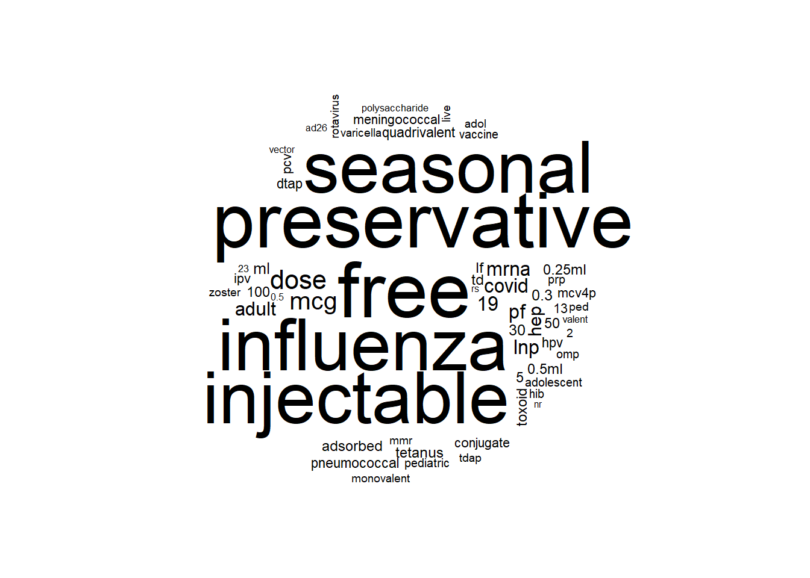
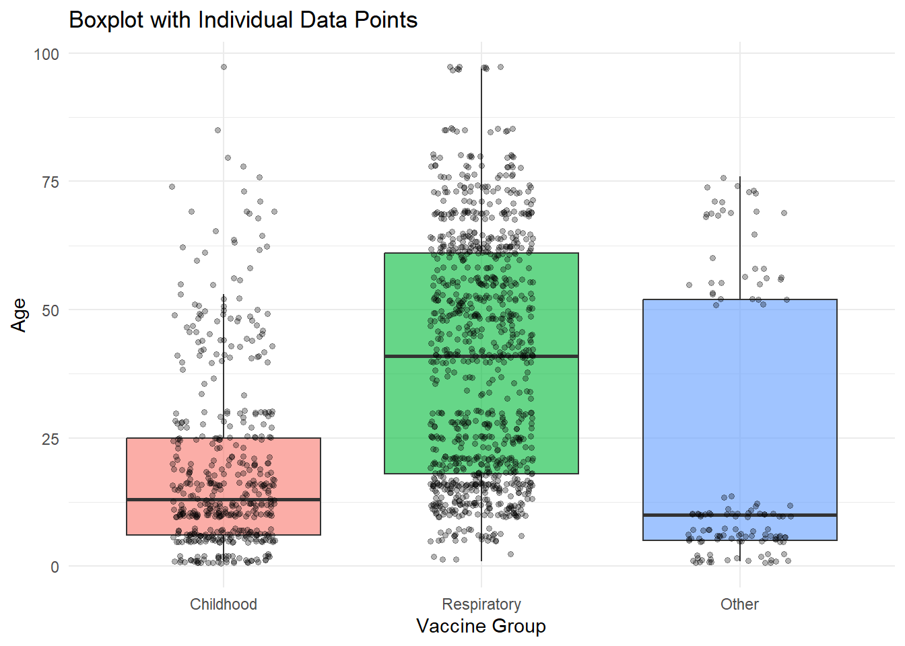
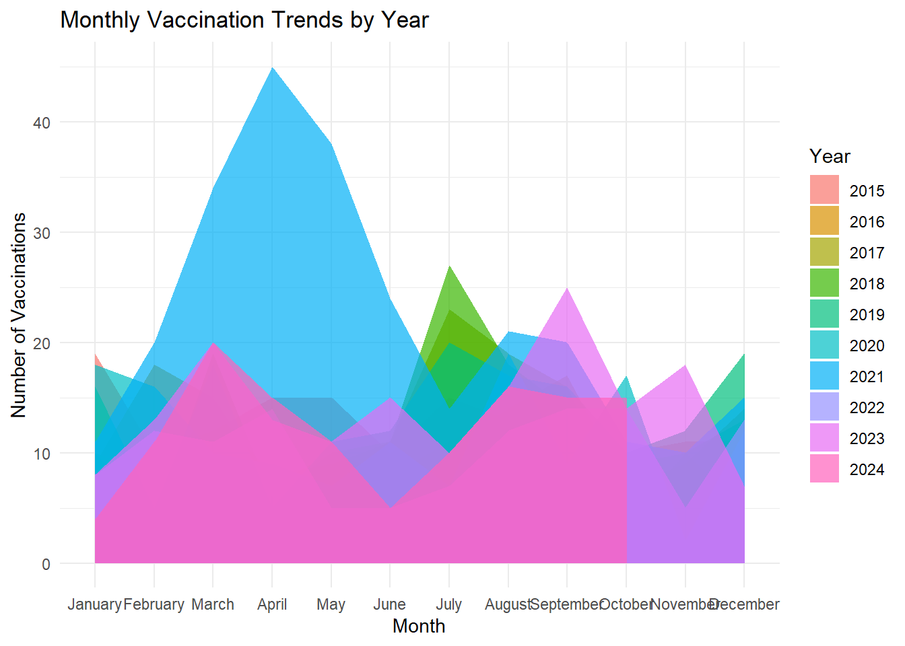

getwd() [1] "C:/Users/User/Desktop/Materials_ Course and proposals/VIP collection for Syntax code or project titles/R codes/Website profile Mod 2/Post_Blog"This presentation provides a comprehensive walkthrough of data manipulation and wrangling in R, covering foundational setup, core syntax, data importing, exploration, and transformation techniques. It systematically introduces essential R packages and functions for cleaning, summarizing, and visualizing data, followed by advanced topics such as working with dates and handling missing values. Practical sections on looping, writing functions, and building interactive Shiny applications are also included to enhance automation and interactivity. The presentation concludes with real-world case studies, demonstrating how to apply these techniques to healthcare and public health datasets. This guide is designed to build technical proficiency and practical confidence for effective data analysis using R.
This section will cover the following contents
- Installing R and RStudio
- Setting working directories
- Clearing environment and console
- Installing and loading packages (eg tidyverse, janitor, etc.)
When we begin working with R, the very first step we take is installing two important tools: R itself (the engine) and RStudio (the friendly interface we use every day). I recommend that we install R first and then RStudio immediately after.
To make this clear, I have prepared a complete video tutorial that you can watch step-by-step:
Wathc at AnalyticsHub YouTube
The video, shows:
How to Download R from the CRAN website.
Install RStudio, which gives us a powerful yet simple environment to work in.
Briefly explore basic options like font size, theme (dark/light mode), and code editor settings to make RStudio comfortable for coding.
Setting working directories
When we work in R, it’s very important that we know where R is reading from and saving to.
I often think of the working directory as the “home folder” where all my files live during an R session.
We can easily check our current working directory by typing:
getwd() [1] "C:/Users/User/Desktop/Materials_ Course and proposals/VIP collection for Syntax code or project titles/R codes/Website profile Mod 2/Post_Blog"This command tells us exactly where R is currently looking for files.
If we want to change the working directory to a folder we are working on (for example, a project folder or a course material folder), we can use:
setwd("C:/Users/User/Desktop/Materials_ Course and proposals/")Always make sure the folder path is in quotation marks and I use forward slashes / or double backslashes \\ when typing the path.
📌 We can also set the working directory easily by clicking:
Session ➔ Set Working Directory ➔ Choose Directory…
📚 Note about API tokens and special folders:
If you are using R for connecting to APIs, cloud storage, or services like GitHub, Dropbox, or Google Drive,
sometimes you will need to set a working directory where your API token file is stored (for authentication).
setwd("C:/Users/YourName/.credentials/") ⚠️ Important: Always make sure API tokens and confidential files are in a secure private directory.
Clearing environment and console
# Clear environment and console
rm(list = ls()) # To clear the environment (remove all objects in memory)
cat("\014") # To clear the console (like wiping a whiteboard)Before starting fresh in any R session, I like to clear out everything—all variables, data, and even the clutter in the console.
Installing and loading packages
We rely on a range of packages in R for data wrangling, visualization, dashboards, and reporting.
I typically create a vector of required packages and write a small loop to install any missing ones.
# ------------------ Set CRAN Repository ------------------
options(repos = c(CRAN = "https://cran.rstudio.com"))
# ------------------ List of required packages for Data Wrangling and Analysis ------------------
packages <- c(
"lubridate", "dplyr", "stringr", "zoo", "tsibble", "ggplot2", "plotly",
"readr", "readxl", "haven", "openxlsx", "labelled", "forecast",
"prettydoc", "janitor", "knitr", "rmarkdown", "yaml",
"flextable", "scales", "gt", "reactable", "DT", "gmodels", "Hmisc",
"tidyverse", "tidyr", "officer",
"shiny", "shinydashboard", "shinythemes", "mice", "shinyWidgets", "bslib", "quarto"
)
# ------------------ Install and load packages ------------------
for (pkg in packages) {
if (!require(pkg, character.only = TRUE)) {
install.packages(pkg)
}
}
# ------------------ Load required libraries with descriptions ------------------
library(lubridate) # Simplifies the manipulation of dates and times in R (e.g., formatting, extracting components)
library(dplyr) # Data manipulation: filtering, summarizing, and transforming data
library(stringr) # Simplifies string manipulation
library(tidyr) # Data tidying: reshaping with pivot_longer, pivot_wider, etc.
library(purrr) # Functional programming: map functions over lists/vectors
library(forcats) # Categorical data: reordering and labeling factor levels
library(zoo) # Infrastructure for time series objects
library(tsibble) # Tidy temporal data frames and time series modeling
library(forecast) # Forecasting functions for time series models
library(readr) # Read rectangular data like CSVs
library(readxl) # Read Excel files (.xls and .xlsx)
library(haven) # Import data from SAS, SPSS, and Stata
library(openxlsx) # Write to Excel with more control
library(labelled) # Attach and work with variable labels
library(ggplot2) # Create elegant data visualizations using the grammar of graphics
library(plotly) # Interactive visualizations using ggplot2 or standalone plotly
library(scales) # Provides scale functions for ggplot2 (e.g., log, percent)
library(janitor) # Clean data: make column names nice, tabulate, etc.
library(gmodels) # CrossTables and other classic stats tools
library(Hmisc) # Summarization and advanced table/label handling
library(mice) # missing data imputation
library(knitr) # Dynamic report generation in R
library(rmarkdown) # Convert R scripts to reports in various formats
library(prettydoc) # Beautiful HTML document templates
library(yaml) # Read and write YAML files (used in R Markdown, Quarto)
library(officer) # Export tables and reports to Word/PowerPoint
library(flextable) # Create nicely formatted tables
library(gt) # Grammar of tables for HTML and PDF output
library(reactable) # Interactive data tables
library(DT) # Wrapper of JavaScript DataTables for R
library(shiny) # Build interactive web applications directly from R
library(shinydashboard)# Create dashboard layouts for Shiny apps
library(shinythemes) # Prebuilt UI themes for Shiny apps
library(shinyWidgets) # Enhanced UI widgets for Shiny
library(bslib) # Bootstrap themes for Shiny and rmarkdown
library(quarto) # Rendering Quarto documents<-, %>%, ==, &, |, ~%in%, ::, %<>%, |>(), [], {}, "", #?function, args())In this section, we walk through the fundamental syntax building blocks of R.
Mastering these basics helps write cleaner, more efficient, and more readable code.
🔹 Operators
In R, operators are used to perform operations on objects and values:
<-, =) store values into objects.%>%, %<>%, |>) allow chaining multiple commands together.==, !=, <, >) compare values for equality or relational logic.&, |, !) build logical expressions (AND, OR, NOT).~) defines models and formulas, e.g., y ~ x1 + x2.%in%) checks whether an element belongs to a set.::) calls a function from a package without loading the full package.🔹 Symbols
Symbols are special characters used in structuring R code:
() : Used for function calls and setting arguments.[] : Indexing vectors, matrices, or data frames.{} : Grouping multiple expressions into a code block."" or '' : Define character strings.# : Create comments that are ignored during code execution.🔹 Help Functions
?function_name : Access the help documentation for any function.
args(function_name) : Display the arguments a function accepts.
🔹 Scripting in .R, .Rmd, .qmd
| Format | Description | Best Use Case |
|---|---|---|
.R |
Basic R script. Contains code only, no formatting or output. | Exploratory coding, testing snippets |
.Rmd |
R Markdown file. Supports code + text + output in one file. | Reproducible reports, presentations, notebooks |
.qmd |
Quarto document. Successor to R Markdown with more flexible publishing. | Polished reports, web publishing, multi-language |
📊 R Syntax Essentials Summary
| Element | Symbol / Syntax | What It Does |
|---|---|---|
| Assignment | <-, = |
Assign a value to a variable (e.g., x <- 5) |
| Pipe | %>%, %<>%, |> |
Pass or transform results between functions |
| Comparison | ==, !=, <, > |
Compare values (equal, not equal, less than, etc.) |
| Logical | &, |, ! |
Logical conditions: AND, OR, NOT |
| Formula | ~ |
Define model formulas (e.g., y ~ x1 + x2) |
| Membership Test | %in% |
Check if an element exists within a vector |
| Package Function Access | :: |
Call a function from a specific package without loading it |
| Function Call | () |
Call a function with arguments (e.g., mean(x)) |
| Indexing | [] |
Access parts of data structures (e.g., x[1], df[2,3]) |
| Code Block | {} |
Group multiple lines (loops, conditionals) |
| Strings | "text", 'text' |
Define character strings |
| Commenting | # |
Insert a comment ignored by R |
| Help Functions | ?function, args(function) |
Access help or check function arguments |
| Output Format | .R, .Rmd, .qmd |
File formats for scripting or reporting |
?mean # Opens the help page for the ‘mean’ function
args(mean) # Lists input arguments for ‘mean’
In this section, I highlight essential RStudio shortcut keys that improve coding efficiency and simplify the workflow for scripting and reporting.
| Shortcut | Action |
|---|---|
Ctrl + Z |
Undo the last action |
Ctrl + Shift + Z |
Redo the undone action |
Ctrl + Enter |
Execute the current line or selected block |
Alt + - |
Insert assignment operator <- |
Ctrl + Shift + M |
Insert pipe operator %>% |
Ctrl + L |
Clear the console output |
Ctrl + Shift + C |
Comment or uncomment selected lines |
Ctrl + Shift + S |
Source and run the entire script |
Ctrl + Alt + I |
Insert a new R Markdown or Quarto code chunk |
Element | Vector | Matrix | |Data Frame | Data Table | List | Factor | Variable | Object
This section provides a brief overview of foundational R data structures.
For more detailed explanations and demonstrations, refer to:
Understanding these fundamental terms is essential for working effectively with R data analysis and wrangling.
🔹 Brief Narration of Key Terms
data.table package — for very large datasets and faster manipulation.🔍 Summary Table: R Objects
| Term | Definition |
|---|---|
| Element | A single unit of data (e.g., 5, "apple") |
| Vector | A sequence of elements of the same type |
| Matrix | A two-dimensional collection of homogeneous elements |
| Data Frame | A two-dimensional table with heterogeneous column types |
| Data Table | A fast and memory-efficient data frame extension (data.table package) |
| List | A flexible container for different types of elements |
| Factor | A categorical variable with predefined levels |
| Variable | A named object that stores data |
| Object | Any entity stored in R (data, functions, models, etc.) |
This section summarizes key chunk options and syntax used in Quarto and R Markdown.
These settings allow flexible control over code execution, output display, figure formatting, and reporting behavior.
| Feature | Quarto Syntax | Description |
|---|---|---|
| Code Chunks | {r} |
Used to write and execute R code. You can specify options like echo, results. |
| Echoing Code | echo: true |
Displays the code in the output (default is true). Set to false to hide the code. |
| Include Code | include: false |
Executes code but does not show the code in the final output. |
| Evaluating Code | eval: false |
Prevents the code from running but still displays the code in the output. |
| Results Control | results: 'markup' or results: 'asis' |
Controls how output results are displayed (formatted or raw). |
| Message and Warnings | message: false, warning: false |
Controls whether messages and warnings appear in the output. |
| Output File Format | output: html |
Specifies output format (html, pdf, word). Default is html. |
| Table Output | results: 'asis' or results: 'markup' |
Ensures clean table rendering for formatted output. |
| Chunk Labeling | # Label |
Labels help organize and reference code chunks easily. |
| Inline Code | Your value is 2 times. | Embeds live code inside text for dynamic reporting. |
| Caching Results | cache: true |
Saves chunk results to avoid rerunning unchanged code. It stores the output (like objects, plots, and printed results) in a cache directory |
| Figure Options | fig.width: 7, fig.height: 5, fig.align: 'center' |
Adjusts figure size and alignment in output documents. |
| Output as LaTeX | latex: true |
Allows LaTeX formatting (mainly for PDFs and math expressions). |
| Commenting Code | # (within chunks) |
Standard way to comment within R code chunks. |
➡️ Mastering these options ensures smoother report generation, cleaner outputs, and faster rendering when building professional documents in Quarto or R Markdown.
getwd(), paste()read_csv(), read_excel(), read.delim(), readRDS().tsv, .dta, and .sav files (foreign and haven packages)Before we begin analyzing data in R, we need to bring it in from where it’s stored—your computer, the cloud, or an online source.
There are many formats we commonly work with in public health and analytics: CSV, Excel, text files, RDS, SPSS, and others.
Below is a summary table of functions used to read each data type.
📊 Reading Common Data Types in R
| Data Type | Function | Package | Example |
|---|---|---|---|
| CSV | read_csv(), read.csv() |
readr / base | read_csv("file.csv") |
| Excel (.xls/.xlsx) | read_excel() |
readxl | read_excel("file.xlsx") |
| Tab-separated (.tsv) | read_tsv() |
readr | read_tsv("file.tsv") |
| Text (.txt) | read.delim() |
base | read.delim("file.txt") |
| Stata (.dta) | read_dta() |
haven | read_dta("file.dta") |
| SPSS (.sav) | read_sav() |
haven | read_sav("file.sav") |
| RDS (R object) | readRDS() |
base | readRDS("object.rds") |
| ZIP archives | unzip() |
utils (base) | unzip("data.zip", exdir = "folder") |
| Online Excel/CSV | download.file() + reader |
base + readxl | Download file, then read_excel(temp_file) |
Before reading files, I usually set the working directory to the folder where my files are saved. This avoids typing full file paths every time.
To combine folder names and filenames dynamically: paste(getwd(), “my_data.csv”, sep = “/”)
Reading Local Files
Once you’re in the right working directory, you can read in your files like below:
setwd("C:/Users/User/Desktop/Materials_ Course and proposals/Course Related/DataCamp/Data/Synthetic_data")
patients <- read.csv("patients.csv")
vaccination <- read.csv("immunizations.csv")
medications <- read.csv (paste(getwd(), "medications.csv", sep = "/"))These are standard CSVs and can be read using read.csv() from base R, or read_csv() from the readr package for cleaner output.
Reading from ZIP Files
Sometimes, especially when downloading from government databases or health systems, data is compressed into .zip files. In R, we can easily unzip these files and extract their contents.
Set working directory to the folder where the zip file is located
# --- Define base folder manually (safe way without setwd)
base_folder <- "C:/Users/User/Desktop/Materials_ Course and proposals/Course Related/DataCamp/Data/Synthetic_data"
# --- Extract ZIP file into 'procedures' folder inside base
unzip(file.path(base_folder, "procedures.zip"), exdir = file.path(base_folder, "procedures"))
# --- List extracted files
list.files(file.path(base_folder, "procedures"))[1] "procedures" "procedures.csv"# --- Read extracted CSV
procedures <- read.csv(file.path(base_folder, "procedures", "procedures.csv"))Reading Online Files
If the file is online, we first download it, save it to a temporary file, and then read it:
It is useful when working with shared datasets, APIs, or GitHub repos.
# Upload Online data
url <- "https://raw.githubusercontent.com/HabtamuBizuayehu/Data-sources/main/Breast_cancer_screening.xls"
temp_file <- tempfile(fileext = ".xls")
download.file(url, temp_file, mode = "wb")
breast_cancer_data <- read_excel(temp_file)2.2 Exploring Data
str(), summary(), glimpse(), head(), tail(), count()view(), nrow(), ncol()janitor::clean_names()Once we load data into R, it’s important to explore it properly before doing any analysis.
This step helps us understand:
What variables we have
How the data is structured
If there are any issues (like missing values, wrong data types, weird names)
In this part, we’ll look at some essential functions we often use at the very beginning of a project.
🔍 Key Tools for Exploring Data (with Important Details and Tips)
1. str(), summary(), glimpse(), head(), tail(), count()
str(df) shows the structure of the entire dataset: number of observations (rows), number of variables (columns), and data types.
str(df$var) shows the structure of a specific variable (single column), useful to quickly check type and contents.
summary(df) gives basic descriptive statistics for all variables at once.
summary(df$var) gives a summary for one specific variable.
glimpse(df) (from dplyr) provides a compact sideways overview showing each variable name, type, and preview of values.
head(df) shows the first 6 rows of the dataset by default.
head(df, n = 10) shows the first 10 rows (you can customize the number with n =).
tail(df) shows the last 6 rows of the dataset.
tail(df, n = 8) shows the last 8 rows.
count(df, var) (from dplyr) counts occurrences of each unique value in a variable.
➡️ Using str(df$var) and summary(df$var) is a fast way to inspect just one column without needing the whole dataset.
2. Viewing Data
view(df) opens an Excel-like data viewer window inside RStudio for easy manual exploration.nrow(df) returns the number of rows.ncol(df) returns the number of columns.dim(df) returns a two-number vector: (rows, columns).➡️ Use view(df) when you want to sort/filter manually without coding.
3. Cleaning Variable Names
janitor::clean_names(df) standardizes messy variable names:
➡️ Run clean_names() immediately after loading raw survey, registry, or administrative datasets.
Example:
names(patients) [1] "Id" "BIRTHDATE" "DEATHDATE"
[4] "SSN" "DRIVERS" "PASSPORT"
[7] "PREFIX" "FIRST" "MIDDLE"
[10] "LAST" "SUFFIX" "MAIDEN"
[13] "MARITAL" "RACE" "ETHNICITY"
[16] "GENDER" "BIRTHPLACE" "ADDRESS"
[19] "CITY" "STATE" "COUNTY"
[22] "FIPS" "ZIP" "LAT"
[25] "LON" "HEALTHCARE_EXPENSES" "HEALTHCARE_COVERAGE"
[28] "INCOME" temp <- janitor::clean_names(patients)
colnames(temp) [1] "id" "birthdate" "deathdate"
[4] "ssn" "drivers" "passport"
[7] "prefix" "first" "middle"
[10] "last" "suffix" "maiden"
[13] "marital" "race" "ethnicity"
[16] "gender" "birthplace" "address"
[19] "city" "state" "county"
[22] "fips" "zip" "lat"
[25] "lon" "healthcare_expenses" "healthcare_coverage"
[28] "income" rm(temp)🔍 Listing All Data Frames and Variables
To organize and review datasets loaded in the environment, the following workflow lists all data frames and their variables:
rm (breast_cancer_data, patients)
# 1. List all data frames in the environment
dfs <- ls(envir = .GlobalEnv)[sapply(ls(envir = .GlobalEnv), function(x) is.data.frame(get(x)))]
# 2. For each data frame, list its variable (column) names
df_variables <- lapply(dfs, function(df_name) {
vars <- names(get(df_name))
data.frame(
DataFrame = df_name,
Variable = vars,
stringsAsFactors = FALSE
)
})
# 3. Combine into one clean table
df_variables_all <- do.call(rbind, df_variables)
# View the result
print(df_variables_all) DataFrame Variable
1 medications START
2 medications STOP
3 medications PATIENT
4 medications PAYER
5 medications ENCOUNTER
6 medications CODE
7 medications DESCRIPTION
8 medications BASE_COST
9 medications PAYER_COVERAGE
10 medications DISPENSES
11 medications TOTALCOST
12 medications REASONCODE
13 medications REASONDESCRIPTION
14 procedures START
15 procedures STOP
16 procedures PATIENT
17 procedures ENCOUNTER
18 procedures SYSTEM
19 procedures CODE
20 procedures DESCRIPTION
21 procedures BASE_COST
22 procedures REASONCODE
23 procedures REASONDESCRIPTION
24 vaccination DATE
25 vaccination PATIENT
26 vaccination ENCOUNTER
27 vaccination CODE
28 vaccination DESCRIPTION
29 vaccination BASE_COSTrm (df_variables_all, df_variables) # clean working enviroment 4. Creating a Data Dictionary
A data dictionary is a simple but critical table that documents:
➡️ We can automate building a basic data dictionary by combining names(), sapply(), and class() functions.
data_dictionary <- data.frame(
Variable = names(patients),
Type = sapply(patients, class)
)The dictionary can be expanded by manually adding descriptions, coding instructions, or value mappings where necessary.
5. Working with Column Names and Types
names(df) or colnames(df) retrieves a list of all column names.
class(df$var) reveals the data type of a specific variable.
sapply(df, class) applies class() across all variables and summarizes their types.
If needed, variables can be recast to appropriate types.
📊 Summary Table: Key Functions for Exploring Data
| Task | Function | Purpose / What It Does |
|---|---|---|
| View structure of dataset | str(df) |
Shows structure: number of rows, columns, and variable types |
| View structure of variable | str(df$var) |
Shows structure/type of a specific variable |
| Summarize statistics (dataset) | summary(df) |
Provides summary stats (min, max, mean, NA count) for all variables |
| Summarize statistics (variable) | summary(df$var) |
Summary stats for a specific variable |
| Compact structure overview | glimpse(df) |
Quick, sideways compact view of dataset (from dplyr) |
| Preview first rows | head(df), head(df, n = 10) |
Displays first 6 or specified number of rows |
| Preview last rows | tail(df), tail(df, n = 8) |
Displays last 6 or specified number of rows |
| Count frequencies | count(df, var) |
Counts unique values and frequency of a specified variable |
| Open full viewer | view(df) |
Opens Excel-style data viewer window (RStudio) |
| Check number of rows | nrow(df) |
Returns number of rows (observations) |
| Check number of columns | ncol(df) |
Returns number of columns (variables) |
| Check both dimensions | dim(df) |
Returns (rows, columns) as a two-number vector |
| Clean column names | janitor::clean_names(df) |
Converts messy names into lowercase, underscore-separated names |
| List variable names | names(df), colnames(df) |
Lists all column names in a data frame |
| Check variable type | class(df$var) |
Returns data type of a specific variable |
| Check types for all variables | sapply(df, class) |
Returns data types for every column in the dataset |
| Create basic data dictionary | data.frame(Variable = names(df), Type = sapply(df, class)) |
Table summarizing variable names and types |
| List all data frames in environment | dfs <- ls(...)[sapply(...)] |
Identifies and lists all data frames currently loaded |
| List all variables from all data frames | lapply(dfs, function(x) names(get(x))) |
Creates table listing data frames and their variables |
Now I can apply some of the above to my datasets (df): such as breast_cancer_data, vaccination, patients
breast_cancer_data_demo <- breast_cancer_data %>%
select(sa3name, state, year, part50_74, rate50_74)
# Structure of the demo dataset
str(breast_cancer_data_demo)'data.frame': 1364 obs. of 5 variables:
$ sa3name : chr "Queanbeyan" "Queanbeyan" "Queanbeyan" "Queanbeyan" ...
$ state : chr "NSW" "NSW" "NSW" "NSW" ...
$ year : int 201617 201718 201819 201920 201617 201718 201819 201920 201617 201718 ...
$ part50_74: num 4875 5048 5276 5179 1850 ...
$ rate50_74: num 60.5 60.8 61.4 58.2 59.7 ...# Summary statistics for rate50_74
summary(breast_cancer_data_demo$rate50_74) Min. 1st Qu. Median Mean 3rd Qu. Max. NA's
5.40 50.07 54.50 53.63 57.88 80.20 135 # Display first 10 rows
head(breast_cancer_data_demo, 10) sa3name state year part50_74 rate50_74
1 Queanbeyan NSW 201617 4875 60.50000
2 Queanbeyan NSW 201718 5048 60.75961
3 Queanbeyan NSW 201819 5276 61.43839
4 Queanbeyan NSW 201920 5179 58.16834
5 Snowy Mountains NSW 201617 1850 59.70000
6 Snowy Mountains NSW 201718 1910 61.54862
7 Snowy Mountains NSW 201819 2039 65.12912
8 Snowy Mountains NSW 201920 1979 62.23419
9 South Coast NSW 201617 9469 62.80000
10 South Coast NSW 201718 9565 62.94230# Count number of records
count(breast_cancer_data_demo) n
1 1364# Show variable names
names(breast_cancer_data_demo)[1] "sa3name" "state" "year" "part50_74" "rate50_74"dplyrIn this part, we focus on mastering core data wrangling skills using the dplyr package, one of the most powerful tools in R for data manipulation.
We will learn how to select, rename, create, modify, group, sort, slice, and reshape datasets.
These operations form the foundation for preparing clean, organized, and analysis-ready data.
Each subsection introduces a set of essential verbs (select(), mutate(), group_by(), etc.) that allow for data transformation pipelines. Examples and practical applications will be provided throughout to demonstrate how to use dplyr.
select(), rename(), relocate()`starts_with(), ends_with(), contains(), last_clos, matchesSelecting, reordering, and renaming variables is often the first step when preparing a dataset for analysis.
In dplyr, we use functions such as select(), rename(), and relocate() to organize variables, clean up data, and prepare for transformations.
Dropping unnecessary columns or reordering variables can make the data cleaner, faster to work with, and easier to understand.
Additional tools allow modifying groups of column names by adding prefixes or suffixes, and safely handling missing columns during selection.
🔹 Summary of Functions for Selecting, Reordering, Dropping, and Renaming
| Task | Function | Purpose |
|---|---|---|
| Select specific columns | select() |
Choose a subset of columns based on name or condition |
| Rename columns | rename() |
Rename one or multiple columns |
| Relocate columns | relocate() |
Move selected columns to a new position |
| Reorder manually | select(a, b, c, everything()) |
Explicitly define column order |
| Find columns by pattern | starts_with(), ends_with(), contains(), matches() |
Select columns matching a pattern |
| Drop single column | select(-col1) |
Remove one variable |
| Drop multiple columns | select(-col1, -col2) |
Remove several variables |
| Drop by pattern | select(-starts_with("temp")), select(-contains("score")) |
Remove variables based on naming patterns |
| Add prefix to column names | rename_with(~ paste0("prefix_", .x)) |
Add a prefix to selected columns |
| Add suffix to column names | rename_with(~ paste0(.x, "_suffix")) |
Add a suffix to selected columns |
| Handle missing columns safely | if("var" %in% names(df)) {} |
Avoid errors when column does not exist |
➡️ These techniques allow quick restructuring of datasets, improving workflow efficiency and clarity.
🔹 Examples Using the vaccination Dataset
# Selecting specific columns manually
breast_selected <- breast_cancer_data %>%
select(sa3code, sa3name, year, part50_74, pop50_74)
head(breast_selected, n = 3) sa3code sa3name year part50_74 pop50_74
1 10102 Queanbeyan 201617 4875 8052
2 10102 Queanbeyan 201718 5048 8309
3 10102 Queanbeyan 201819 5276 8588# Reordering columns manually (bring year, sa3name, state first)
bc_reorder_manual <- breast_cancer_data %>%
select(year, sa3name, state, everything())
head(bc_reorder_manual, n = 3) year sa3name state sa3code sa3coden part50_74 pop50_74 rate50_74
1 201617 Queanbeyan NSW 10102 10102 4875 8052 60.50000
2 201718 Queanbeyan NSW 10102 10102 5048 8309 60.75961
3 201819 Queanbeyan NSW 10102 10102 5276 8588 61.43839
agen50_74 expct50_74 part50_69 pop50_69 rate50_69 agen50_69 expct50_69
1 3 4428 4309 7145 60.30000 2 3929
2 3 4553 4448 7338 60.62238 2 4013
3 3 4706 4629 7548 61.33203 2 4113
part50_54 pop50_54 rate50_54 agen50_54 expct50_54 part55_59 pop55_59
1 1284 2251 57.00000 1 1118 1188 1970
2 1285 2306 55.72035 1 1143 1260 2030
3 1375 2342 58.70977 1 1166 1252 2093
rate55_59 agen55_59 expct55_59 part60_64 pop60_64 rate60_64 agen60_64
1 60.30000 4 1046 1012 1625 62.30000 5
2 62.09035 4 1069 1048 1646 63.69947 5
3 59.81504 4 1098 1105 1689 65.43657 5
expct60_64 part65_69 pop65_69 rate65_69 agen65_69 expct65_69 part70_74
1 950 826 1300 63.50000 6 781 566
2 953 855 1357 63.02558 6 812 600
3 967 898 1426 63.00429 6 849 647
pop70_74 rate70_74 agen70_74 expct70_74
1 907 62.40000 7 498
2 971 61.79725 7 541
3 1040 62.21032 7 585# Relocating specific columns before another variable
bc_relocate_before <- breast_cancer_data %>%
relocate(part50_74, pop50_74, .before = rate50_74)
head(bc_relocate_before, n = 3) sa3code sa3coden sa3name state year part50_74 pop50_74 rate50_74
1 10102 10102 Queanbeyan NSW 201617 4875 8052 60.50000
2 10102 10102 Queanbeyan NSW 201718 5048 8309 60.75961
3 10102 10102 Queanbeyan NSW 201819 5276 8588 61.43839
agen50_74 expct50_74 part50_69 pop50_69 rate50_69 agen50_69 expct50_69
1 3 4428 4309 7145 60.30000 2 3929
2 3 4553 4448 7338 60.62238 2 4013
3 3 4706 4629 7548 61.33203 2 4113
part50_54 pop50_54 rate50_54 agen50_54 expct50_54 part55_59 pop55_59
1 1284 2251 57.00000 1 1118 1188 1970
2 1285 2306 55.72035 1 1143 1260 2030
3 1375 2342 58.70977 1 1166 1252 2093
rate55_59 agen55_59 expct55_59 part60_64 pop60_64 rate60_64 agen60_64
1 60.30000 4 1046 1012 1625 62.30000 5
2 62.09035 4 1069 1048 1646 63.69947 5
3 59.81504 4 1098 1105 1689 65.43657 5
expct60_64 part65_69 pop65_69 rate65_69 agen65_69 expct65_69 part70_74
1 950 826 1300 63.50000 6 781 566
2 953 855 1357 63.02558 6 812 600
3 967 898 1426 63.00429 6 849 647
pop70_74 rate70_74 agen70_74 expct70_74
1 907 62.40000 7 498
2 971 61.79725 7 541
3 1040 62.21032 7 585# Relocating specific columns after another variable
bc_relocate_after <- breast_cancer_data %>%
relocate(sa3name, state, .after = year)
head(bc_relocate_after, n = 3) sa3code sa3coden year sa3name state part50_74 pop50_74 rate50_74
1 10102 10102 201617 Queanbeyan NSW 4875 8052 60.50000
2 10102 10102 201718 Queanbeyan NSW 5048 8309 60.75961
3 10102 10102 201819 Queanbeyan NSW 5276 8588 61.43839
agen50_74 expct50_74 part50_69 pop50_69 rate50_69 agen50_69 expct50_69
1 3 4428 4309 7145 60.30000 2 3929
2 3 4553 4448 7338 60.62238 2 4013
3 3 4706 4629 7548 61.33203 2 4113
part50_54 pop50_54 rate50_54 agen50_54 expct50_54 part55_59 pop55_59
1 1284 2251 57.00000 1 1118 1188 1970
2 1285 2306 55.72035 1 1143 1260 2030
3 1375 2342 58.70977 1 1166 1252 2093
rate55_59 agen55_59 expct55_59 part60_64 pop60_64 rate60_64 agen60_64
1 60.30000 4 1046 1012 1625 62.30000 5
2 62.09035 4 1069 1048 1646 63.69947 5
3 59.81504 4 1098 1105 1689 65.43657 5
expct60_64 part65_69 pop65_69 rate65_69 agen65_69 expct65_69 part70_74
1 950 826 1300 63.50000 6 781 566
2 953 855 1357 63.02558 6 812 600
3 967 898 1426 63.00429 6 849 647
pop70_74 rate70_74 agen70_74 expct70_74
1 907 62.40000 7 498
2 971 61.79725 7 541
3 1040 62.21032 7 585# Dropping one variable
bc_drop_one <- breast_cancer_data %>%
select(-expct50_74)
head(bc_drop_one, n = 3) sa3code sa3coden sa3name state year part50_74 pop50_74 rate50_74
1 10102 10102 Queanbeyan NSW 201617 4875 8052 60.50000
2 10102 10102 Queanbeyan NSW 201718 5048 8309 60.75961
3 10102 10102 Queanbeyan NSW 201819 5276 8588 61.43839
agen50_74 part50_69 pop50_69 rate50_69 agen50_69 expct50_69 part50_54
1 3 4309 7145 60.30000 2 3929 1284
2 3 4448 7338 60.62238 2 4013 1285
3 3 4629 7548 61.33203 2 4113 1375
pop50_54 rate50_54 agen50_54 expct50_54 part55_59 pop55_59 rate55_59
1 2251 57.00000 1 1118 1188 1970 60.30000
2 2306 55.72035 1 1143 1260 2030 62.09035
3 2342 58.70977 1 1166 1252 2093 59.81504
agen55_59 expct55_59 part60_64 pop60_64 rate60_64 agen60_64 expct60_64
1 4 1046 1012 1625 62.30000 5 950
2 4 1069 1048 1646 63.69947 5 953
3 4 1098 1105 1689 65.43657 5 967
part65_69 pop65_69 rate65_69 agen65_69 expct65_69 part70_74 pop70_74
1 826 1300 63.50000 6 781 566 907
2 855 1357 63.02558 6 812 600 971
3 898 1426 63.00429 6 849 647 1040
rate70_74 agen70_74 expct70_74
1 62.40000 7 498
2 61.79725 7 541
3 62.21032 7 585# Dropping multiple variables
bc_drop_multiple <- breast_cancer_data %>%
select(-expct50_74, -expct50_69)
head(bc_drop_multiple, n = 3) sa3code sa3coden sa3name state year part50_74 pop50_74 rate50_74
1 10102 10102 Queanbeyan NSW 201617 4875 8052 60.50000
2 10102 10102 Queanbeyan NSW 201718 5048 8309 60.75961
3 10102 10102 Queanbeyan NSW 201819 5276 8588 61.43839
agen50_74 part50_69 pop50_69 rate50_69 agen50_69 part50_54 pop50_54 rate50_54
1 3 4309 7145 60.30000 2 1284 2251 57.00000
2 3 4448 7338 60.62238 2 1285 2306 55.72035
3 3 4629 7548 61.33203 2 1375 2342 58.70977
agen50_54 expct50_54 part55_59 pop55_59 rate55_59 agen55_59 expct55_59
1 1 1118 1188 1970 60.30000 4 1046
2 1 1143 1260 2030 62.09035 4 1069
3 1 1166 1252 2093 59.81504 4 1098
part60_64 pop60_64 rate60_64 agen60_64 expct60_64 part65_69 pop65_69
1 1012 1625 62.30000 5 950 826 1300
2 1048 1646 63.69947 5 953 855 1357
3 1105 1689 65.43657 5 967 898 1426
rate65_69 agen65_69 expct65_69 part70_74 pop70_74 rate70_74 agen70_74
1 63.50000 6 781 566 907 62.40000 7
2 63.02558 6 812 600 971 61.79725 7
3 63.00429 6 849 647 1040 62.21032 7
expct70_74
1 498
2 541
3 585# Dropping variables by pattern (e.g., columns ending with "_69")
bc_drop_by_pattern <- breast_cancer_data %>%
select(-ends_with("_69"))
head(bc_drop_by_pattern, n = 3) sa3code sa3coden sa3name state year part50_74 pop50_74 rate50_74
1 10102 10102 Queanbeyan NSW 201617 4875 8052 60.50000
2 10102 10102 Queanbeyan NSW 201718 5048 8309 60.75961
3 10102 10102 Queanbeyan NSW 201819 5276 8588 61.43839
agen50_74 expct50_74 part50_54 pop50_54 rate50_54 agen50_54 expct50_54
1 3 4428 1284 2251 57.00000 1 1118
2 3 4553 1285 2306 55.72035 1 1143
3 3 4706 1375 2342 58.70977 1 1166
part55_59 pop55_59 rate55_59 agen55_59 expct55_59 part60_64 pop60_64
1 1188 1970 60.30000 4 1046 1012 1625
2 1260 2030 62.09035 4 1069 1048 1646
3 1252 2093 59.81504 4 1098 1105 1689
rate60_64 agen60_64 expct60_64 part70_74 pop70_74 rate70_74 agen70_74
1 62.30000 5 950 566 907 62.40000 7
2 63.69947 5 953 600 971 61.79725 7
3 65.43657 5 967 647 1040 62.21032 7
expct70_74
1 498
2 541
3 585# Renaming a column for clarity
breast_renamed <- breast_selected %>%
rename(SA3_Code = sa3code, SA3_Name = sa3name, Year = year)
head(breast_renamed, n = 3) SA3_Code SA3_Name Year part50_74 pop50_74
1 10102 Queanbeyan 201617 4875 8052
2 10102 Queanbeyan 201718 5048 8309
3 10102 Queanbeyan 201819 5276 8588# Adding a prefix to all column names
bc_prefixed <- breast_cancer_data %>%
rename_with(~ paste0("bc_", .x))
head(bc_prefixed, n = 3) bc_sa3code bc_sa3coden bc_sa3name bc_state bc_year bc_part50_74 bc_pop50_74
1 10102 10102 Queanbeyan NSW 201617 4875 8052
2 10102 10102 Queanbeyan NSW 201718 5048 8309
3 10102 10102 Queanbeyan NSW 201819 5276 8588
bc_rate50_74 bc_agen50_74 bc_expct50_74 bc_part50_69 bc_pop50_69 bc_rate50_69
1 60.50000 3 4428 4309 7145 60.30000
2 60.75961 3 4553 4448 7338 60.62238
3 61.43839 3 4706 4629 7548 61.33203
bc_agen50_69 bc_expct50_69 bc_part50_54 bc_pop50_54 bc_rate50_54 bc_agen50_54
1 2 3929 1284 2251 57.00000 1
2 2 4013 1285 2306 55.72035 1
3 2 4113 1375 2342 58.70977 1
bc_expct50_54 bc_part55_59 bc_pop55_59 bc_rate55_59 bc_agen55_59
1 1118 1188 1970 60.30000 4
2 1143 1260 2030 62.09035 4
3 1166 1252 2093 59.81504 4
bc_expct55_59 bc_part60_64 bc_pop60_64 bc_rate60_64 bc_agen60_64
1 1046 1012 1625 62.30000 5
2 1069 1048 1646 63.69947 5
3 1098 1105 1689 65.43657 5
bc_expct60_64 bc_part65_69 bc_pop65_69 bc_rate65_69 bc_agen65_69
1 950 826 1300 63.50000 6
2 953 855 1357 63.02558 6
3 967 898 1426 63.00429 6
bc_expct65_69 bc_part70_74 bc_pop70_74 bc_rate70_74 bc_agen70_74
1 781 566 907 62.40000 7
2 812 600 971 61.79725 7
3 849 647 1040 62.21032 7
bc_expct70_74
1 498
2 541
3 585# Adding a suffix to all column names
bc_suffixed <- breast_cancer_data %>%
rename_with(~ paste0(.x, "_info"))
head(bc_suffixed, n = 3) sa3code_info sa3coden_info sa3name_info state_info year_info part50_74_info
1 10102 10102 Queanbeyan NSW 201617 4875
2 10102 10102 Queanbeyan NSW 201718 5048
3 10102 10102 Queanbeyan NSW 201819 5276
pop50_74_info rate50_74_info agen50_74_info expct50_74_info part50_69_info
1 8052 60.50000 3 4428 4309
2 8309 60.75961 3 4553 4448
3 8588 61.43839 3 4706 4629
pop50_69_info rate50_69_info agen50_69_info expct50_69_info part50_54_info
1 7145 60.30000 2 3929 1284
2 7338 60.62238 2 4013 1285
3 7548 61.33203 2 4113 1375
pop50_54_info rate50_54_info agen50_54_info expct50_54_info part55_59_info
1 2251 57.00000 1 1118 1188
2 2306 55.72035 1 1143 1260
3 2342 58.70977 1 1166 1252
pop55_59_info rate55_59_info agen55_59_info expct55_59_info part60_64_info
1 1970 60.30000 4 1046 1012
2 2030 62.09035 4 1069 1048
3 2093 59.81504 4 1098 1105
pop60_64_info rate60_64_info agen60_64_info expct60_64_info part65_69_info
1 1625 62.30000 5 950 826
2 1646 63.69947 5 953 855
3 1689 65.43657 5 967 898
pop65_69_info rate65_69_info agen65_69_info expct65_69_info part70_74_info
1 1300 63.50000 6 781 566
2 1357 63.02558 6 812 600
3 1426 63.00429 6 849 647
pop70_74_info rate70_74_info agen70_74_info expct70_74_info
1 907 62.40000 7 498
2 971 61.79725 7 541
3 1040 62.21032 7 585# Handling missing columns safely during selection
if ("non_existing_column" %in% names(breast_cancer_data)) {
bc_safe_select <- breast_cancer_data %>%
select(non_existing_column)
head(bc_safe_select, n = 3)
} else {
message("Column 'non_existing_column' not found in breast_cancer_data.")
}Column 'non_existing_column' not found in breast_cancer_data.# ....................................................
# Remove all temporary objects created in this chunk
# ....................................................
rm(breast_selected, breast_renamed, bc_drop_one, bc_drop_multiple, bc_drop_by_pattern,
bc_reorder_manual, bc_relocate_before, bc_relocate_after,
bc_prefixed, bc_suffixed)mutate(), transmute(), recoding, case_when(), if_else()str_detect(), regex(), %in%strsplit(), sub(), gsub(), tolower(), `janitor::clean_names()`Creating new variables or modifying existing ones is a key part of preparing data for analysis.
In dplyr, we use functions like mutate() and transmute() to add, transform, or recode variables.
We can also create conditional variables with case_when() or if_else(), and apply string operations such as splitting, replacing, or converting text.
These steps help structure the data more logically, highlight important features, or derive new indicators for analysis.
🔹 Summary of Functions for Creating and Modifying Variables
| Task | Function | Purpose |
|---|---|---|
| Create or modify variables | mutate() |
Add or transform variables, keeping all columns |
| Create new variables only | transmute() |
Keep only new variables created |
| Conditional variable creation | case_when() |
Create new variables based on multiple conditions |
| Simple conditional assignment | if_else() |
Assign based on TRUE/FALSE logic |
| Split strings into parts | strsplit() |
Split a string into components |
| Replace text (first occurrence) | sub() |
Replace first match of a pattern |
| Replace text (all occurrences) | gsub() |
Replace all matches of a pattern |
| Convert text to lowercase | tolower() |
Standardize text to lowercase |
| Detect text patterns | str_detect() |
Check if a pattern exists in text |
| Flexible pattern matching | regex() |
Use regular expressions for complex patterns |
| Membership check | %in% |
Test if a value is part of a group |
➡️ These functions allow transforming the dataset systematically to extract new features, categorize information, or clean fields.
# Creating and Modifying Variables (patients dataset)
# Creating a new age group variable
patients_mutated <- patients %>%
mutate(age_group = if_else(BIRTHDATE <= as.Date("1970-01-01"), "Below 70", "70+")) %>%
relocate(age_group, .after = BIRTHDATE) %>%
select(-Id, -DEATHDATE, -SSN, -LAT, -LON, -SUFFIX, -ZIP)
head(patients_mutated, 10) BIRTHDATE age_group DRIVERS PASSPORT PREFIX FIRST MIDDLE
1 1994-02-06 70+ S99996852 X47758697X Mr. Joshua658 Alvin56
2 1968-08-06 Below 70 S99993577 X28173268X Mr. Bennie663
3 2008-12-21 70+ Hunter736 Mckinley734
4 1994-01-27 70+ S99995100 X83694889X Mrs. Carlyn477 Florencia449
5 2019-07-27 70+ Robin66 Jeramy610
6 2019-04-18 70+ Arthur650
7 2013-08-10 70+ Caryl47 Lelia627
8 1968-08-06 Below 70 S99911538 X37637991X Mr. Willian804 Shelton25
9 2006-07-02 70+ S99943171 Ms. Domenica436
10 1948-05-28 Below 70 S99941458 X59458953X Mr. Arnulfo253 Jordan900
LAST MAIDEN MARITAL RACE ETHNICITY GENDER
1 Kunde533 M white nonhispanic M
2 Ebert178 D white nonhispanic M
3 Gerlach374 white nonhispanic M
4 Williamson769 Rogahn59 M asian nonhispanic F
5 Gleichner915 white nonhispanic M
6 Roberts511 white nonhispanic M
7 Kassulke119 white nonhispanic F
8 Keeling57 M white nonhispanic M
9 Rau926 white hispanic F
10 Jaskolski867 D white nonhispanic M
BIRTHPLACE ADDRESS CITY
1 Boston Massachusetts US 811 Kihn Viaduct Braintree
2 Chicopee Massachusetts US 975 Pfannerstill Throughway Braintree
3 Spencer Massachusetts US 548 Heller Lane Mattapoisett
4 Franklin Massachusetts US 160 Fadel Crossroad Apt 65 Wareham
5 Brockton Massachusetts US 766 Grant Loaf Unit 15 Groveland
6 Plymouth Massachusetts US 866 Kulas Harbor Cambridge
7 East Falmouth Massachusetts US 578 Dickens Camp Arlington
8 Methuen Massachusetts US 848 Ebert Knoll Unit 7 Braintree
9 Maynard Massachusetts US 963 Senger Fort Haverhill
10 Boston Massachusetts US 757 Lockman Annex Apt 10 Georgetown
STATE COUNTY FIPS HEALTHCARE_EXPENSES HEALTHCARE_COVERAGE
1 Massachusetts Norfolk County 25021 56904.96 18019.99
2 Massachusetts Norfolk County 25021 124024.12 1075.06
3 Massachusetts Plymouth County NA 45645.06 6154.94
4 Massachusetts Plymouth County NA 12895.15 659951.61
5 Massachusetts Essex County NA 18500.02 5493.57
6 Massachusetts Middlesex County 25017 14478.23 693.39
7 Massachusetts Middlesex County 25017 9821.14 27142.51
8 Massachusetts Norfolk County 25021 175817.63 55473.97
9 Massachusetts Essex County 25009 52933.16 11941.44
10 Massachusetts Essex County NA 242013.44 322768.97
INCOME
1 100511
2 49737
3 133816
4 17382
5 52159
6 75767
7 58294
8 49737
9 77756
10 35255# extract month and year from date in form of date is YYYY-MM-DD HH:MM:SS
str (vaccination$DATE) # date is YYYY-MM-DD HH:MM:SS format. chr [1:1619] "2016-04-10T09:04:48Z" "2016-04-10T09:04:48Z" ...vaccination <- vaccination %>%
mutate(
vacc_date = as.Date(strptime(DATE, format = "%Y-%m-%dT%H:%M:%SZ")), # First create vacc_date
year = format(vacc_date, "%Y"), # Extract year
month = format(vacc_date, "%B") # Extract full month name (January, February, etc.)
)
colnames(vaccination)[1] "DATE" "PATIENT" "ENCOUNTER" "CODE" "DESCRIPTION"
[6] "BASE_COST" "vacc_date" "year" "month" head(vaccination) DATE PATIENT
1 2016-04-10T09:04:48Z 30a6452c-4297-a1ac-977a-6a23237c7b46
2 2016-04-10T09:04:48Z 30a6452c-4297-a1ac-977a-6a23237c7b46
3 2016-04-10T09:04:48Z 30a6452c-4297-a1ac-977a-6a23237c7b46
4 2016-04-10T09:04:48Z 30a6452c-4297-a1ac-977a-6a23237c7b46
5 2002-10-29T19:07:21Z 34a4dcc4-35fb-6ad5-ab98-be285c586a4f
6 2005-11-01T19:07:21Z 34a4dcc4-35fb-6ad5-ab98-be285c586a4f
ENCOUNTER CODE
1 0b03e41b-06a6-66fa-b972-acc5a83b134a 140
2 0b03e41b-06a6-66fa-b972-acc5a83b134a 113
3 0b03e41b-06a6-66fa-b972-acc5a83b134a 43
4 0b03e41b-06a6-66fa-b972-acc5a83b134a 114
5 30ab48ec-35a7-7704-86e5-113ef6a90c03 140
6 d00bda57-b134-0654-e152-831ef486da53 140
DESCRIPTION BASE_COST
1 Influenza seasonal injectable preservative free 136
2 Td (adult) 5 Lf tetanus toxoid preservative free adsorbed 136
3 Hep B adult 136
4 meningococcal MCV4P 136
5 Influenza seasonal injectable preservative free 136
6 Influenza seasonal injectable preservative free 136
vacc_date year month
1 2016-04-10 2016 April
2 2016-04-10 2016 April
3 2016-04-10 2016 April
4 2016-04-10 2016 April
5 2002-10-29 2002 October
6 2005-11-01 2005 November# Creating a dataset keeping only new variables (transmute)
patients_transmuted <- patients %>%
transmute(
full_name = paste(FIRST, LAST, sep = " "),
birth_year = format(as.Date(BIRTHDATE), "%Y")
)
head (patients_transmuted) full_name birth_year
1 Joshua658 Kunde533 1994
2 Bennie663 Ebert178 1968
3 Hunter736 Gerlach374 2008
4 Carlyn477 Williamson769 1994
5 Robin66 Gleichner915 2019
6 Arthur650 Roberts511 2019# generate a birth_year_group variable based on birth_year values
patients_transmuted <- patients_transmuted %>%
mutate(birth_year_group = case_when(
birth_year < 1940 ~ "Before 1940",
birth_year >= 1940 & birth_year <= 1959 ~ "1940–1959",
birth_year >= 1960 & birth_year <= 1979 ~ "1960–1979",
birth_year >= 1980 & birth_year <= 1999 ~ "1980–1999",
birth_year >= 2000 ~ "2000 and later",
TRUE ~ NA_character_
))
head(patients_transmuted) full_name birth_year birth_year_group
1 Joshua658 Kunde533 1994 1980–1999
2 Bennie663 Ebert178 1968 1960–1979
3 Hunter736 Gerlach374 2008 2000 and later
4 Carlyn477 Williamson769 1994 1980–1999
5 Robin66 Gleichner915 2019 2000 and later
6 Arthur650 Roberts511 2019 2000 and later# other option to achieve similar result for the above
patients_transmuted <- patients_transmuted %>%
mutate(birth_year = as.numeric(birth_year), # Convert to numeric
birth_year_group = cut(birth_year, # Apply cut()
breaks = c(0, 1939, 1959, 1979, 1999, Inf),
labels = c("Before 1940", "1940–1959", "1960–1979", "1980–1999", "2000 and later"),
right = TRUE
))
head(patients_transmuted) full_name birth_year birth_year_group
1 Joshua658 Kunde533 1994 1980–1999
2 Bennie663 Ebert178 1968 1960–1979
3 Hunter736 Gerlach374 2008 2000 and later
4 Carlyn477 Williamson769 1994 1980–1999
5 Robin66 Gleichner915 2019 2000 and later
6 Arthur650 Roberts511 2019 2000 and later# Using case_when to assign marital status values
patients_case_when <- patients %>%
mutate(marital_status_group = case_when(
MARITAL == "M" ~ "Married",
MARITAL == "S" ~ "Single",
MARITAL == "D" ~ "Divorced",
TRUE ~ "Unknown"
)) %>%
select(MARITAL, marital_status_group, RACE)
head(patients_case_when, n = 10) MARITAL marital_status_group RACE
1 M Married white
2 D Divorced white
3 Unknown white
4 M Married asian
5 Unknown white
6 Unknown white
7 Unknown white
8 M Married white
9 Unknown white
10 D Divorced whitetable(patients_case_when$marital_status, useNA = "ifany") # Show missing values in the table
Divorced Married Single Unknown
15 33 12 46 # Recode marital status while leaving unknown values as missing
patients_case_when <- patients_case_when %>%
mutate(marital_2group = case_when(
MARITAL == "M" ~ "Partnered",
MARITAL == "D" | MARITAL == "S" | MARITAL == "W" ~ "Not partnered",
TRUE ~ NA_character_ # Replaces unknown values with missing (NA)
))
head(patients_case_when) MARITAL marital_status_group RACE marital_2group
1 M Married white Partnered
2 D Divorced white Not partnered
3 Unknown white <NA>
4 M Married asian Partnered
5 Unknown white <NA>
6 Unknown white <NA># Recode race status while leaving unknown values as missing
patients_case_when <- patients_case_when %>%
mutate(race_grouped = case_when(
RACE == 'white' ~ "White",
RACE == "asian" ~ "Asian",
RACE == "native" | RACE == "other" ~ "Other",
TRUE ~ NA_character_
)) %>%
select(RACE, race_grouped)
head(patients_case_when, n=10) RACE race_grouped
1 white White
2 white White
3 white White
4 asian Asian
5 white White
6 white White
7 white White
8 white White
9 white White
10 white White# Simple conditional assignment with if_else
patients$PASSPORT[patients$PASSPORT == ""] <- NA # formatting the variable to know missing values
print(sum(is.na(patients$PASSPORT))) # 31 missing value[1] 31patients_if_else <- patients %>%
mutate(has_passport = if_else(!is.na(PASSPORT), "Yes", "No")) %>%
select(PASSPORT, has_passport)
head(patients_if_else, n = 10) PASSPORT has_passport
1 X47758697X Yes
2 X28173268X Yes
3 <NA> No
4 X83694889X Yes
5 <NA> No
6 <NA> No
7 <NA> No
8 X37637991X Yes
9 <NA> No
10 X59458953X Yes# Replace the first occurrence (e.g., fix misspelled city name)
patients_sub <- patients %>%
mutate(city_fixed = sub("Nwe York", "New York", CITY)) %>%
select(-Id, -DEATHDATE, -SSN, -LAT, -LON, -SUFFIX, -ZIP)
head(patients_sub, n = 3) BIRTHDATE DRIVERS PASSPORT PREFIX FIRST MIDDLE LAST
1 1994-02-06 S99996852 X47758697X Mr. Joshua658 Alvin56 Kunde533
2 1968-08-06 S99993577 X28173268X Mr. Bennie663 Ebert178
3 2008-12-21 <NA> Hunter736 Mckinley734 Gerlach374
MAIDEN MARITAL RACE ETHNICITY GENDER BIRTHPLACE
1 M white nonhispanic M Boston Massachusetts US
2 D white nonhispanic M Chicopee Massachusetts US
3 white nonhispanic M Spencer Massachusetts US
ADDRESS CITY STATE COUNTY FIPS
1 811 Kihn Viaduct Braintree Massachusetts Norfolk County 25021
2 975 Pfannerstill Throughway Braintree Massachusetts Norfolk County 25021
3 548 Heller Lane Mattapoisett Massachusetts Plymouth County NA
HEALTHCARE_EXPENSES HEALTHCARE_COVERAGE INCOME city_fixed
1 56904.96 18019.99 100511 Braintree
2 124024.12 1075.06 49737 Braintree
3 45645.06 6154.94 133816 Mattapoisett# Replace all occurrences (e.g., replace spaces with underscores)
patients_gsub <- patients %>%
mutate(birthplace_clean = gsub(" ", "_", BIRTHPLACE)) %>%
select(BIRTHPLACE, birthplace_clean)
head(patients_gsub, n = 3) BIRTHPLACE birthplace_clean
1 Boston Massachusetts US Boston__Massachusetts__US
2 Chicopee Massachusetts US Chicopee__Massachusetts__US
3 Spencer Massachusetts US Spencer__Massachusetts__US# Convert last names to lowercase
temp <- patients %>%
select(-Id, -DEATHDATE, -SSN, -LAT, -LON, -SUFFIX, -ZIP)
patients_tolower <- temp
colnames(patients_tolower) <- tolower(colnames(patients_tolower))
head(patients_tolower, n = 3) birthdate drivers passport prefix first middle last
1 1994-02-06 S99996852 X47758697X Mr. Joshua658 Alvin56 Kunde533
2 1968-08-06 S99993577 X28173268X Mr. Bennie663 Ebert178
3 2008-12-21 <NA> Hunter736 Mckinley734 Gerlach374
maiden marital race ethnicity gender birthplace
1 M white nonhispanic M Boston Massachusetts US
2 D white nonhispanic M Chicopee Massachusetts US
3 white nonhispanic M Spencer Massachusetts US
address city state county fips
1 811 Kihn Viaduct Braintree Massachusetts Norfolk County 25021
2 975 Pfannerstill Throughway Braintree Massachusetts Norfolk County 25021
3 548 Heller Lane Mattapoisett Massachusetts Plymouth County NA
healthcare_expenses healthcare_coverage income
1 56904.96 18019.99 100511
2 124024.12 1075.06 49737
3 45645.06 6154.94 133816rm(temp)
#`janitor::clean_names(df)` standardizes variable names:
names(patients) [1] "Id" "BIRTHDATE" "DEATHDATE"
[4] "SSN" "DRIVERS" "PASSPORT"
[7] "PREFIX" "FIRST" "MIDDLE"
[10] "LAST" "SUFFIX" "MAIDEN"
[13] "MARITAL" "RACE" "ETHNICITY"
[16] "GENDER" "BIRTHPLACE" "ADDRESS"
[19] "CITY" "STATE" "COUNTY"
[22] "FIPS" "ZIP" "LAT"
[25] "LON" "HEALTHCARE_EXPENSES" "HEALTHCARE_COVERAGE"
[28] "INCOME" temp <- janitor::clean_names(patients)
colnames(temp) [1] "id" "birthdate" "deathdate"
[4] "ssn" "drivers" "passport"
[7] "prefix" "first" "middle"
[10] "last" "suffix" "maiden"
[13] "marital" "race" "ethnicity"
[16] "gender" "birthplace" "address"
[19] "city" "state" "county"
[22] "fips" "zip" "lat"
[25] "lon" "healthcare_expenses" "healthcare_coverage"
[28] "income" # Remove all temporary objects created in this chunk
rm(patients_mutated, patients_transmuted, patients_case_when, patients_if_else,
patients_split, patients_sub, patients_gsub, patients_tolower, temp)Warning in rm(patients_mutated, patients_transmuted, patients_case_when, :
object 'patients_split' not foundParsing Text Fields in R: Handling Multi-Word Names
In real-world datasets, it’s common to encounter text fields where multiple data elements—such as city, state, and country—are embedded within a single string. These entries often include inconsistent spacing, making them challenging to analyze directly.
Parsing refers to the process of systematically breaking down these complex text fields into structured, usable components.
parsing involves
"East Falmouth"), while two or more spaces might indicate the boundary between city, state, and country (e.g., "East Falmouth Massachusetts US").city, state, and country for cleaner and more structured data representation.parsing is important
Summary Table
| Step | Purpose |
|---|---|
str_view() |
Visually inspect spacing patterns between components |
str_extract_all(" +") |
Extract all space sequences |
map_int(..., length) |
Count the number of space groups per entry |
str_count("\\S+") |
Count the number of words |
nchar() with map_chr() |
Show the length of each space between words |
arrange(desc(word_count)) |
Identify rows with the most words (potential outliers) |
Detecting and Understanding Space Patterns
To begin, I used example data from the patients$BIRTHPLACE column to identify how different rows are structured and where inconsistencies might exist.
1. Visual Inspection of Spacing We can use str_view() from the stringr package to highlight space sequences:
str_view(patients$BIRTHPLACE[1:15], pattern = " +", match = TRUE) [1] │ Boston< >Massachusetts< >US
[2] │ Chicopee< >Massachusetts< >US
[3] │ Spencer< >Massachusetts< >US
[4] │ Franklin< >Massachusetts< >US
[5] │ Brockton< >Massachusetts< >US
[6] │ Plymouth< >Massachusetts< >US
[7] │ East< >Falmouth< >Massachusetts< >US
[8] │ Methuen< >Massachusetts< >US
[9] │ Maynard< >Massachusetts< >US
[10] │ Boston< >Massachusetts< >US
[11] │ Framingham< >Massachusetts< >US
[12] │ Wayland< >Massachusetts< >US
[13] │ Toulouse< >Occitanie< >FR
[14] │ Framingham< >Massachusetts< >US
[15] │ Lynn< >Massachusetts< >USThis shows, for example: East< >Falmouth< >Massachusetts< >US Where: - One space connects city words (“East Falmouth”) - Two spaces separate city, state, and country
2. Extract and Inspect Space Sequences Each row shows the space segments between words. This helps us detect whether extra or inconsistent spacing is present.
patients %>%
mutate(space_groups = str_extract_all(BIRTHPLACE, " +")) %>%
select(BIRTHPLACE, space_groups) %>%
head() BIRTHPLACE space_groups
1 Boston Massachusetts US ,
2 Chicopee Massachusetts US ,
3 Spencer Massachusetts US ,
4 Franklin Massachusetts US ,
5 Brockton Massachusetts US ,
6 Plymouth Massachusetts US , 3. Count Number of Space Groups This gives a frequency table showing how many rows have 2, 3, 4, or more space groups. A row with more than 2 groups may have extra words or inconsistent formatting.
patients %>%
mutate(
space_groups = str_extract_all(BIRTHPLACE, " +"),
n_spaces = map_int(space_groups, length)
) %>%
count(n_spaces) n_spaces n
1 2 84
2 3 15
3 4 4
4 5 34. Count the Number of Words This confirms how many “word segments” are in each row and helps identify malformed entries.
patients %>%
mutate(space_count = str_count(BIRTHPLACE, " +")) %>%
count(space_count) space_count n
1 2 84
2 3 15
3 4 4
4 5 35. Combine Word Count and Space Width To fully understand the complexity of each row, I extracted the number of words and the exact space widths between them:
This helps in identifying patterns like:
“East Falmouth Massachusetts US” → 4 words, with spacing like 1 | 2 | 1
“Boston Massachusetts US” → 3 words, spacing 2 | 2
patients %>%
mutate(
word_count = str_count(BIRTHPLACE, "\\S+"), # count non-space words
space_groups = str_extract_all(BIRTHPLACE, " +"),
space_lengths = map_chr(space_groups, ~ paste(nchar(.x), collapse = " | ")) # lengths of spaces
) %>%
arrange(desc(word_count)) %>%
select(BIRTHPLACE, word_count, space_lengths) %>%
head(20) BIRTHPLACE word_count space_lengths
1 Santiago de los Caballeros Santiago DO 6 1 | 1 | 1 | 2 | 2
2 Santiago de los Caballeros Santiago DO 6 1 | 1 | 1 | 2 | 2
3 Santiago de los Caballeros Santiago DO 6 1 | 1 | 1 | 2 | 2
4 San Salvador El Salvador SV 5 1 | 2 | 1 | 2
5 Santo Domingo National District DO 5 1 | 2 | 1 | 2
6 Portsmouth Saint John Parish DM 5 2 | 1 | 1 | 2
7 Wesley Saint Andrew Parish DM 5 2 | 1 | 1 | 2
8 East Falmouth Massachusetts US 4 1 | 2 | 2
9 West Springfield Massachusetts US 4 1 | 2 | 2
10 North Pembroke Massachusetts US 4 1 | 2 | 2
11 North Attleborough Massachusetts US 4 1 | 2 | 2
12 Ponce Puerto Rico PR 4 2 | 1 | 2
13 Fall River Massachusetts US 4 1 | 2 | 2
14 South Deerfield Massachusetts US 4 1 | 2 | 2
15 Bayamon Puerto Rico PR 4 2 | 1 | 2
16 Oak Bluffs Massachusetts US 4 1 | 2 | 2
17 North Lakeville Massachusetts US 4 1 | 2 | 2
18 Guatemala City Guatemala GT 4 1 | 2 | 2
19 North Andover Massachusetts US 4 1 | 2 | 2
20 North Reading Massachusetts US 4 1 | 2 | 2From observations in the data, split BIRTHPLACE by 2+ spaces would be more appropriate. Those two words having one space are the names for a city, state or country
# Clean and split birthplace into city, state/region, and country
patients_clean <- patients %>%
mutate(
parts = str_split(BIRTHPLACE, " {2,}"), # split BIRTHPLACE by 2+ spaces
# %||% is a shorthand from the rlang package (used implicitly here via purrr) that returns the left-hand side if it exists, otherwise returns the right-hand side.
# eg If .x[2] exists, use it; otherwise, use NA (missing character).
city = map_chr(parts, ~ .x[1] %||% NA_character_), # city name (first part)
state = map_chr(parts, ~ .x[2] %||% NA_character_), # state or region (second part)
country = map_chr(parts, ~ .x[3] %||% NA_character_)# country code (third part)
) %>%
select(BIRTHPLACE, city, state, country)
head(patients_clean, 10) BIRTHPLACE city state country
1 Boston Massachusetts US Boston Massachusetts US
2 Chicopee Massachusetts US Chicopee Massachusetts US
3 Spencer Massachusetts US Spencer Massachusetts US
4 Franklin Massachusetts US Franklin Massachusetts US
5 Brockton Massachusetts US Brockton Massachusetts US
6 Plymouth Massachusetts US Plymouth Massachusetts US
7 East Falmouth Massachusetts US East Falmouth Massachusetts US
8 Methuen Massachusetts US Methuen Massachusetts US
9 Maynard Massachusetts US Maynard Massachusetts US
10 Boston Massachusetts US Boston Massachusetts UStail(patients_clean, 10) BIRTHPLACE city
97 Boston Massachusetts US Boston
98 North Attleborough Massachusetts US North Attleborough
99 Taunton Massachusetts US Taunton
100 Chelmsford Massachusetts US Chelmsford
101 Boston Massachusetts US Boston
102 Holliston Massachusetts US Holliston
103 Santiago de los Caballeros Santiago DO Santiago de los Caballeros
104 Springfield Massachusetts US Springfield
105 Fitchburg Massachusetts US Fitchburg
106 Millis-Clicquot Massachusetts US Millis-Clicquot
state country
97 Massachusetts US
98 Massachusetts US
99 Massachusetts US
100 Massachusetts US
101 Massachusetts US
102 Massachusetts US
103 Santiago DO
104 Massachusetts US
105 Massachusetts US
106 Massachusetts USConclusion From this exploration, we observe that:
Most entries use single spaces within city names (e.g., “East Falmouth”)
Two or more spaces are commonly used to separate city, state, and country names
Parsing using a split on “{2,}” (two or more spaces) is a reliable strategy
Free-text fields are common in public-health, administrative, and clinical datasets. While they are rich in information, the lack of structure and consistent vocabulary can limit their usefulness. In real-world datasets, especially in health, administration, and survey data, free-text fields often contain rich information hidden in inconsistent or varied language. A single concept (e.g., “COVID-19 vaccine”) might appear in many forms such as “covid jab”, “covid-19 injection”, or “SARS-CoV-2 shot”. This presentation demonstrates how to transform unstructured text into structured, analyzable data using R. The workflow covers
Basic Tokenisation and Word-Frequency Table
Tokenisation splits long strings of text into individual words or terms (“tokens”). This enables us to calculate how often each word appears, which is essential for understanding vocabulary patterns.
We begin by loading the necessary R packages. If a package is not already installed.
# Install packages when they are not already available
if (!require("tidytext")) install.packages("tidytext", dependencies = TRUE)
if (!require("wordcloud")) install.packages("wordcloud", dependencies = TRUE)
if (!require("tm")) install.packages("tm", dependencies = TRUE)
library(tidytext) # text mining utilities
library(wordcloud) # word-cloud plots
library(tm) # text-mining helpers used by wordcloudword_freq <- vaccination %>%
unnest_tokens(word, DESCRIPTION) %>%
count(word, sort = TRUE) %>%
filter(!is.na(word) & word != "")
head(word_freq) word n
1 free 929
2 preservative 929
3 influenza 859
4 injectable 859
5 seasonal 859
6 dose 230Remove Stop Words
Stop words are common terms like “and”, “the”, or “in” that typically do not contribute meaningful information in analysis. Removing these helps us focus on content-rich terms.
data("stop_words") # built-in tidytext stop-word list
word_freq_clean <- vaccination %>%
unnest_tokens(word, DESCRIPTION) %>%
anti_join(stop_words, by = "word") %>%
count(word, sort = TRUE)
head(word_freq_clean) word n
1 free 929
2 preservative 929
3 influenza 859
4 injectable 859
5 seasonal 859
6 dose 230Visualise Word Frequencies
This bar chart provides a visual overview of the most common meaningful words in the dataset after stop-word removal.
word_freq_clean %>%
filter(n > 20) %>%
ggplot(aes(x = reorder(word, n), y = n)) +
geom_col() +
coord_flip() +
labs(title = "Most Frequent Words After Stop-Word Removal",
x = "Word",
y = "Count")
Create a Word Cloud
A word cloud presents word frequencies visually, with more frequent words appearing larger. It offers a quick snapshot of key terms in the dataset.
par(mar = c(1, 1, 1, 1)) # reduce plot margins
wordcloud(words = word_freq_clean$word,
freq = word_freq_clean$n,
min.freq = 1,
max.words = 100,
random.order = FALSE)
TF–IDF Analysis
TF–IDF (Term Frequency–Inverse Document Frequency) highlights words that are common within a group but rare across groups. This helps identify terms that are contextually important for specific subgroups.
# Example assumes a column called 'source_id' identifies individual documents
tfidf_result <- vaccination %>%
select(source_id, DESCRIPTION) %>%
unnest_tokens(word, DESCRIPTION) %>%
anti_join(stop_words, by = "word") %>%
count(source_id, word, sort = TRUE) %>%
bind_tf_idf(word, source_id, n) %>%
arrange(desc(tf_idf))
head(tfidf_result)Bigrams and Trigrams (n-grams)
Sometimes the context of words matters more than individual terms. N-grams (bigrams, trigrams, etc.) allow us to capture meaningful phrases instead of isolated words.
Bigrams – two-word phrases
bigrams <- vaccination %>%
unnest_tokens(bigram, DESCRIPTION, token = "ngrams", n = 2) %>%
count(bigram, sort = TRUE)
head(bigrams) bigram n
1 preservative free 929
2 influenza seasonal 859
3 injectable preservative 859
4 seasonal injectable 859
5 <NA> 185
6 covid 19 144Trigrams – three-word phrases
trigrams <- vaccination %>%
unnest_tokens(trigram, DESCRIPTION, token = "ngrams", n = 3) %>%
count(trigram, sort = TRUE)
head(trigrams) trigram n
1 influenza seasonal injectable 859
2 injectable preservative free 859
3 seasonal injectable preservative 859
4 <NA> 319
5 19 mrna lnp 142
6 covid 19 mrna 142Create Categorical Variables from free and unstructured Text
We use regular expressions to classify unstructured free-text values into consistent categories. This transformation is critical for summarising or modelling based on text. We can identify and map all words that contain a certain substring (like “covid” in “COVID-19”, “covid_19”, or “covid”). You can use str_detect() with a case-insensitive regular expression to filter your word frequency table.
vaccination <- vaccination %>%
mutate(vaccine_group = case_when(
str_detect(DESCRIPTION, regex("covid|sars-cov-2", ignore_case = TRUE)) ~ "COVID-19",
str_detect(DESCRIPTION, regex("influenza", ignore_case = TRUE)) ~ "Influenza",
str_detect(DESCRIPTION, regex("hepatitis|hep a|hep b", ignore_case = TRUE)) ~ "Hepatitis",
str_detect(DESCRIPTION, regex("hpv", ignore_case = TRUE)) ~ "HPV",
str_detect(DESCRIPTION, regex("mmr", ignore_case = TRUE)) ~ "MMR",
str_detect(DESCRIPTION, regex("dtap|tdap|tetanus|td \\(?adult\\)?", ignore_case = TRUE)) ~ "DTP group",
str_detect(DESCRIPTION, regex("ipv", ignore_case = TRUE)) ~ "IPV",
str_detect(DESCRIPTION, regex("hib", ignore_case = TRUE)) ~ "Hib",
str_detect(DESCRIPTION, regex("meningococcal|mcv4", ignore_case = TRUE)) ~ "Meningococcal",
str_detect(DESCRIPTION, regex("pneumococcal.*13", ignore_case = TRUE)) ~ "Pneumococcal PCV13",
str_detect(DESCRIPTION, regex("pneumococcal.*23", ignore_case = TRUE)) ~ "Pneumococcal PPV23",
str_detect(DESCRIPTION, regex("rotavirus", ignore_case = TRUE)) ~ "Rotavirus",
str_detect(DESCRIPTION, regex("varicella", ignore_case = TRUE)) ~ "Varicella",
str_detect(DESCRIPTION, regex("zoster", ignore_case = TRUE)) ~ "Zoster",
TRUE ~ "Other"
))
# Frequency check
table(vaccination$vaccine_group)
COVID-19 DTP group Hepatitis Hib
144 152 114 32
HPV Influenza IPV Meningococcal
61 859 51 52
MMR Pneumococcal PCV13 Pneumococcal PPV23 Rotavirus
26 52 8 21
Varicella Zoster
26 21 # Grouping Values Using %in% Inside case_when()
vaccination <- vaccination %>%
mutate(vacc_group3 = case_when(
vaccine_group %in% c("COVID-19", "Influenza") ~ "Respiratory vaccines",
vaccine_group %in% c("DTP group", "Hepatitis", "HPV", "Hib", "IPV",
"Meningococcal", "MMR") ~ "Childhood vaccines",
TRUE ~ "Other"
)) %>%
select(-ENCOUNTER, -CODE)
head (vaccination) DATE PATIENT
1 2016-04-10T09:04:48Z 30a6452c-4297-a1ac-977a-6a23237c7b46
2 2016-04-10T09:04:48Z 30a6452c-4297-a1ac-977a-6a23237c7b46
3 2016-04-10T09:04:48Z 30a6452c-4297-a1ac-977a-6a23237c7b46
4 2016-04-10T09:04:48Z 30a6452c-4297-a1ac-977a-6a23237c7b46
5 2002-10-29T19:07:21Z 34a4dcc4-35fb-6ad5-ab98-be285c586a4f
6 2005-11-01T19:07:21Z 34a4dcc4-35fb-6ad5-ab98-be285c586a4f
DESCRIPTION BASE_COST
1 Influenza seasonal injectable preservative free 136
2 Td (adult) 5 Lf tetanus toxoid preservative free adsorbed 136
3 Hep B adult 136
4 meningococcal MCV4P 136
5 Influenza seasonal injectable preservative free 136
6 Influenza seasonal injectable preservative free 136
vacc_date year month vaccine_group vacc_group3
1 2016-04-10 2016 April Influenza Respiratory vaccines
2 2016-04-10 2016 April DTP group Childhood vaccines
3 2016-04-10 2016 April Hepatitis Childhood vaccines
4 2016-04-10 2016 April Meningococcal Childhood vaccines
5 2002-10-29 2002 October Influenza Respiratory vaccines
6 2005-11-01 2005 November Influenza Respiratory vaccinesConclusion
By combining the tidytext, stringr, and dplyr packages we converted messy free-text into structured data ready for analysis. This approach supports reproducible work, clearer insights, and more robust statistical modelling.
label() and val_labels()describe()In R, categorical variables can be represented as factors to support grouping, modeling, and formatting for reporting. Factor variables store both the value and its associated level label.
This section introduces key functions to:
label() or var_label()val_labels() (e.g., 1 = Male)Hmisc::describe()Value labels are especially useful when numeric codes represent categorical responses. These can be shown in summaries or retained for export and display.
You can choose to display or hide value labels:
options(labelled::val_labels_visible = TRUE) # Show values like “1 = Male” options(labelled::val_labels_visible = FALSE) # Show only “Male”
🔹 Summary of Functions for Working with Factors and Labels
| Task | Function | Description |
|---|---|---|
| Convert to factor | as.factor(x) |
Convert a character or numeric variable into a factor |
| Reorder levels | factor(x, levels = ...) |
Define a specific order for levels |
| Rename factor levels | levels(x) <- c(...) |
Manually change the displayed names of factor levels |
Recode with forcats |
fct_recode(), fct_relevel() |
Relabel, reorder, or collapse factor levels using tidyverse tools |
| Apply variable label | label(x) <- "..." or var_label(x) <- "..." |
Assign a description to a variable |
| Apply value labels | val_labels(x) <- c("Label" = code) |
Define how codes map to category names (e.g., 1 = Male) |
| Retrieve labels | label(x), val_labels(x) |
View current labels or mappings |
| Generate summary with labels | Hmisc::describe(df) |
Return a summary including variable names, labels, types, and distributions |
# Select two categorical variables
vacc_factor <- vacc_pt_merged %>%
select(gender, marital)
# Convert character to factor
vacc_factor <- vacc_factor %>%
mutate(
gender = factor(gender),
marital = factor(marital)
)
# Relabel factor levels using fct_recode()
vacc_factor <- vacc_factor %>%
mutate(
gender = fct_recode(gender, "Male" = "M", "Female" = "F"),
marital = fct_recode(marital,
"Married" = "M",
"Divorced" = "D",
"Single" = "S",
"Widowed" = "W")
)
tail(vacc_factor) gender marital
1614 Female Single
1615 Female Single
1616 Female Single
1617 Female Single
1618 Female Single
1619 Female Single# Assign variable labels
var_label(vacc_factor$gender) <- "Biological Sex"
var_label(vacc_factor$marital) <- "Marital Status"
# Assign value labels
vacc_factor$gender_chr <- as.character(vacc_factor$gender) # Convert factor to character
val_labels(vacc_factor$gender_chr) <- c("1" = "Male", "2" = "Female")
# View internal structure and label info
str(vacc_factor)'data.frame': 1619 obs. of 3 variables:
$ gender : Factor w/ 2 levels "Female","Male": 2 2 2 2 2 2 2 2 2 2 ...
..- attr(*, "label")= chr "Biological Sex"
$ marital : Factor w/ 5 levels "","Divorced",..: 3 3 3 3 3 3 2 2 2 2 ...
..- attr(*, "label")= chr "Marital Status"
$ gender_chr: chr+lbl [1:1619] Male , Male , Male , Male , Male , Male , Male ...
..@ labels: Named chr "Male" "Female"
.. ..- attr(*, "names")= chr [1:2] "1" "2"# Remove bad labels if needed:
var_label(vacc_factor$gender) <- NULL
# Remove temporary object
rm(vacc_factor)# Select two categorical variables
vacc_factor <- vacc_pt_merged %>%
select(gender, marital)
# Convert character to factor
vacc_factor <- vacc_factor %>%
mutate(
gender = factor(gender),
marital = factor(marital)
)
# Relabel factor levels using fct_recode()
vacc_factor <- vacc_factor %>%
mutate(
gender = fct_recode(gender, "Male" = "M", "Female" = "F"),
marital = fct_recode(marital,
"Married" = "M",
"Divorced" = "D",
"Single" = "S",
"Widowed" = "W")
)
tail(vacc_factor) gender marital
1614 Female Single
1615 Female Single
1616 Female Single
1617 Female Single
1618 Female Single
1619 Female Single# Assign variable labels
var_label(vacc_factor$gender) <- "Biological Sex"
var_label(vacc_factor$marital) <- "Marital Status"
# Assign value labels
vacc_factor$gender_chr <- as.character(vacc_factor$gender) # Convert factor to character
val_labels(vacc_factor$gender_chr) <- c("1" = "Male", "2" = "Female")
# View internal structure and label info
str(vacc_factor)'data.frame': 1619 obs. of 3 variables:
$ gender : Factor w/ 2 levels "Female","Male": 2 2 2 2 2 2 2 2 2 2 ...
..- attr(*, "label")= chr "Biological Sex"
$ marital : Factor w/ 5 levels "","Divorced",..: 3 3 3 3 3 3 2 2 2 2 ...
..- attr(*, "label")= chr "Marital Status"
$ gender_chr: chr+lbl [1:1619] Male , Male , Male , Male , Male , Male , Male ...
..@ labels: Named chr "Male" "Female"
.. ..- attr(*, "names")= chr [1:2] "1" "2"# Remove bad labels if needed:
var_label(vacc_factor$gender) <- NULL
# Remove temporary object
rm(vacc_factor)group_by(), summarize(), ungroup()wt =Grouping and summarizing data is fundamental for understanding patterns, distributions, and relationships within datasets.
In dplyr, the functions group_by() and summarize() are used together to calculate statistics across different groups.
We can also calculate proportions (row-wise or column-wise) and perform weighted summaries when necessary. The details regarding row and column percentages are presented in section 7.2 below.
These steps are critical for aggregating information into meaningful insights, especially when working with categorical, grouped, or longitudinal data.
🔹 Summary of Functions for Grouping and Summarizing
| Task | Function | Purpose |
|---|---|---|
| Group data by one or more variables | group_by() |
Define groups for aggregation |
| Summarize grouped data | summarize() |
Apply aggregation functions (e.g., mean, sum, count) |
| Remove grouping structure | ungroup() |
Return to ungrouped state after summary |
| Calculate row-wise or column-wise proportions | Manual with mutate(), prop.table(), etc. |
Understand percentage distribution within/between groups |
| Weighted summaries | summarize(wt = ) |
Compute weighted means, sums, or percentages when different rows contribute differently |
➡️ Grouping and summarization allow efficient exploration of key relationships and preparation of clean summary tables.
# ....................................................
# Grouping and Summarizing Breast Cancer Data
# ....................................................
# Grouping by SA3 name, State, and Year, and summarizing participation
bc_summary_year <- breast_cancer_data %>%
group_by(year) %>%
summarise(
total_participants = sum(part50_74, na.rm = TRUE),
total_population = sum(pop50_74, na.rm = TRUE),
mean_screening_rate = mean(rate50_74, na.rm = TRUE),
.groups = "drop"
)
head(bc_summary_year, n = 3)# A tibble: 3 × 4
year total_participants total_population mean_screening_rate
<int> <dbl> <dbl> <dbl>
1 201617 1720463 3127749 54.9
2 201718 1748606 3187574 54.7
3 201819 1781484 3247470 54.6# --- Create Vaccination Pattern Dataset ---
df_vaccination_plot <- vaccination %>%
group_by(year, month, vaccine_group) %>%
summarise(
count = n(), # Number of records per year-month-vaccine_group combination
.groups = "drop"
) %>%
ungroup() %>%
group_by(year, month) %>%
mutate(
count_month = sum(count) # Total vaccines in that year-month across all groups
) %>%
ungroup() %>%
mutate(
proportion_month = round((count / count_month) * 100, 1) # % per vaccine group within month
) %>%
group_by(year) %>%
mutate(
total_year = sum(count) # Total vaccines across the year
) %>%
mutate(
proportion_year = round((count / total_year) * 100, 1) # % per vaccine group within year
) %>%
ungroup()
# View first few rows
tail(df_vaccination_plot)# A tibble: 6 × 8
year month vaccine_group count count_month proportion_month total_year
<chr> <chr> <chr> <int> <int> <dbl> <int>
1 2024 October Zoster 1 15 6.7 122
2 2024 September COVID-19 1 15 6.7 122
3 2024 September DTP group 2 15 13.3 122
4 2024 September HPV 2 15 13.3 122
5 2024 September Influenza 9 15 60 122
6 2024 September Meningococcal 1 15 6.7 122
# ℹ 1 more variable: proportion_year <dbl># Enhanced summary of breast cancer screening data with SA3, State, and National Year-level proportions
# use na.rm = TRUE to remove (ignore) missing values (NA) when calculating
bc_summary <- breast_cancer_data %>%
# Group by SA3 area, State, and Year
group_by(sa3name, state, year) %>%
summarise(
total_participants = sum(part50_74, na.rm = TRUE), # Sum of screened participants
total_population = sum(pop50_74, na.rm = TRUE), # Sum of target population
.groups = "drop"
) %>%
# Calculate SA3-level screening rate and proportion
mutate(
screening_rate = round((total_participants / total_population) * 100, 1), # % screened in that SA3
proportion_area = round((total_participants / sum(total_participants)) * 100, 1) # % contribution to national participants
) %>%
# Add State-level aggregated summaries
group_by(state, year) %>%
mutate(
state_sa3 = n(), # Number of SA3 areas within each State-Year
state_total_participants = sum(total_participants, na.rm = TRUE), # State-wide participants
state_total_population = sum(total_population, na.rm = TRUE), # State-wide target population
state_screening_rate = round((state_total_participants / state_total_population) * 100, 1), # % screened at State level
state_proportion = round((state_total_participants / sum(total_participants)) * 100, 1) # State share of total participants
) %>%
ungroup() %>%
# Add National Year-level aggregated summaries
group_by(year) %>%
mutate(
year_sa3 = n(), # Number of SA3 areas within each Year
year_total_participants = sum(total_participants, na.rm = TRUE), # Australia-wide participants for that year
year_total_population = sum(total_population, na.rm = TRUE), # Australia-wide target population for that year
year_screening_rate = round((year_total_participants / year_total_population) * 100, 1), # National % screened
year_proportion = round((year_total_participants / sum(total_participants)) * 100, 1) # National share
) %>%
ungroup() %>%
arrange(year, state, sa3name) # Final arrangement for neat viewing
# View the last few rows
tail(bc_summary)# A tibble: 6 × 17
sa3name state year total_participants total_population screening_rate
<chr> <chr> <int> <dbl> <dbl> <dbl>
1 Stirling WA 201920 13878 27265 50.9
2 Swan WA 201920 8513 17274 49.3
3 Wanneroo WA 201920 12032 24345 49.4
4 West Pilbara WA 201920 828 2409 34.4
5 Wheat Belt - … WA 201920 4947 9813 50.4
6 Wheat Belt - … WA 201920 1446 3342 43.3
# ℹ 11 more variables: proportion_area <dbl>, state_sa3 <int>,
# state_total_participants <dbl>, state_total_population <dbl>,
# state_screening_rate <dbl>, state_proportion <dbl>, year_sa3 <int>,
# year_total_participants <dbl>, year_total_population <dbl>,
# year_screening_rate <dbl>, year_proportion <dbl># ....................................................
# Calculating Proportions: details presented in section 7.2 below
# ....................................................
# Adding participation proportion within each SA3-year group
bc_summary_with_prop <- bc_summary %>%
mutate(
participation_rate = (total_participants / total_population) * 100
) %>%
select(participation_rate)
head(bc_summary_with_prop)# A tibble: 6 × 1
participation_rate
<dbl>
1 56.1
2 NaN
3 53.8
4 NaN
5 54.5
6 55.1# ....................................................
# Weighted Summarization (Weighted Average Screening Rate)
# ....................................................
# Calculate weighted mean screening rate by SA3
bc_weighted_summary <- breast_cancer_data %>%
group_by(sa3name, state, year) %>%
summarise(
total_participants = sum(part50_74, na.rm = TRUE),
total_population = sum(pop50_74, na.rm = TRUE),
weighted_screening_rate = round(sum(rate50_74 * pop50_74, na.rm = TRUE) / sum(pop50_74, na.rm = TRUE), 1),
.groups = "drop"
)
head(bc_weighted_summary)# A tibble: 6 × 6
sa3name state year total_participants total_population
<chr> <chr> <int> <dbl> <dbl>
1 Adelaide City SA 201617 1280 2537
2 Adelaide City SA 201718 1314 2608
3 Adelaide City SA 201819 1368 2642
4 Adelaide City SA 201920 1208 2707
5 Adelaide Hills SA 201617 7010 11636
6 Adelaide Hills SA 201718 7096 11876
# ℹ 1 more variable: weighted_screening_rate <dbl># ....................................................
# Remove all temporary objects created in this chunk
# ....................................................
rm(bc_summary, bc_summary_with_prop, bc_weighted_summary)arrange(), desc()slice_max(), slice_min(), top_n()Sorting and reordering data is important for finding trends, identifying extremes (top or bottom performers), and preparing tables for reporting or visualization.
In dplyr, the arrange() function sorts datasets by one or more variables, while desc() allows descending (reverse) order.
For selecting specific rows like top N or bottom N values, slice_max() and slice_min() are commonly used.
These techniques allow focusing on key records, comparing rankings across groups, and making datasets easier to review.
🔹 Summary of Functions for Sorting and Reordering
| Task | Function | Purpose |
|---|---|---|
| Sort ascending order | arrange() |
Sort rows by one or more variables (lowest to highest) |
| Sort descending order | arrange(desc()) |
Sort rows highest to lowest |
| Select top N rows by a variable | slice_max() |
Keep top N records based on a variable |
| Select bottom N rows by a variable | slice_min() |
Keep bottom N records based on a variable |
| Select top N rows (old method) | top_n() |
Deprecated alternative to slice_max() (not recommended now) |
| Rank within groups | mutate(rank = row_number()) |
Create custom ranking inside grouped data |
➡️ Sorting and slicing help prioritize key data points and create targeted outputs for decision-making or visualization.
# ....................................................
# Sorting, Reordering, Slicing, and Arranging (Breast Cancer Data)
# ....................................................
# Sorting by Screening Rate in Ascending Order
bc_sorted_rate <- breast_cancer_data %>%
arrange(rate50_74) %>%
select(sa3code, sa3coden, sa3name, state, year,
part50_74, pop50_74, rate50_74, agen50_74, expct50_74)
head(bc_sorted_rate) sa3code sa3coden sa3name state year part50_74 pop50_74 rate50_74
1 90104 90104 Norfolk Island Other 201920 24 441 5.40000
2 90104 90104 Norfolk Island Other 201819 31 422 7.30000
3 90104 90104 Norfolk Island Other 201718 39 401 9.70000
4 70205 70205 Katherine NT 201920 412 2011 20.51335
5 51002 51002 East Pilbara WA 201920 562 1987 28.26220
6 51002 51002 East Pilbara WA 201819 567 1918 29.55425
agen50_74 expct50_74
1 3 220
2 3 231
3 3 219
4 3 1003
5 3 991
6 3 1051# Sorting by Screening Rate in Descending Order
bc_sorted_rate_desc <- breast_cancer_data %>%
arrange(desc(rate50_74)) %>%
select(sa3code, sa3coden, sa3name, state, year,
part50_74, pop50_74, rate50_74, agen50_74, expct50_74)
head(bc_sorted_rate_desc) sa3code sa3coden sa3name state year part50_74
1 90102 90102 Cocos (Keeling) Islands Other 201920 81
2 31801 31801 Charters Towers - Ayr - Ingham Qld 201617 4628
3 60102 60102 Hobart - North East Tas 201718 5856
4 60104 60104 Hobart - South and West Tas 201718 3643
5 11004 11004 Tamworth - Gunnedah NSW 201819 8426
6 31801 31801 Charters Towers - Ayr - Ingham Qld 201718 4612
pop50_74 rate50_74 agen50_74 expct50_74
1 101 80.20000 3 50
2 6713 68.90000 3 3692
3 8566 68.36348 3 4694
4 5331 68.34190 3 2921
5 12333 68.32168 3 6758
6 6759 68.23824 3 3703# Slicing Top 10 SA3s with Highest Screening Rates
bc_top_screening <- breast_cancer_data %>%
slice_max(order_by = rate50_74, n = 10) %>%
select(sa3code, sa3coden, sa3name, state, year,
part50_74, pop50_74, rate50_74, agen50_74, expct50_74)
bc_top_screening sa3code sa3coden sa3name state year part50_74
1 90102 90102 Cocos (Keeling) Islands Other 201920 81
2 31801 31801 Charters Towers - Ayr - Ingham Qld 201617 4628
3 60102 60102 Hobart - North East Tas 201718 5856
4 60104 60104 Hobart - South and West Tas 201718 3643
5 11004 11004 Tamworth - Gunnedah NSW 201819 8426
6 31801 31801 Charters Towers - Ayr - Ingham Qld 201718 4612
7 11001 11001 Armidale NSW 201617 3810
8 60102 60102 Hobart - North East Tas 201819 5881
9 31801 31801 Charters Towers - Ayr - Ingham Qld 201819 4588
10 31801 31801 Charters Towers - Ayr - Ingham Qld 201920 4580
pop50_74 rate50_74 agen50_74 expct50_74
1 101 80.20000 3 50
2 6713 68.90000 3 3692
3 8566 68.36348 3 4694
4 5331 68.34190 3 2921
5 12333 68.32168 3 6758
6 6759 68.23824 3 3703
7 5602 68.00000 3 3081
8 8698 67.61016 3 4766
9 6797 67.49974 3 3724
10 6818 67.17431 3 3402# Slicing Bottom 5 SA3s with Lowest Screening Rates
bc_bottom_screening <- breast_cancer_data %>%
slice_min(order_by = rate50_74, n = 5) %>%
select(sa3code, sa3coden, sa3name, state, year,
part50_74, pop50_74, rate50_74, agen50_74, expct50_74)
bc_bottom_screening sa3code sa3coden sa3name state year part50_74 pop50_74 rate50_74
1 90104 90104 Norfolk Island Other 201920 24 441 5.40000
2 90104 90104 Norfolk Island Other 201819 31 422 7.30000
3 90104 90104 Norfolk Island Other 201718 39 401 9.70000
4 70205 70205 Katherine NT 201920 412 2011 20.51335
5 51002 51002 East Pilbara WA 201920 562 1987 28.26220
agen50_74 expct50_74
1 3 220
2 3 231
3 3 219
4 3 1003
5 3 991# Ranking Within Each State
bc_ranked <- breast_cancer_data %>%
group_by(state) %>%
arrange(desc(rate50_74), .by_group = TRUE) %>%
mutate(screening_rank = row_number()) %>%
select(screening_rank, rate50_74, state) %>%
ungroup()
head(bc_ranked, n = 10)# A tibble: 10 × 3
screening_rank rate50_74 state
<int> <dbl> <chr>
1 1 59.9 ACT
2 2 58.8 ACT
3 3 58.4 ACT
4 4 58 ACT
5 5 57.7 ACT
6 6 57.4 ACT
7 7 57.2 ACT
8 8 57.1 ACT
9 9 57.0 ACT
10 10 56.7 ACT # ....................................................
# Remove all temporary objects created in this chunk
# ....................................................
rm(bc_sorted_rate, bc_sorted_rate_desc, bc_top_screening, bc_bottom_screening, bc_ranked)pivot_longer(), pivot_wider()separate() and unite()In data analysis, datasets often need to be reorganized — from wide format to long format, or vice versa — to suit different types of analysis or visualization.
The goal is to follow Tidy Data principles where: - Each variable forms a column - Each observation forms a row - Each type of observational unit forms a table
dplyr and tidyr provide key functions for reshaping: - pivot_longer() turns many columns into two columns (variable name and value). - pivot_wider() spreads one column into multiple columns. - separate() splits one column into multiple columns based on a separator. - unite() combines multiple columns into one.
These tools help create clean, organized datasets ready for efficient analysis and plotting.
🔹 Summary of Functions for Reshaping and Tidy Data
| Task | Function | Purpose |
|---|---|---|
| Reshape wide to long | pivot_longer() |
Collapse multiple columns into key-value pairs |
| Reshape long to wide | pivot_wider() |
Spread key-value pairs across multiple columns |
| Split a column into multiple parts | separate() |
Separate one column into several columns by a delimiter |
| Combine multiple columns into one | unite() |
Merge several columns into a single column |
➡️ These reshaping techniques make it easy to transform datasets into a tidy structure for summaries, modeling, or visualization.
** 🔎 Regular Expression Tip for
names_pattern**
In
pivot_longer(), we use a regular expression to split the column names into two components: -part,pop,rate, orexpct→ measure -50_54,55_59, etc. → age group The pattern([0-9]{2}_[0-9]{2})works as follows:
Component Meaning [0-9]Match any digit (0–9) {2}Exactly two digits _An underscore [0-9]{2}Another two digits ➡️ This captures typical age formats like
50_54,60_64, etc.
Original Column Name: rate50_54
Components: ┌───┐ ┌───┐ ….> │rate │ │50_54 │ > └─┘ └──┘
# ....................................................
# Reshaping, Separate and Unite Columns: Breast Cancer Data
# ....................................................
# Pivot longer by extracting measure type and age group separately
breast_cancer_long <- breast_cancer_data %>%
pivot_longer(
cols = starts_with("part") | starts_with("pop") | starts_with("rate") | starts_with("expct"),
names_to = c("measure", "age_group"),
names_pattern = "(part|pop|rate|expct)([0-9]{2}_[0-9]{2})",
values_to = "value"
) %>%
relocate(measure, age_group, .before = sa3code)
head(breast_cancer_long, n = 10)# A tibble: 10 × 15
measure age_group sa3code sa3coden sa3name state year agen50_74 agen50_69
<chr> <chr> <int> <int> <chr> <chr> <int> <int> <int>
1 part 50_74 10102 10102 Queanbey… NSW 201617 3 2
2 part 50_69 10102 10102 Queanbey… NSW 201617 3 2
3 part 50_54 10102 10102 Queanbey… NSW 201617 3 2
4 part 55_59 10102 10102 Queanbey… NSW 201617 3 2
5 part 60_64 10102 10102 Queanbey… NSW 201617 3 2
6 part 65_69 10102 10102 Queanbey… NSW 201617 3 2
7 part 70_74 10102 10102 Queanbey… NSW 201617 3 2
8 pop 50_74 10102 10102 Queanbey… NSW 201617 3 2
9 pop 50_69 10102 10102 Queanbey… NSW 201617 3 2
10 pop 50_54 10102 10102 Queanbey… NSW 201617 3 2
# ℹ 6 more variables: agen50_54 <int>, agen55_59 <int>, agen60_64 <int>,
# agen65_69 <int>, agen70_74 <int>, value <dbl># Pivot wider to spread measures into separate columns
breast_cancer_final <- breast_cancer_long %>%
pivot_wider(
names_from = measure,
values_from = value
) %>%
relocate(part, pop, rate, expct, .before = sa3code)
head(breast_cancer_final, n = 5)# A tibble: 5 × 17
age_group part pop rate expct sa3code sa3coden sa3name state year
<chr> <dbl> <dbl> <dbl> <dbl> <int> <int> <chr> <chr> <int>
1 50_74 4875 8052 60.5 4428 10102 10102 Queanbeyan NSW 201617
2 50_69 4309 7145 60.3 3929 10102 10102 Queanbeyan NSW 201617
3 50_54 1284 2251 57 1118 10102 10102 Queanbeyan NSW 201617
4 55_59 1188 1970 60.3 1046 10102 10102 Queanbeyan NSW 201617
5 60_64 1012 1625 62.3 950 10102 10102 Queanbeyan NSW 201617
# ℹ 7 more variables: agen50_74 <int>, agen50_69 <int>, agen50_54 <int>,
# agen55_59 <int>, agen60_64 <int>, agen65_69 <int>, agen70_74 <int># Separate 'age_group' into two new columns: start and end age
breast_cancer_separated <- breast_cancer_long %>%
separate(
col = age_group,
into = c("age_start", "age_end"),
sep = "_",
convert = TRUE
) %>%
select("age_start", "age_end", everything())
head(breast_cancer_separated, n = 3)# A tibble: 3 × 16
age_start age_end measure sa3code sa3coden sa3name state year agen50_74
<int> <int> <chr> <int> <int> <chr> <chr> <int> <int>
1 50 74 part 10102 10102 Queanbeyan NSW 201617 3
2 50 69 part 10102 10102 Queanbeyan NSW 201617 3
3 50 54 part 10102 10102 Queanbeyan NSW 201617 3
# ℹ 7 more variables: agen50_69 <int>, agen50_54 <int>, agen55_59 <int>,
# agen60_64 <int>, agen65_69 <int>, agen70_74 <int>, value <dbl># Unite 'age_start' and 'age_end' into a single age group label
breast_cancer_united <- breast_cancer_separated %>%
unite(
col = age_group_combined,
age_start, age_end,
sep = "-",
remove = FALSE
)
head(breast_cancer_united, n = 3)# A tibble: 3 × 17
age_group_combined age_start age_end measure sa3code sa3coden sa3name state
<chr> <int> <int> <chr> <int> <int> <chr> <chr>
1 50-74 50 74 part 10102 10102 Queanbeyan NSW
2 50-69 50 69 part 10102 10102 Queanbeyan NSW
3 50-54 50 54 part 10102 10102 Queanbeyan NSW
# ℹ 9 more variables: year <int>, agen50_74 <int>, agen50_69 <int>,
# agen50_54 <int>, agen55_59 <int>, agen60_64 <int>, agen65_69 <int>,
# agen70_74 <int>, value <dbl># ....................................................
# Remove temporary objects created in this chunk
# ....................................................
rm(breast_cancer_long, breast_cancer_separated, breast_cancer_united, breast_cancer_final)lubridate::ymd(), as_date(), format(), %p, weekdays()Working with dates is essential in many datasets, particularly for time-based trends, age calculations, seasonal effects, and survival analysis.
We use the lubridate package to parse, extract, and manipulate dates efficiently. The details about time and date data has been presented separately.
➡️ For full tutorials and videos: - YouTube (AnalyticsHub): Watch Full Video - GitHub: Access Here
Summary of Functions for Date Handling
| Task | Function | Purpose |
|---|---|---|
| Parse ISO dates | as.Date(), strptime() |
Read and convert raw string timestamps |
| Format date output | format() |
Customize how dates are displayed |
| Extract components | year(), month(), day(), quarter(), week() |
Pull year, month, day, quarter, week from dates |
| Weekday labels | wday(label = TRUE) |
Get day of week in text form |
| Date arithmetic | difftime(), - |
Calculate differences between dates |
| Logical operations | <, >, between() |
Filter by date ranges |
| Fiscal/seasonal grouping | case_when() |
Categorize based on seasons or financial years |
Demonstration using Vaccination Dataset
# Convert DATE into usable R date format
vaccination <- vaccination %>%
mutate(
vacc_date = as.Date(strptime(date, format = "%Y-%m-%dT%H:%M:%SZ")),
vacc_year = year(vacc_date),
vacc_month = month(vacc_date, label = TRUE, abbr = FALSE)
) %>%
select(-description, base_cost)
head(vaccination) date patient base_cost
1 2016-04-10T09:04:48Z 30a6452c-4297-a1ac-977a-6a23237c7b46 136
2 2016-04-10T09:04:48Z 30a6452c-4297-a1ac-977a-6a23237c7b46 136
3 2016-04-10T09:04:48Z 30a6452c-4297-a1ac-977a-6a23237c7b46 136
4 2016-04-10T09:04:48Z 30a6452c-4297-a1ac-977a-6a23237c7b46 136
5 2002-10-29T19:07:21Z 34a4dcc4-35fb-6ad5-ab98-be285c586a4f 136
6 2005-11-01T19:07:21Z 34a4dcc4-35fb-6ad5-ab98-be285c586a4f 136
vacc_date year month vaccine_group vacc_group3 vacc_year
1 2016-04-10 2016 April Influenza Respiratory vaccines 2016
2 2016-04-10 2016 April DTP group Childhood vaccines 2016
3 2016-04-10 2016 April Hepatitis Childhood vaccines 2016
4 2016-04-10 2016 April Meningococcal Childhood vaccines 2016
5 2002-10-29 2002 October Influenza Respiratory vaccines 2002
6 2005-11-01 2005 November Influenza Respiratory vaccines 2005
vacc_month
1 April
2 April
3 April
4 April
5 October
6 NovemberCalculating Time Differences
# Calculating Time Differences
# Convert column names to lowercase
colnames(patients) <- tolower(colnames(patients))
colnames(vaccination) <- tolower(colnames(vaccination))
# vacc_pt_merged <- left_join(patients, vaccination, by = "id" )
vacc_pt_merged <- left_join(patients, vaccination, by = c("id" = "patient"))
str (vacc_pt_merged)'data.frame': 1619 obs. of 37 variables:
$ id : chr "30a6452c-4297-a1ac-977a-6a23237c7b46" "30a6452c-4297-a1ac-977a-6a23237c7b46" "30a6452c-4297-a1ac-977a-6a23237c7b46" "30a6452c-4297-a1ac-977a-6a23237c7b46" ...
$ birthdate : chr "1994-02-06" "1994-02-06" "1994-02-06" "1994-02-06" ...
$ deathdate : chr "" "" "" "" ...
$ ssn : chr "999-52-8591" "999-52-8591" "999-52-8591" "999-52-8591" ...
$ drivers : chr "S99996852" "S99996852" "S99996852" "S99996852" ...
$ passport : chr "X47758697X" "X47758697X" "X47758697X" "X47758697X" ...
$ prefix : chr "Mr." "Mr." "Mr." "Mr." ...
$ first : chr "Joshua658" "Joshua658" "Joshua658" "Joshua658" ...
$ middle : chr "Alvin56" "Alvin56" "Alvin56" "Alvin56" ...
$ last : chr "Kunde533" "Kunde533" "Kunde533" "Kunde533" ...
$ suffix : logi NA NA NA NA NA NA ...
$ maiden : chr "" "" "" "" ...
$ marital : chr "M" "M" "M" "M" ...
$ race : chr "white" "white" "white" "white" ...
$ ethnicity : chr "nonhispanic" "nonhispanic" "nonhispanic" "nonhispanic" ...
$ gender : chr "M" "M" "M" "M" ...
$ birthplace : chr "Boston Massachusetts US" "Boston Massachusetts US" "Boston Massachusetts US" "Boston Massachusetts US" ...
$ address : chr "811 Kihn Viaduct" "811 Kihn Viaduct" "811 Kihn Viaduct" "811 Kihn Viaduct" ...
$ city : chr "Braintree" "Braintree" "Braintree" "Braintree" ...
$ state : chr "Massachusetts" "Massachusetts" "Massachusetts" "Massachusetts" ...
$ county : chr "Norfolk County" "Norfolk County" "Norfolk County" "Norfolk County" ...
$ fips : int 25021 25021 25021 25021 25021 25021 25021 25021 25021 25021 ...
$ zip : int 2184 2184 2184 2184 2184 2184 2184 2184 2184 2184 ...
$ lat : num 42.2 42.2 42.2 42.2 42.2 ...
$ lon : num -71 -71 -71 -71 -71 ...
$ healthcare_expenses: num 56905 56905 56905 56905 56905 ...
$ healthcare_coverage: num 18020 18020 18020 18020 18020 ...
$ income : int 100511 100511 100511 100511 100511 100511 49737 49737 49737 49737 ...
$ date : chr "2016-04-10T09:04:48Z" "2016-04-10T09:04:48Z" "2016-04-10T09:04:48Z" "2016-04-10T09:04:48Z" ...
$ base_cost : num 136 136 136 136 136 136 136 136 136 136 ...
$ vacc_date : Date, format: "2016-04-10" "2016-04-10" ...
$ year : chr "2016" "2016" "2016" "2016" ...
$ month : chr "April" "April" "April" "April" ...
$ vaccine_group : chr "Influenza" "DTP group" "Hepatitis" "Meningococcal" ...
$ vacc_group3 : chr "Respiratory vaccines" "Childhood vaccines" "Childhood vaccines" "Childhood vaccines" ...
$ vacc_year : num 2016 2016 2016 2016 2019 ...
$ vacc_month : Ord.factor w/ 12 levels "January"<"February"<..: 4 4 4 4 4 4 10 11 8 8 ...vacc_pt_merged %>%
mutate(
vacc_date = as.Date(strptime(date, format = "%Y-%m-%dT%H:%M:%SZ")),
birthdate = as.Date(birthdate),
days_to_vax = as.numeric(difftime(vacc_date, birthdate, units = "days")),
weeks_to_vax = as.numeric(difftime(vacc_date, birthdate, units = "weeks")),
months_to_vax = as.numeric(difftime(vacc_date, birthdate, units = "days")) / 30.44,
years_to_vax = floor(as.numeric(difftime(vacc_date, birthdate, units = "days")) / 365.25)
) -> vacc_pt_merged
summary(vacc_pt_merged$days_to_vax) Min. 1st Qu. Median Mean 3rd Qu. Max.
0 2548 7742 10375 18263 36813 summary(vacc_pt_merged$years_to_vax) Min. 1st Qu. Median Mean 3rd Qu. Max.
0.00 6.00 21.00 28.02 50.00 100.00 Extracting Date Components
vacc_pt_merged <- vacc_pt_merged %>%
mutate(
vacc_day = day(vacc_date),
vacc_month_num = month(vacc_date),
vacc_month_name = month(vacc_date, label = TRUE, abbr = FALSE),
vacc_weekday = wday(vacc_date, label = TRUE, abbr = FALSE),
vacc_week = week(vacc_date),
vacc_quarter = quarter(vacc_date),
vacc_year = year(vacc_date), # Define vacc_year first
vacc_fy = if_else(vacc_month_num >= 7, vacc_year, vacc_year - 1), # FY starts 1 July in Australia
vacc_season = case_when(
vacc_month_num %in% 12:2 ~ "Summer",
vacc_month_num %in% 3:5 ~ "Autumn",
vacc_month_num %in% 6:8 ~ "Winter",
vacc_month_num %in% 9:11 ~ "Spring"
),
is_weekend = wday(vacc_date) %in% c(1, 7),
days_since_ref = floor(as.numeric(difftime(vacc_date, as.Date("2020-01-01"), units = "days")))
)
temp <- vacc_pt_merged %>%
select(vacc_day, vacc_month_num, vacc_month_name, vacc_weekday, vacc_week,
vacc_quarter, vacc_year, vacc_fy, vacc_season, is_weekend, days_since_ref)
head(temp, n = 8) vacc_day vacc_month_num vacc_month_name vacc_weekday vacc_week vacc_quarter
1 10 4 April Sunday 15 2
2 10 4 April Sunday 15 2
3 10 4 April Sunday 15 2
4 10 4 April Sunday 15 2
5 14 4 April Sunday 15 2
6 17 4 April Sunday 16 2
7 29 10 October Tuesday 44 4
8 1 11 November Tuesday 44 4
vacc_year vacc_fy vacc_season is_weekend days_since_ref
1 2016 2015 Summer TRUE -1361
2 2016 2015 Summer TRUE -1361
3 2016 2015 Summer TRUE -1361
4 2016 2015 Summer TRUE -1361
5 2019 2018 Summer TRUE -262
6 2022 2021 Summer TRUE 837
7 2002 2002 Summer FALSE -6273
8 2005 2005 Summer FALSE -5174rm (temp)Filtering Between Date Ranges
# Calculate Age as of 31 December 2024
# str(vacc_pt_merged$birthdate)
vacc_pt_merged <- vacc_pt_merged %>%
mutate(
age = floor(time_length(difftime(as.Date("2024-12-31"), birthdate), unit = "years"))
)
table (vacc_pt_merged$age)
1 2 5 6 7 10 11 12 13 14 15 16 17 18 19 20 21 23 24 25
46 24 64 66 34 102 38 59 21 21 34 83 18 36 18 34 48 13 12 47
27 28 29 30 33 34 36 37 38 40 41 42 43 44 45 46 47 48 49 50
17 30 9 38 4 7 6 8 6 20 37 16 9 17 15 13 9 21 30 15
51 52 53 55 56 58 60 61 62 63 64 65 68 69 71 73 74 76 78 80
13 30 16 30 30 14 12 27 49 13 26 14 14 57 15 27 15 14 12 13
85 97 110
12 20 1 # Categorize into Age Groups
vacc_pt_merged <- vacc_pt_merged %>%
mutate(
age_group = cut(
age,
breaks = c(0, 9, 19, 29, 49, 100),
labels = c("0–9", "10–19", "20–29", "30–49", "50+"),
right = TRUE
)
)
table (vacc_pt_merged$age_group)
0–9 10–19 20–29 30–49 50+
234 430 210 256 488 # Vaccinations only in 2022
vacc_2022 <- vacc_pt_merged %>%
filter(vacc_date >= ymd("2022-01-01") & vacc_date <= ymd("2022-12-31"))
# Vaccinations between 2015 and 2024
vacc_1524 <- vacc_pt_merged %>%
filter(vacc_year >= 2015 & vacc_year <= 2024)
table(vacc_1524$vacc_year)
2015 2016 2017 2018 2019 2020 2021 2022 2023 2024
153 139 137 151 161 137 263 120 170 122 rm(vacc_2022)Duplicate records in health or survey data can compromise the integrity of analyses. A critical first step is ensuring each individual has a consistent and unique identifier (ID). When explicit IDs are missing or unreliable, they can be constructed using combinations of variables such as names, dates of birth, and location (e.g., using paste(), substr(), or unite()). Once IDs are established, duplicates can be detected, reviewed, and resolved systematically through tagging (row_number()), visual inspection, and appropriate retention or removal strategies.
🔹 Key Aspects of Duplicate Management
| Aspect | What to Address | Why It Matters |
|---|---|---|
| Detection Methods | Use duplicated(), distinct(), n_distinct(), row_number() by ID or keys |
Helps quantify and locate potential duplicates |
| Validation | Visual/manual review using arrange(), group_by() + filter() |
Prevents removal of legitimate but similar entries |
| Tagging Duplicates | Label using row_number() or duplicated() |
Allows flexible filtering or analysis of repeats |
| Deciding What to Keep | Keep first, latest (by date), or non-missing based on rules | Avoids loss of useful or most complete records |
| Removal or Aggregation | Drop with filter(), or use summarise() to collapse duplicates |
Depends on context: reporting vs. recordkeeping |
| ID Creation / Fixing | Use mutate() to create or correct IDs |
Enables future joins and tracking |
The following table shows the summary with some data manipulation options
| Task | Function / Code | Purpose |
|---|---|---|
| Identify blank IDs or fields | x[x == ""] <- NA |
Convert empty strings to NA for proper detection |
| Count missing values | sum(is.na(x)) |
Check how many values are missing |
| Count unique observations | count(distinct(df, id)) |
Determine the number of unique records |
| Generate row numbers per group | group_by(id) %>% mutate(dup = row_number()) |
Label duplicates within each ID |
| Check duplication status | table(df$dup) or sum(dup >= 2) |
Summarise duplication pattern |
| Subset for review | subset(df, dup == 2) |
View specific duplicates for manual inspection |
| Filter duplicated individuals | filter(n() > 1) |
Extract only duplicated IDs |
| Remove duplicates | filter(!(dup >= 2)) |
Keep only the first instance per group (if needed) |
| Clean temporary object | rm() |
Remove intermediate datasets from environment |
This setup ensures duplicates are clearly identified, reviewed, and removed where appropriate.
patients <- patients %>%
mutate(
birthdate = as.Date(birthdate),
id_text = paste0(substr(first, 1, 4), "|", substr(last, 1, 4), "|", birthdate)
)
# Preview new ID
head(patients$id_text, n = 3)[1] "Josh|Kund|1994-02-06" "Benn|Eber|1968-08-06" "Hunt|Gerl|2008-12-21"# --- Step 2: Create random numeric ID per individual ---
set.seed(1234) # for reproducibility
patients <- patients %>%
mutate(id_num = sample(100000:999999, n(), replace = FALSE))
# Preview both ID columns
patients %>%
select(first, last, birthdate, id_text, id_num) %>%
head(5) first last birthdate id_text id_num
1 Joshua658 Kunde533 1994-02-06 Josh|Kund|1994-02-06 861679
2 Bennie663 Ebert178 1968-08-06 Benn|Eber|1968-08-06 730677
3 Hunter736 Gerlach374 2008-12-21 Hunt|Gerl|2008-12-21 404107
4 Carlyn477 Williamson769 1994-01-27 Carl|Will|1994-01-27 395845
5 Robin66 Gleichner915 2019-07-27 Robi|Glei|2019-07-27 226054# ....................................................
# Clean-up if needed
# ....................................................
# rm(id_text, id_num) # optional if you store externally
table (patients$race)
asian black native other white
8 6 1 3 88 otherrace <- patients %>%
filter(race != "white")
patients <- rbind(patients, otherrace)
# Count total and unique records
n_total <- nrow(patients)
n_unique <- n_distinct(patients$id_text)
message(glue::glue("Total records: {n_total}, Unique IDs: {n_unique}"))Total records: 124, Unique IDs: 106# Tag duplicates using row_number()
patients <- patients %>%
arrange(id_text) %>%
group_by(id_text) %>%
mutate(dup = row_number()) %>%
ungroup()
# Count number of true duplicates
table(patients$dup)
1 2
106 18 print(sum(patients$dup >= 2))[1] 18# Keep only records from individuals who have duplicates
duplicates <- patients %>%
group_by(id_text) %>%
filter(n() >= 2) %>%
select(id_text, id_num, race, marital, gender, birthdate) %>%
ungroup()
# Preview records from duplicated individuals
head(duplicates)# A tibble: 6 × 6
id_text id_num race marital gender birthdate
<chr> <int> <chr> <chr> <chr> <date>
1 Alen|Gusi|1927-03-20 361202 other M F 1927-03-20
2 Alen|Gusi|1927-03-20 361202 other M F 1927-03-20
3 Bert|Alem|1983-05-07 513589 black M F 1983-05-07
4 Bert|Alem|1983-05-07 513589 black M F 1983-05-07
5 Blan|Rein|1951-11-22 465318 asian S F 1951-11-22
6 Blan|Rein|1951-11-22 465318 asian S F 1951-11-22rm(duplicates, n_total, n_unique)left_join(), right_join(), inner_join(), full_join()semi_join() and anti_join()bind_rows(), rbind() , bind_cols() and cbind()When analyzing real-world datasets, it’s often necessary to merge or append multiple datasets.
This could involve matching rows based on common identifiers, appending additional cases, or combining variables side-by-side.
We can join, bind, or filter datasets efficiently using dplyr and base R techniques.
Brief Descriptions
NA.➡️ bind_rows() and rbind() are used for stacking datasets.
➡️ bind_cols() and cbind() are used for attaching new columns horizontally.
Summary Table: Key Functions for Joining and Appending
| Task | Function | Purpose |
|---|---|---|
| Merge by common key | left_join(), right_join(), inner_join(), full_join() |
Merge datasets using common variables |
| Filter matching rows | semi_join() |
Keep rows from left table that have matches in right table |
| Filter non-matching rows | anti_join() |
Keep rows from left table with no match in right table |
| Row-wise append | bind_rows() |
Stack two datasets vertically (must have same columns) |
| Column-wise append | bind_cols() |
Add columns side-by-side (matching by row position) |
| Basic base R row bind | rbind() |
Append rows (base R equivalent to bind_rows) |
| Basic base R column bind | cbind() |
Append columns (base R equivalent to bind_cols) |
| Join a table to itself | Self-join | Analyze relationships within a single dataset (e.g., hierarchy) |
Important Reminders - Joins (left_join, etc.) match based on a key (column/s). - bind_rows() assumes same column names and types. - bind_cols() assumes same number of rows. - rbind() and cbind() are base R methods but dplyr::bind_*() are more flexible. —
Demonstrating Different Types of Joins with Brief Descriptions
Standardizing variable Names
Before performing joins, it is essential to ensure column names match in both datasets.
This avoids errors caused by case differences or inconsistent naming.
# ......................................
# Full Join: Keep everything from both datasets
# ......................................
vacc_full_join <- full_join(
patients,
vaccination,
by = c("id" = "patient")
)
head(vacc_full_join, n = 3) id birthdate deathdate ssn
1 30a6452c-4297-a1ac-977a-6a23237c7b46 1994-02-06 999-52-8591
2 30a6452c-4297-a1ac-977a-6a23237c7b46 1994-02-06 999-52-8591
3 30a6452c-4297-a1ac-977a-6a23237c7b46 1994-02-06 999-52-8591
drivers passport prefix first middle last suffix maiden marital
1 S99996852 X47758697X Mr. Joshua658 Alvin56 Kunde533 NA M
2 S99996852 X47758697X Mr. Joshua658 Alvin56 Kunde533 NA M
3 S99996852 X47758697X Mr. Joshua658 Alvin56 Kunde533 NA M
race ethnicity gender birthplace address city
1 white nonhispanic M Boston Massachusetts US 811 Kihn Viaduct Braintree
2 white nonhispanic M Boston Massachusetts US 811 Kihn Viaduct Braintree
3 white nonhispanic M Boston Massachusetts US 811 Kihn Viaduct Braintree
state county fips zip lat lon healthcare_expenses
1 Massachusetts Norfolk County 25021 2184 42.21114 -71.0458 56904.96
2 Massachusetts Norfolk County 25021 2184 42.21114 -71.0458 56904.96
3 Massachusetts Norfolk County 25021 2184 42.21114 -71.0458 56904.96
healthcare_coverage income date
1 18019.99 100511 2016-04-10T09:04:48Z
2 18019.99 100511 2016-04-10T09:04:48Z
3 18019.99 100511 2016-04-10T09:04:48Z
encounter code
1 0b03e41b-06a6-66fa-b972-acc5a83b134a 140
2 0b03e41b-06a6-66fa-b972-acc5a83b134a 113
3 0b03e41b-06a6-66fa-b972-acc5a83b134a 43
description base_cost
1 Influenza seasonal injectable preservative free 136
2 Td (adult) 5 Lf tetanus toxoid preservative free adsorbed 136
3 Hep B adult 136# ......................................
# Left Join: Keep all patients, add vaccination if available
# ......................................
vacc_left_join <- left_join(
patients,
vaccination,
by = c("id" = "patient")
)
head(vacc_left_join, n = 3) id birthdate deathdate ssn
1 30a6452c-4297-a1ac-977a-6a23237c7b46 1994-02-06 999-52-8591
2 30a6452c-4297-a1ac-977a-6a23237c7b46 1994-02-06 999-52-8591
3 30a6452c-4297-a1ac-977a-6a23237c7b46 1994-02-06 999-52-8591
drivers passport prefix first middle last suffix maiden marital
1 S99996852 X47758697X Mr. Joshua658 Alvin56 Kunde533 NA M
2 S99996852 X47758697X Mr. Joshua658 Alvin56 Kunde533 NA M
3 S99996852 X47758697X Mr. Joshua658 Alvin56 Kunde533 NA M
race ethnicity gender birthplace address city
1 white nonhispanic M Boston Massachusetts US 811 Kihn Viaduct Braintree
2 white nonhispanic M Boston Massachusetts US 811 Kihn Viaduct Braintree
3 white nonhispanic M Boston Massachusetts US 811 Kihn Viaduct Braintree
state county fips zip lat lon healthcare_expenses
1 Massachusetts Norfolk County 25021 2184 42.21114 -71.0458 56904.96
2 Massachusetts Norfolk County 25021 2184 42.21114 -71.0458 56904.96
3 Massachusetts Norfolk County 25021 2184 42.21114 -71.0458 56904.96
healthcare_coverage income date
1 18019.99 100511 2016-04-10T09:04:48Z
2 18019.99 100511 2016-04-10T09:04:48Z
3 18019.99 100511 2016-04-10T09:04:48Z
encounter code
1 0b03e41b-06a6-66fa-b972-acc5a83b134a 140
2 0b03e41b-06a6-66fa-b972-acc5a83b134a 113
3 0b03e41b-06a6-66fa-b972-acc5a83b134a 43
description base_cost
1 Influenza seasonal injectable preservative free 136
2 Td (adult) 5 Lf tetanus toxoid preservative free adsorbed 136
3 Hep B adult 136# ......................................
# Right Join: Keep all vaccinations, add patients if available
# ......................................
vacc_right_join <- right_join(
patients,
vaccination,
by = c("id" = "patient")
)
head(vacc_right_join, n = 3) id birthdate deathdate ssn
1 30a6452c-4297-a1ac-977a-6a23237c7b46 1994-02-06 999-52-8591
2 30a6452c-4297-a1ac-977a-6a23237c7b46 1994-02-06 999-52-8591
3 30a6452c-4297-a1ac-977a-6a23237c7b46 1994-02-06 999-52-8591
drivers passport prefix first middle last suffix maiden marital
1 S99996852 X47758697X Mr. Joshua658 Alvin56 Kunde533 NA M
2 S99996852 X47758697X Mr. Joshua658 Alvin56 Kunde533 NA M
3 S99996852 X47758697X Mr. Joshua658 Alvin56 Kunde533 NA M
race ethnicity gender birthplace address city
1 white nonhispanic M Boston Massachusetts US 811 Kihn Viaduct Braintree
2 white nonhispanic M Boston Massachusetts US 811 Kihn Viaduct Braintree
3 white nonhispanic M Boston Massachusetts US 811 Kihn Viaduct Braintree
state county fips zip lat lon healthcare_expenses
1 Massachusetts Norfolk County 25021 2184 42.21114 -71.0458 56904.96
2 Massachusetts Norfolk County 25021 2184 42.21114 -71.0458 56904.96
3 Massachusetts Norfolk County 25021 2184 42.21114 -71.0458 56904.96
healthcare_coverage income date
1 18019.99 100511 2016-04-10T09:04:48Z
2 18019.99 100511 2016-04-10T09:04:48Z
3 18019.99 100511 2016-04-10T09:04:48Z
encounter code
1 0b03e41b-06a6-66fa-b972-acc5a83b134a 140
2 0b03e41b-06a6-66fa-b972-acc5a83b134a 113
3 0b03e41b-06a6-66fa-b972-acc5a83b134a 43
description base_cost
1 Influenza seasonal injectable preservative free 136
2 Td (adult) 5 Lf tetanus toxoid preservative free adsorbed 136
3 Hep B adult 136# ......................................
# Inner Join: Keep only matched patients and vaccinations
# ......................................
vacc_inner_join <- inner_join(
patients,
vaccination,
by = c("id" = "patient"))
head(vacc_inner_join, n = 3) id birthdate deathdate ssn
1 30a6452c-4297-a1ac-977a-6a23237c7b46 1994-02-06 999-52-8591
2 30a6452c-4297-a1ac-977a-6a23237c7b46 1994-02-06 999-52-8591
3 30a6452c-4297-a1ac-977a-6a23237c7b46 1994-02-06 999-52-8591
drivers passport prefix first middle last suffix maiden marital
1 S99996852 X47758697X Mr. Joshua658 Alvin56 Kunde533 NA M
2 S99996852 X47758697X Mr. Joshua658 Alvin56 Kunde533 NA M
3 S99996852 X47758697X Mr. Joshua658 Alvin56 Kunde533 NA M
race ethnicity gender birthplace address city
1 white nonhispanic M Boston Massachusetts US 811 Kihn Viaduct Braintree
2 white nonhispanic M Boston Massachusetts US 811 Kihn Viaduct Braintree
3 white nonhispanic M Boston Massachusetts US 811 Kihn Viaduct Braintree
state county fips zip lat lon healthcare_expenses
1 Massachusetts Norfolk County 25021 2184 42.21114 -71.0458 56904.96
2 Massachusetts Norfolk County 25021 2184 42.21114 -71.0458 56904.96
3 Massachusetts Norfolk County 25021 2184 42.21114 -71.0458 56904.96
healthcare_coverage income date
1 18019.99 100511 2016-04-10T09:04:48Z
2 18019.99 100511 2016-04-10T09:04:48Z
3 18019.99 100511 2016-04-10T09:04:48Z
encounter code
1 0b03e41b-06a6-66fa-b972-acc5a83b134a 140
2 0b03e41b-06a6-66fa-b972-acc5a83b134a 113
3 0b03e41b-06a6-66fa-b972-acc5a83b134a 43
description base_cost
1 Influenza seasonal injectable preservative free 136
2 Td (adult) 5 Lf tetanus toxoid preservative free adsorbed 136
3 Hep B adult 136# ......................................
# Semi Join: Keep only patients that have a vaccination match
# (Only patient columns are kept)
# ......................................
vacc_semi_join <- semi_join(
patients,
vaccination,
by = c("id" = "patient"))
head(vacc_semi_join, n = 3) id birthdate deathdate ssn
1 30a6452c-4297-a1ac-977a-6a23237c7b46 1994-02-06 999-52-8591
2 34a4dcc4-35fb-6ad5-ab98-be285c586a4f 1968-08-06 2009-12-11 999-75-3953
3 7179458e-d6e3-c723-2530-d4acfe1c2668 2008-12-21 999-70-1925
drivers passport prefix first middle last suffix maiden
1 S99996852 X47758697X Mr. Joshua658 Alvin56 Kunde533 NA
2 S99993577 X28173268X Mr. Bennie663 Ebert178 NA
3 Hunter736 Mckinley734 Gerlach374 NA
marital race ethnicity gender birthplace
1 M white nonhispanic M Boston Massachusetts US
2 D white nonhispanic M Chicopee Massachusetts US
3 white nonhispanic M Spencer Massachusetts US
address city state county fips
1 811 Kihn Viaduct Braintree Massachusetts Norfolk County 25021
2 975 Pfannerstill Throughway Braintree Massachusetts Norfolk County 25021
3 548 Heller Lane Mattapoisett Massachusetts Plymouth County NA
zip lat lon healthcare_expenses healthcare_coverage income
1 2184 42.21114 -71.04580 56904.96 18019.99 100511
2 2184 42.25542 -70.97102 124024.12 1075.06 49737
3 0 41.64829 -70.85062 45645.06 6154.94 133816# ......................................
# Anti Join: Keep only patients that do not have a vaccination match
# ......................................
vacc_anti_join <- anti_join(
patients,
vaccination,
by = c("id" = "patient"))
head(vacc_anti_join, n = 3) [1] id birthdate deathdate
[4] ssn drivers passport
[7] prefix first middle
[10] last suffix maiden
[13] marital race ethnicity
[16] gender birthplace address
[19] city state county
[22] fips zip lat
[25] lon healthcare_expenses healthcare_coverage
[28] income
<0 rows> (or 0-length row.names)# ......................................
# Remove temporary datasets
# ......................................
rm(vacc_left_join, vacc_right_join, vacc_inner_join, vacc_full_join, vacc_semi_join, vacc_anti_join)Appending (Binding) DataFrames: Rows and Columns
# Binding Rows Together (bind_rows): Combine NSW, WA, and Others into one dataset
bc_combined_rows <- bind_rows(
breast_cancer_NSW,
breast_cancer_WA,
breast_cancer_others
)
# Check result
head(bc_combined_rows, n = 3) sa3code sa3coden sa3name state year part50_74 pop50_74 rate50_74
1 10102 10102 Queanbeyan NSW 201617 4875 8052 60.50000
2 10102 10102 Queanbeyan NSW 201718 5048 8309 60.75961
3 10102 10102 Queanbeyan NSW 201819 5276 8588 61.43839
agen50_74 expct50_74 part50_69 pop50_69 rate50_69 agen50_69 expct50_69
1 3 4428 4309 7145 60.30000 2 3929
2 3 4553 4448 7338 60.62238 2 4013
3 3 4706 4629 7548 61.33203 2 4113
part50_54 pop50_54 rate50_54 agen50_54 expct50_54 part55_59 pop55_59
1 1284 2251 57.00000 1 1118 1188 1970
2 1285 2306 55.72035 1 1143 1260 2030
3 1375 2342 58.70977 1 1166 1252 2093
rate55_59 agen55_59 expct55_59 part60_64 pop60_64 rate60_64 agen60_64
1 60.30000 4 1046 1012 1625 62.30000 5
2 62.09035 4 1069 1048 1646 63.69947 5
3 59.81504 4 1098 1105 1689 65.43657 5
expct60_64 part65_69 pop65_69 rate65_69 agen65_69 expct65_69 part70_74
1 950 826 1300 63.50000 6 781 566
2 953 855 1357 63.02558 6 812 600
3 967 898 1426 63.00429 6 849 647
pop70_74 rate70_74 agen70_74 expct70_74
1 907 62.40000 7 498
2 971 61.79725 7 541
3 1040 62.21032 7 585# Confirm number of rows
nrow(bc_combined_rows)[1] 1364# Binding Columns Together (bind_cols): Combine Participation Data with SA3 metadata
# (needs same number of rows)
bc_combined_cols <- bind_cols(
participation,
breast_cancer_SA3_info )
# Check result
head(bc_combined_cols, n = 3) year part50_74 pop50_74 rate50_74 agen50_74 expct50_74 part50_69 pop50_69
1 201617 4875 8052 60.50000 3 4428 4309 7145
2 201718 5048 8309 60.75961 3 4553 4448 7338
3 201819 5276 8588 61.43839 3 4706 4629 7548
rate50_69 agen50_69 expct50_69 part50_54 pop50_54 rate50_54 agen50_54
1 60.30000 2 3929 1284 2251 57.00000 1
2 60.62238 2 4013 1285 2306 55.72035 1
3 61.33203 2 4113 1375 2342 58.70977 1
expct50_54 part55_59 pop55_59 rate55_59 agen55_59 expct55_59 part60_64
1 1118 1188 1970 60.30000 4 1046 1012
2 1143 1260 2030 62.09035 4 1069 1048
3 1166 1252 2093 59.81504 4 1098 1105
pop60_64 rate60_64 agen60_64 expct60_64 part65_69 pop65_69 rate65_69
1 1625 62.30000 5 950 826 1300 63.50000
2 1646 63.69947 5 953 855 1357 63.02558
3 1689 65.43657 5 967 898 1426 63.00429
agen65_69 expct65_69 part70_74 pop70_74 rate70_74 agen70_74 expct70_74
1 6 781 566 907 62.40000 7 498
2 6 812 600 971 61.79725 7 541
3 6 849 647 1040 62.21032 7 585
sa3code sa3coden sa3name state
1 10102 10102 Queanbeyan NSW
2 10102 10102 Queanbeyan NSW
3 10102 10102 Queanbeyan NSW# Appending Rows Using Base R rbind()
# (Equivalent to bind_rows but simpler cases, needs identical columns)
bc_combined_rbind <- rbind(
breast_cancer_NSW,
breast_cancer_WA
)
# Check result
head(bc_combined_rbind, n = 3) sa3code sa3coden sa3name state year part50_74 pop50_74 rate50_74
1 10102 10102 Queanbeyan NSW 201617 4875 8052 60.50000
2 10102 10102 Queanbeyan NSW 201718 5048 8309 60.75961
3 10102 10102 Queanbeyan NSW 201819 5276 8588 61.43839
agen50_74 expct50_74 part50_69 pop50_69 rate50_69 agen50_69 expct50_69
1 3 4428 4309 7145 60.30000 2 3929
2 3 4553 4448 7338 60.62238 2 4013
3 3 4706 4629 7548 61.33203 2 4113
part50_54 pop50_54 rate50_54 agen50_54 expct50_54 part55_59 pop55_59
1 1284 2251 57.00000 1 1118 1188 1970
2 1285 2306 55.72035 1 1143 1260 2030
3 1375 2342 58.70977 1 1166 1252 2093
rate55_59 agen55_59 expct55_59 part60_64 pop60_64 rate60_64 agen60_64
1 60.30000 4 1046 1012 1625 62.30000 5
2 62.09035 4 1069 1048 1646 63.69947 5
3 59.81504 4 1098 1105 1689 65.43657 5
expct60_64 part65_69 pop65_69 rate65_69 agen65_69 expct65_69 part70_74
1 950 826 1300 63.50000 6 781 566
2 953 855 1357 63.02558 6 812 600
3 967 898 1426 63.00429 6 849 647
pop70_74 rate70_74 agen70_74 expct70_74
1 907 62.40000 7 498
2 971 61.79725 7 541
3 1040 62.21032 7 585# Appending Columns Using Base R cbind()
# (Simple column binding, assumes same number of rows)
bc_combined_cbind <- cbind(
participation,
breast_cancer_SA3_info)
# Check result
head(bc_combined_cbind, n = 3) year part50_74 pop50_74 rate50_74 agen50_74 expct50_74 part50_69 pop50_69
1 201617 4875 8052 60.50000 3 4428 4309 7145
2 201718 5048 8309 60.75961 3 4553 4448 7338
3 201819 5276 8588 61.43839 3 4706 4629 7548
rate50_69 agen50_69 expct50_69 part50_54 pop50_54 rate50_54 agen50_54
1 60.30000 2 3929 1284 2251 57.00000 1
2 60.62238 2 4013 1285 2306 55.72035 1
3 61.33203 2 4113 1375 2342 58.70977 1
expct50_54 part55_59 pop55_59 rate55_59 agen55_59 expct55_59 part60_64
1 1118 1188 1970 60.30000 4 1046 1012
2 1143 1260 2030 62.09035 4 1069 1048
3 1166 1252 2093 59.81504 4 1098 1105
pop60_64 rate60_64 agen60_64 expct60_64 part65_69 pop65_69 rate65_69
1 1625 62.30000 5 950 826 1300 63.50000
2 1646 63.69947 5 953 855 1357 63.02558
3 1689 65.43657 5 967 898 1426 63.00429
agen65_69 expct65_69 part70_74 pop70_74 rate70_74 agen70_74 expct70_74
1 6 781 566 907 62.40000 7 498
2 6 812 600 971 61.79725 7 541
3 6 849 647 1040 62.21032 7 585
sa3code sa3coden sa3name state
1 10102 10102 Queanbeyan NSW
2 10102 10102 Queanbeyan NSW
3 10102 10102 Queanbeyan NSW# Important Notes:
# - bind_rows() can handle different column orders safely
# - rbind() requires identical column names and order
# - bind_cols() simply pastes side-by-side, no matching by keys
# - cbind() assumes same number of rows
# ....................................................
# Remove all temporary objects created in this chunk
# ....................................................
rm(
breast_cancer_NSW, breast_cancer_WA, breast_cancer_others, participation, breast_cancer_SA3_info,
bc_combined_rows, bc_combined_cols, bc_combined_rbind, bc_combined_cbind
)A. Identifying Missing Values
is.na(), anyNA(), sum(is.na(x)), colSums() – detect/count missing values
complete.cases() – filter complete rows
Convert blanks to NA: x[x == ““] <- NA
B. Handling Missing Values
Basic Removal/Replacement: na.omit(), replace_na() (tidyr), ifelse()
Forward/Backward Fill: fill() (tidyr) with .direction = “down” / “up”
Statistical Imputation:
-Simple: mean/median imputation
-Multiple: mice::mice()()
-Advanced: Hmisc::aregImpute, missForest, Amelia, zoo::na.fill
Missing data is a common issue in real-world datasets. In R, handling missing values properly is essential to ensure the integrity of analyses and avoid misleading results.
This section covers how to identify, clean, and impute missing values using base R and tidyverse tools. Techniques range from basic filtering to advanced imputation models.
➡️ Missing values are typically represented as NA in R. Empty strings (e.g., "") or special codes (e.g., -99, "missing") may also indicate missingness and need conversion before analysis.
🔹 Summary of Functions for Handling Missing Values
| Task | Function / Code | Purpose |
|---|---|---|
| Detect missing values | is.na(x), anyNA(x), sum(is.na(x)) |
Identify/count missing values |
| Missing per column | colSums(is.na(df)) |
Count NAs per column |
| Filter complete rows | complete.cases(df) |
Keep only rows without any missing values |
Convert blanks to NA |
x[x == ""] <- NA |
Convert empty strings to missing values |
| Remove missing rows | na.omit(df) |
Remove rows with any missing value |
| Replace missing values | replace_na(df, list(...)), ifelse(is.na(x), ...) |
Impute or replace NA with custom logic |
| Forward/backward fill | fill(df, .direction = "down" / "up") |
Fill NA using nearby values |
| Mean/median imputation | x[is.na(x)] <- mean(x, na.rm = TRUE) |
Replace NA with summary statistic |
| Multiple imputation | mice::mice(df) |
Create multiple imputed datasets using chained equations |
| Advanced imputation | Hmisc::aregImpute, missForest, Amelia, zoo::na.fill() |
Specialized techniques for complex imputations |
📚 Further Learning and Resources
Additional tutorials, demonstrations, and datasets are available on:
YouTube Channel – AnalyticsHub
https://studio.youtube.com/channel/UCLVKP0g8GvHhOh0kn20T8eg/videos/upload?filter=%5B%5D&sort=%7B%22columnType%22%3A%22date%22%2C%22sortOrder%22%3A%22DESCENDING%22%7D
GitHub Repository
https://github.com/HabtamuBizuayehu?tab=repositories
id birthdate deathdate ssn
1 898a6256-7ffb-dbe2-e24d-12fda2fedcfd 1966-06-23 999-98-5513
2 5e0a6984-38d7-c604-f55f-f1de5e933768 1986-07-04 999-58-5560
3 e335de09-0994-4111-3c15-6edcc17ae4bc 2005-04-25 999-48-3846
4 45b89342-dc05-8e57-8eee-9ed68ec42378 1984-08-24 999-40-3433
5 916b1ac8-56c8-ec1b-3b9a-721336a74912 1953-05-10 999-16-3735
6 dc323bce-e583-d903-303e-9c865bc87e67 2012-09-02 999-90-3605
drivers passport prefix first middle last suffix
1 S99971131 X62454905X Mrs. Maris768 Lindgren255 NA
2 S99931679 X61479569X Mrs. Hattie299 Reatha769 Nader710 NA
3 S99958413 Ms. Jimmie93 Towanda270 Doyle959 NA
4 S99985178 X27670495X Mr. Dwight645 Marlin805 Hilll811 NA
5 S99968840 X83646024X Ms. Tambra47 Brittni468 Balistreri607 NA
6 Carson894 Raphael767 Littel644 NA
maiden marital race ethnicity gender birthplace
1 Dach178 D white nonhispanic F Oxford Massachusetts US
2 Harber290 M white nonhispanic F North Reading Massachusetts US
3 white nonhispanic F Boston Massachusetts US
4 M white nonhispanic M Framingham Massachusetts US
5 S white nonhispanic F Lexington Massachusetts US
6 white nonhispanic M Plymouth Massachusetts US
address city state county
1 962 Stiedemann Vista Aquinnah Massachusetts Dukes County
2 720 O'Keefe Arcade Newton Massachusetts Middlesex County
3 493 Cruickshank Mission Holliston Massachusetts Middlesex County
4 810 Wolf Pathway Malden Massachusetts Middlesex County
5 146 Rowe Village Suite 3 New Bedford Massachusetts Bristol County
6 467 Collier Stravenue Unit 12 Attleboro Massachusetts Bristol County
fips zip lat lon healthcare_expenses healthcare_coverage income
1 NA 0 41.29618 -70.77458 343608.18 884243.46 178323
2 25017 2468 42.29180 -71.14930 169293.06 801407.90 86384
3 NA 0 42.24196 -71.46440 64178.99 5906.14 198522
4 25017 2148 42.43610 -71.14328 36010.63 472861.90 25909
5 25005 2743 41.69576 -71.01391 281198.90 310261.21 140772
6 44007 2861 41.94870 -71.30420 45972.75 0.00 71169
visit
1 1
2 1
3 1
4 1
5 1
6 1# Summarise missing values across all columns
missing_summary <- colSums(is.na(visits_all))
print(missing_summary[missing_summary > 0]) deathdate drivers passport prefix
40 4 12 8
middle suffix maiden marital
4 40 28 16
race fips zip healthcare_coverage
20 12 12 4
income
20 # Total number of missing cells
total_missing <- sum(is.na(visits_all))
cat("Total missing values in dataset:", total_missing, "\n")Total missing values in dataset: 220 # Count of individuals with at least one missing value
n_missing_individuals <- sum(!complete.cases(visits_all))
cat("Number of individuals with at least one missing value:", n_missing_individuals, "\n")Number of individuals with at least one missing value: 40 # Sort records by patient ID and visit number
visits_all <- visits_all %>%
arrange(id_text, visit)
# View rows with any missing values
missing_rows <- visits_all %>%
filter(!complete.cases(.))
head(missing_rows, n = 12) %>% select(id_text, race, income, passport) id_text race income passport
1 Anit|Sánc|1960-05-07 white 61016 X9157439X
2 Anit|Sánc|1960-05-07 <NA> NA X9157439X
3 Anit|Sánc|1960-05-07 white NA X9157439X
4 Anit|Sánc|1960-05-07 <NA> 60016 X9157439X
5 Aure|Weis|2003-11-12 white 8752 X17586296X
6 Aure|Weis|2003-11-12 <NA> NA X17586296X
7 Aure|Weis|2003-11-12 white NA X17586296X
8 Aure|Weis|2003-11-12 <NA> 7752 X17586296X
9 Cars|Litt|2012-09-02 white 71169 <NA>
10 Cars|Litt|2012-09-02 <NA> NA <NA>
11 Cars|Litt|2012-09-02 <NA> 70169 <NA>
12 Cars|Litt|2012-09-02 white NA <NA># Impute passport with "UNKNOWN"
df_passport <- visits_all %>%
mutate(passport_imputed = replace_na(passport, "UNKNOWN")) %>%
filter(is.na(passport)) %>%
select(id, id_text, visit, passport, passport_imputed)
head(df_passport, n = 12) id id_text visit passport
1 dc323bce-e583-d903-303e-9c865bc87e67 Cars|Litt|2012-09-02 1 <NA>
2 dc323bce-e583-d903-303e-9c865bc87e67 Cars|Litt|2012-09-02 2 <NA>
3 dc323bce-e583-d903-303e-9c865bc87e67 Cars|Litt|2012-09-02 3 <NA>
4 dc323bce-e583-d903-303e-9c865bc87e67 Cars|Litt|2012-09-02 4 <NA>
5 da7b1f55-c782-544f-ba8c-fe69d519dc85 Doll|Fran|2008-10-04 1 <NA>
6 da7b1f55-c782-544f-ba8c-fe69d519dc85 Doll|Fran|2008-10-04 2 <NA>
7 da7b1f55-c782-544f-ba8c-fe69d519dc85 Doll|Fran|2008-10-04 3 <NA>
8 da7b1f55-c782-544f-ba8c-fe69d519dc85 Doll|Fran|2008-10-04 4 <NA>
9 e335de09-0994-4111-3c15-6edcc17ae4bc Jimm|Doyl|2005-04-25 1 <NA>
10 e335de09-0994-4111-3c15-6edcc17ae4bc Jimm|Doyl|2005-04-25 2 <NA>
11 e335de09-0994-4111-3c15-6edcc17ae4bc Jimm|Doyl|2005-04-25 3 <NA>
12 e335de09-0994-4111-3c15-6edcc17ae4bc Jimm|Doyl|2005-04-25 4 <NA>
passport_imputed
1 UNKNOWN
2 UNKNOWN
3 UNKNOWN
4 UNKNOWN
5 UNKNOWN
6 UNKNOWN
7 UNKNOWN
8 UNKNOWN
9 UNKNOWN
10 UNKNOWN
11 UNKNOWN
12 UNKNOWN# Sort records by patient ID and visit number (to prepare for forward/backward fill)
visits_all <- visits_all %>%
arrange(id_text, visit)
# Preview sorted data (tail)
tail(visits_all %>% select(id_text, visit, race, income), n = 12) id_text visit race income
29 Jimm|Doyl|2005-04-25 1 white 198522
30 Jimm|Doyl|2005-04-25 2 <NA> NA
31 Jimm|Doyl|2005-04-25 3 <NA> 197522
32 Jimm|Doyl|2005-04-25 4 white NA
33 Mari|Lind|1966-06-23 1 white 178323
34 Mari|Lind|1966-06-23 2 <NA> NA
35 Mari|Lind|1966-06-23 3 white NA
36 Mari|Lind|1966-06-23 4 <NA> 177323
37 Tamb|Bali|1953-05-10 1 white 140772
38 Tamb|Bali|1953-05-10 2 <NA> NA
39 Tamb|Bali|1953-05-10 3 white NA
40 Tamb|Bali|1953-05-10 4 <NA> 139772# Forward fill missing race values within each patient (downward)
visits_all <- visits_all %>%
group_by(id_text) %>%
mutate(race_forward = race) %>%
fill(race_forward, .direction = "down") %>%
ungroup()
# Preview forward-filled race values (head)
head(visits_all %>% select(id_text, visit, race, race_forward), n = 12)# A tibble: 12 × 4
id_text visit race race_forward
<chr> <dbl> <chr> <chr>
1 Anit|Sánc|1960-05-07 1 white white
2 Anit|Sánc|1960-05-07 2 <NA> white
3 Anit|Sánc|1960-05-07 3 white white
4 Anit|Sánc|1960-05-07 4 <NA> white
5 Aure|Weis|2003-11-12 1 white white
6 Aure|Weis|2003-11-12 2 <NA> white
7 Aure|Weis|2003-11-12 3 white white
8 Aure|Weis|2003-11-12 4 <NA> white
9 Cars|Litt|2012-09-02 1 white white
10 Cars|Litt|2012-09-02 2 <NA> white
11 Cars|Litt|2012-09-02 3 <NA> white
12 Cars|Litt|2012-09-02 4 white white # Backward fill missing race values within each patient (upward)
visits_all <- visits_all %>%
group_by(id_text) %>%
mutate(race_backward = race) %>%
fill(race_backward, .direction = "up") %>%
ungroup()
# Preview backward-filled race values (tail)
tail(visits_all %>% select(id_text, visit, race, race_backward), n = 12)# A tibble: 12 × 4
id_text visit race race_backward
<chr> <dbl> <chr> <chr>
1 Jimm|Doyl|2005-04-25 1 white white
2 Jimm|Doyl|2005-04-25 2 <NA> white
3 Jimm|Doyl|2005-04-25 3 <NA> white
4 Jimm|Doyl|2005-04-25 4 white white
5 Mari|Lind|1966-06-23 1 white white
6 Mari|Lind|1966-06-23 2 <NA> white
7 Mari|Lind|1966-06-23 3 white white
8 Mari|Lind|1966-06-23 4 <NA> <NA>
9 Tamb|Bali|1953-05-10 1 white white
10 Tamb|Bali|1953-05-10 2 <NA> white
11 Tamb|Bali|1953-05-10 3 white white
12 Tamb|Bali|1953-05-10 4 <NA> <NA> # Calculate the global (overall) mean income
global_mean_income <- mean(visits_all$income, na.rm = TRUE)
# Use global mean to impute missing income values
visits_all <- visits_all %>%
mutate(income_global_mean = ifelse(is.na(income), global_mean_income, income))
# Preview global mean-imputed income (head)
head(visits_all %>% select(id_text, visit, income, income_global_mean), n = 12)# A tibble: 12 × 4
id_text visit income income_global_mean
<chr> <dbl> <dbl> <dbl>
1 Anit|Sánc|1960-05-07 1 61016 61016
2 Anit|Sánc|1960-05-07 2 NA 96123.
3 Anit|Sánc|1960-05-07 3 NA 96123.
4 Anit|Sánc|1960-05-07 4 60016 60016
5 Aure|Weis|2003-11-12 1 8752 8752
6 Aure|Weis|2003-11-12 2 NA 96123.
7 Aure|Weis|2003-11-12 3 NA 96123.
8 Aure|Weis|2003-11-12 4 7752 7752
9 Cars|Litt|2012-09-02 1 71169 71169
10 Cars|Litt|2012-09-02 2 NA 96123.
11 Cars|Litt|2012-09-02 3 70169 70169
12 Cars|Litt|2012-09-02 4 NA 96123.# Calculate mean income per participant (id_text)
participant_mean_income <- visits_all %>%
group_by(id_text) %>%
summarise(mean_income_id = mean(income, na.rm = TRUE), .groups = "drop")
# Use participant-level mean to impute missing income values
visits_all <- visits_all %>%
left_join(participant_mean_income, by = "id_text") %>%
mutate(income_participant_mean = ifelse(is.na(income), mean_income_id, income))
# Preview participant mean-imputed income (tail)
tail(visits_all %>% select(id_text, visit, income, income_participant_mean), n = 12)# A tibble: 12 × 4
id_text visit income income_participant_mean
<chr> <dbl> <dbl> <dbl>
1 Jimm|Doyl|2005-04-25 1 198522 198522
2 Jimm|Doyl|2005-04-25 2 NA 198022
3 Jimm|Doyl|2005-04-25 3 197522 197522
4 Jimm|Doyl|2005-04-25 4 NA 198022
5 Mari|Lind|1966-06-23 1 178323 178323
6 Mari|Lind|1966-06-23 2 NA 177823
7 Mari|Lind|1966-06-23 3 NA 177823
8 Mari|Lind|1966-06-23 4 177323 177323
9 Tamb|Bali|1953-05-10 1 140772 140772
10 Tamb|Bali|1953-05-10 2 NA 140272
11 Tamb|Bali|1953-05-10 3 NA 140272
12 Tamb|Bali|1953-05-10 4 139772 139772# Multiple imputation for fips, zip, healthcare_coverage, and income
patients_mice <- visits_all %>%
select(id_text, fips, zip, healthcare_coverage, income)
# Apply mice
imputed <- mice(patients_mice %>% select(-id_text), method = "pmm", m = 1, printFlag = FALSE)Warning: Number of logged events: 1# Retrieve completed dataset
mice_result <- complete(imputed)
colnames(mice_result) <- paste0(colnames(mice_result), "_imputed")
# Join ID and filter rows with original missing values
df_mice <- bind_cols(patients_mice, mice_result) %>%
filter(is.na(fips) | is.na(zip) | is.na(healthcare_coverage) | is.na(income)) %>%
select(id_text,
fips, fips_imputed,
zip, zip_imputed,
healthcare_coverage, healthcare_coverage_imputed,
income, income_imputed)
head(df_mice, n = 12)# A tibble: 12 × 9
id_text fips fips_imputed zip zip_imputed healthcare_coverage
<chr> <int> <int> <int> <int> <dbl>
1 Anit|Sánc|1960-05-07 25009 25009 1915 1915 1280070.
2 Anit|Sánc|1960-05-07 25009 25009 1915 1915 1280070.
3 Aure|Weis|2003-11-12 25027 25027 1606 1606 253645.
4 Aure|Weis|2003-11-12 25027 25027 1606 1606 253645.
5 Cars|Litt|2012-09-02 44007 44007 2861 2861 NA
6 Cars|Litt|2012-09-02 44007 44007 2861 2861 NA
7 Cars|Litt|2012-09-02 44007 44007 2861 2861 NA
8 Cars|Litt|2012-09-02 44007 44007 2861 2861 NA
9 Doll|Fran|2008-10-04 NA 25013 NA 2468 422516.
10 Doll|Fran|2008-10-04 NA 25027 NA 1030 422516.
11 Doll|Fran|2008-10-04 NA 25017 NA 2861 422516.
12 Doll|Fran|2008-10-04 NA 25017 NA 1606 422516.
# ℹ 3 more variables: healthcare_coverage_imputed <dbl>, income <dbl>,
# income_imputed <dbl># Optional: Inspect logged events from mice
imputed$loggedEvents it im dep meth
1 3 1 healthcare_coverage pmm
out
1 mice detected that your data are (nearly) multi-collinear.\nIt applied a ridge penalty to continue calculations, but the results can be unstable.\nDoes your dataset contain duplicates, linear transformation, or factors with unique respondent names?# Final summary: compare original and imputed values for rows with missingness
final_impute_check <- visits_all %>%
filter(is.na(race) | is.na(income)) %>%
select(id_text, visit,
race, race_forward, race_backward,
income, income_global_mean, income_participant_mean)
# Preview top 12
head(final_impute_check, n = 12)# A tibble: 12 × 8
id_text visit race race_forward race_backward income income_global_mean
<chr> <dbl> <chr> <chr> <chr> <dbl> <dbl>
1 Anit|Sánc|1… 2 <NA> white white NA 96123.
2 Anit|Sánc|1… 3 white white white NA 96123.
3 Anit|Sánc|1… 4 <NA> white <NA> 60016 60016
4 Aure|Weis|2… 2 <NA> white white NA 96123.
5 Aure|Weis|2… 3 white white white NA 96123.
6 Aure|Weis|2… 4 <NA> white <NA> 7752 7752
7 Cars|Litt|2… 2 <NA> white white NA 96123.
8 Cars|Litt|2… 3 <NA> white white 70169 70169
9 Cars|Litt|2… 4 white white white NA 96123.
10 Doll|Fran|2… 2 <NA> white white NA 96123.
11 Doll|Fran|2… 3 <NA> white white 187023 187023
12 Doll|Fran|2… 4 white white white NA 96123.
# ℹ 1 more variable: income_participant_mean <dbl># Preview bottom 12
tail(final_impute_check, n = 12)# A tibble: 12 × 8
id_text visit race race_forward race_backward income income_global_mean
<chr> <dbl> <chr> <chr> <chr> <dbl> <dbl>
1 Home|Quiñ|1… 2 <NA> white white NA 96123.
2 Home|Quiñ|1… 3 <NA> white white 6361 6361
3 Home|Quiñ|1… 4 white white white NA 96123.
4 Jimm|Doyl|2… 2 <NA> white white NA 96123.
5 Jimm|Doyl|2… 3 <NA> white white 197522 197522
6 Jimm|Doyl|2… 4 white white white NA 96123.
7 Mari|Lind|1… 2 <NA> white white NA 96123.
8 Mari|Lind|1… 3 white white white NA 96123.
9 Mari|Lind|1… 4 <NA> white <NA> 177323 177323
10 Tamb|Bali|1… 2 <NA> white white NA 96123.
11 Tamb|Bali|1… 3 white white white NA 96123.
12 Tamb|Bali|1… 4 <NA> white <NA> 139772 139772
# ℹ 1 more variable: income_participant_mean <dbl># Clean up temporary objects
rm( participant_mean_income, final_impute_check, global_mean_income, df_passport, df_mice,
patients_mice, imputed, mice_result, missing_summary, total_missing, n_missing_individuals, missing_rows
)In data analysis, summarising and tabulating variables is often the first step before conducting modelling or drawing conclusions. Descriptive statistics reveal the central tendency, variability, distribution shape, and frequency patterns in your dataset.
This section provides an overview of the most commonly used R functions for summarising both numeric and categorical variables. These tools help detect outliers, missing data, or skewed distributions and are essential for generating publication-ready summary tables.
📚 Further are available via:
Some of the contents essential for this section are presented below.
Basic Summary Statistics
summary(), mean(), median(), min(), max(), sd(), var(), range(), quantile(), IQR()
Distribution Shape / Skewness: skewness(), kurtosis() Extended Descriptive Summaries: describe() ,stat.desc(), skim() Tabulation (Frequencies and Proportions)
table(), prop.table(), addmargins(), xtabs()
Tidy Summary and Tabulations
tabyl(), adorn_percentages(), adorn_totals() – From janitor
count(), group_by() + summarise() – From dplyr
pivot_wider(), pivot_longer() – From tidyr
Cross Tabulations: CrossTable() – From gmodels
These functions are useful for summarising continuous variables such as age, vaccine cost, or time intervals:
summary() – 5-number summary + meanmean(), median() – Measures of central tendencysd(), var() – Measures of spreadmin(), max() – Extremesrange() – Min and max in onequantile() – Percentiles (e.g., 25th, 75th)IQR() – Interquartile range
Childhood Respiratory Other
472 955 126
Female Male
798 755 # ....................................................
# Basic Summary Statistics Using Base R
# ....................................................
# Select key numeric variables
summary_vars <- vacc_1524 %>%
select(age, base_cost, healthcare_expenses)
# View summary() for a quick five-number summary + mean
summary(summary_vars) age base_cost healthcare_expenses
Min. : 1.00 Min. :136 Min. : 527.5
1st Qu.:12.00 1st Qu.:136 1st Qu.: 14478.2
Median :25.00 Median :136 Median : 56729.2
Mean :32.42 Mean :136 Mean : 156656.2
3rd Qu.:52.00 3rd Qu.:136 3rd Qu.: 195830.8
Max. :97.00 Max. :136 Max. :1157947.0 # Individual statistics for 'age'
mean(vacc_1524$age, na.rm = TRUE) # Mean age[1] 32.41661median(vacc_1524$age, na.rm = TRUE) # Median age[1] 25min(vacc_1524$age, na.rm = TRUE) # Minimum age[1] 1max(vacc_1524$age, na.rm = TRUE) # Maximum age[1] 97sd(vacc_1524$age, na.rm = TRUE) # Standard deviation of age[1] 23.76926var(vacc_1524$age, na.rm = TRUE) # Variance of age[1] 564.9777range(vacc_1524$age, na.rm = TRUE) # Range: min and max[1] 1 97quantile(vacc_1524$age, probs = c(0.25, 0.5, 0.75), na.rm = TRUE) # Quartiles25% 50% 75%
12 25 52 IQR(vacc_1524$age, na.rm = TRUE) # Interquartile range[1] 40# ....................................................
# Clean up temporary object
# ....................................................
rm(summary_vars)These indicators describe the shape of a numeric variable’s distribution. They help identify when a variable is:
Distribution Shape: Skewness and Kurtosis
| Value Range | Skewness | Kurtosis (Excess) |
|---|---|---|
| ≈ 0 | Symmetrical | Mesokurtic (normal-tailed) |
| ±0.5 | Approximately symmetrical | Slight deviation |
| ±0.5 – ±1 | Moderate skew | Moderate peakedness or flatness |
| > ±1 | High skew (strong asymmetry) | Substantial deviation from normality |
| > 0 (kurtosis - 3 > 0) | – | Leptokurtic (peaked, heavy tails) |
| < 0 (kurtosis - 3 < 0) | – | Platykurtic (flat, light tails) |
# Ensure the 'moments' package is installed
if (!requireNamespace("moments", quietly = TRUE)) {install.packages("moments")}
library(moments)# Calculate distribution shape statistics
skewness(vacc_1524$age, na.rm = TRUE) # Skewness: +ve = right-skewed, -ve = left-skewed[1] 0.5301022kurtosis(vacc_1524$age, na.rm = TRUE) # Kurtosis: >3 = heavy tails, <3 = flat distribution[1] 2.059686kurtosis(vacc_1524$age, na.rm = TRUE) - 3 # Excess kurtosis[1] -0.940314# ....................................................
# Histogram to Visualize Distribution Shape
# ....................................................
hist(vacc_1524$age,
main = "Histogram of Age",
xlab = "Age (Years)",
col = "#69b3a2",
border = "white")
To produce a comprehensive summary of all variables (especially helpful in surveys or health system datasets), use:
describe() – From Hmisc: includes labels, missing %, and statsstat.desc() – From pastecs: full statistical description with skew/kurtosisskim() – From skimr: summary with inline histograms and types# Install required packages if missing
packages <- c("Hmisc", "pastecs", "skimr")
for (p in packages) {if (!requireNamespace(p, quietly = TRUE)) install.packages(p)}
# Explicitly load the packages
library(Hmisc) # for describe()
library(pastecs) # for stat.desc()
library(skimr) # for skim()
rm (packages)# ------------------------------
# Extended Descriptive Summaries
# ------------------------------
# Hmisc::describe() – Detailed variable summary
describe(vacc_1524[, c("age", "gender", "race")])vacc_1524[, c("age", "gender", "race")]
3 Variables 1553 Observations
--------------------------------------------------------------------------------
age
n missing distinct Info Mean pMedian Gmd .05
1553 0 62 0.999 32.42 32 26.76 5.0
.10 .25 .50 .75 .90 .95
6.0 12.0 25.0 52.0 68.8 73.0
lowest : 1 2 5 6 7, highest: 76 78 80 85 97
--------------------------------------------------------------------------------
gender
n missing distinct
1553 0 2
Value Female Male
Frequency 798 755
Proportion 0.514 0.486
--------------------------------------------------------------------------------
race
n missing distinct
1553 0 5
Value asian black native other white
Frequency 111 94 13 29 1306
Proportion 0.071 0.061 0.008 0.019 0.841
--------------------------------------------------------------------------------# pastecs::stat.desc() – Full statistics with skewness/kurtosis
stat.desc(vacc_1524$age) nbr.val nbr.null nbr.na min max range
1.553000e+03 0.000000e+00 0.000000e+00 1.000000e+00 9.700000e+01 9.600000e+01
sum median mean SE.mean CI.mean.0.95 var
5.034300e+04 2.500000e+01 3.241661e+01 6.031564e-01 1.183087e+00 5.649777e+02
std.dev coef.var
2.376926e+01 7.332432e-01 # skimr::skim() – Tidy summary with histograms and data types
skim(vacc_1524[, c("age", "gender", "income")])| Name | vacc_1524[, c(“age”, “gen… |
| Number of rows | 1553 |
| Number of columns | 3 |
| _______________________ | |
| Column type frequency: | |
| factor | 1 |
| numeric | 2 |
| ________________________ | |
| Group variables | None |
Variable type: factor
| skim_variable | n_missing | complete_rate | ordered | n_unique | top_counts |
|---|---|---|---|---|---|
| gender | 0 | 1 | FALSE | 2 | Fem: 798, Mal: 755 |
Variable type: numeric
| skim_variable | n_missing | complete_rate | mean | sd | p0 | p25 | p50 | p75 | p100 | hist |
|---|---|---|---|---|---|---|---|---|---|---|
| age | 0 | 1 | 32.42 | 23.77 | 1 | 12 | 25 | 52 | 97 | ▇▃▃▃▁ |
| income | 0 | 1 | 108887.58 | 139702.07 | 7361 | 35860 | 75767 | 124775 | 816851 | ▇▁▁▁▁ |
Used for categorical variables like gender, race, or vaccine group:
table() – Basic frequency countsprop.table() – Row/column proportionsaddmargins() – Adds totals to tablesxtabs() – Cross-tabulation formula interface# --------------------------------------------
# 🔹 Categorical Variable Summary
# --------------------------------------------
# Basic frequency counts for individual vaccine types
table(vacc_1524$vaccine_group)
COVID-19 DTP group Hepatitis Hib
144 147 111 32
HPV Influenza IPV Meningococcal
59 811 47 50
MMR Pneumococcal PCV13 Pneumococcal PPV23 Rotavirus
26 52 8 21
Varicella Zoster
26 19 # Frequency counts for grouped vaccine categories
table(vacc_1524$vacc_group3)
Childhood Respiratory Other
472 955 126 # Proportion of grouped vaccine categories
prop.table(table(vacc_1524$vacc_group3)) # Overall proportions
Childhood Respiratory Other
0.30392788 0.61493883 0.08113329 # Frequency table with row/column totals added
addmargins(table(vacc_1524$vacc_group3))
Childhood Respiratory Other Sum
472 955 126 1553 # Cross-tabulation between vaccine group and gender
xtabs(~ vacc_group3 + gender, data = vacc_1524) gender
vacc_group3 Female Male
Childhood 233 239
Respiratory 511 444
Other 54 72Modern workflows prefer tidy-format summaries using:
tabyl() – From janitor: clean frequency tablesadorn_totals(), adorn_percentages() – Add percentages and totalscount() – From dplyr: group-level countsgroup_by() + summarise() – Group-wise summarypivot_wider(), pivot_longer() – Reshape tablesThe section below demonstrates tabulations using janitor::tabyl() and tidyverse functions for grouped summaries and table reshaping.
# --------------------------------------------
# 🔹 Tabulation and Table Reshaping
# --------------------------------------------
# 1. Basic clean frequency table with janitor::tabyl()
vacc_1524 %>%
tabyl(vacc_group3) vacc_group3 n percent
Childhood 472 0.30392788
Respiratory 955 0.61493883
Other 126 0.08113329# 2. Add column percentages and total row
vacc_1524 %>%
tabyl(vacc_group3, gender) %>%
adorn_percentages("col") %>%
adorn_totals("row") %>%
adorn_title("combined") # Cleaner column names vacc_group3/gender Female Male
Childhood 0.29197995 0.31655629
Respiratory 0.64035088 0.58807947
Other 0.06766917 0.09536424
Total 1.00000000 1.00000000# 3. Group-level count using dplyr::count()
vacc_1524 %>%
count(vacc_group3, gender) vacc_group3 gender n
1 Childhood Female 233
2 Childhood Male 239
3 Respiratory Female 511
4 Respiratory Male 444
5 Other Female 54
6 Other Male 72# 4. Group-wise summary using group_by + summarise
vacc_1524 %>%
group_by(vacc_group3) %>%
summarise(n = n(), .groups = "drop") %>%
mutate(prop = n / sum(n))# A tibble: 3 × 3
vacc_group3 n prop
<fct> <int> <dbl>
1 Childhood 472 0.304
2 Respiratory 955 0.615
3 Other 126 0.0811# 5. Pivot table to wide format (e.g., for display or reporting)
vacc_1524 %>%
count(vacc_group3, gender) %>%
pivot_wider(names_from = gender, values_from = n, values_fill = 0)# A tibble: 3 × 3
vacc_group3 Female Male
<fct> <int> <int>
1 Childhood 233 239
2 Respiratory 511 444
3 Other 54 72# 6. Optional: Pivot longer to return to tidy format
vacc_1524 %>%
count(vacc_group3, gender) %>%
pivot_wider(names_from = gender, values_from = n, values_fill = 0) %>%
pivot_longer(-vacc_group3, names_to = "gender", values_to = "count")# A tibble: 6 × 3
vacc_group3 gender count
<fct> <chr> <int>
1 Childhood Female 233
2 Childhood Male 239
3 Respiratory Female 511
4 Respiratory Male 444
5 Other Female 54
6 Other Male 72Used to explore the relationship between two or more categorical variables.
CrossTable() – From gmodels: produces detailed cross-tabs with row %, column %, and counts# Install and load the gmodels package for cross-tabulation
if (!requireNamespace("gmodels", quietly = TRUE)) {
install.packages("gmodels")
}
library(gmodels)# ------------------------------
# Cross Tabulation Example
# ------------------------------
# Generate a contingency table between gender and vaccine group
CrossTable(vacc_1524$vacc_group3, vacc_1524$gender,
prop.r = FALSE, # Row proportions
prop.c = TRUE, # Column proportions
prop.t = FALSE, # Overall proportion (optional)
chisq = TRUE) # Include chi-square test for independence
Cell Contents
|-------------------------|
| N |
| Chi-square contribution |
| N / Col Total |
|-------------------------|
Total Observations in Table: 1553
| vacc_1524$gender
vacc_1524$vacc_group3 | Female | Male | Row Total |
----------------------|-----------|-----------|-----------|
Childhood | 233 | 239 | 472 |
| 0.375 | 0.396 | |
| 0.292 | 0.317 | |
----------------------|-----------|-----------|-----------|
Respiratory | 511 | 444 | 955 |
| 0.838 | 0.886 | |
| 0.640 | 0.588 | |
----------------------|-----------|-----------|-----------|
Other | 54 | 72 | 126 |
| 1.783 | 1.885 | |
| 0.068 | 0.095 | |
----------------------|-----------|-----------|-----------|
Column Total | 798 | 755 | 1553 |
| 0.514 | 0.486 | |
----------------------|-----------|-----------|-----------|
Statistics for All Table Factors
Pearson's Chi-squared test
------------------------------------------------------------
Chi^2 = 6.162349 d.f. = 2 p = 0.04590531
🔹 Summary Table: Descriptive Statistics and Tabulation Functions
| Task | Function | Package |
|---|---|---|
| Basic numeric summaries | summary(), mean(), sd(), IQR() |
base |
| Percentiles and range | quantile(), range() |
base |
| Skewness / Kurtosis | skewness(), kurtosis() |
e1071, moments |
| Extended profiling | describe(), stat.desc(), skim() |
Hmisc, pastecs, skimr |
| Frequency tables | table(), xtabs(), prop.table() |
base |
| Clean tables (tidy) | tabyl(), adorn_*(), count() |
janitor, dplyr |
| Group summaries | group_by() + summarise() |
dplyr |
| Reshape for tables | pivot_wider(), pivot_longer() |
tidyr |
| Rich cross-tabulation | CrossTable() |
gmodels |
write.csv(), write_xlsx(), saveRDS(), write_tsv()DT::datatable()ggplot2Visualization Contents and Types Overview
Effective visualizations help uncover patterns, trends, and insights in data. In R, we commonly use the ggplot2 package for static plots and tools like plotly, DT, and leaflet for interactive dashboards and graphics.
The sections below summarize different types of visualizations and how they fit into analysis workflows.
Every ggplot chart is built using multiple composable layers: - Data: The dataset to visualize. - Aesthetics (aes()): Mappings between variables and visual elements (e.g., x, y, color). - Geometries (geom_*): Plot types (e.g., geom_line(), geom_bar()). - Statistics (stat_*): Summaries or transformations (e.g., stat_smooth()). - Facets: Create multiple plots by group (facet_wrap(), facet_grid()). - Coordinates: Set axis and aspect ratio (coord_cartesian(), coord_flip()). - Themes: Control overall appearance (e.g., theme_minimal(), theme_bw()).
| Chart Type | Function | Used For |
|---|---|---|
| Line Chart | geom_line() |
Trends over time |
| Histogram | geom_histogram() |
Distribution of continuous variables |
| Boxplot | geom_boxplot() |
Distribution & outliers |
| Bar Plot | geom_bar() |
Counts or categorical comparison |
| Area Plot | geom_area() |
Cumulative trends |
| Density Plot | geom_density() |
Smoothed distribution |
| Violin Plot | geom_violin() |
Combination of boxplot + density |
| Dot Plot | geom_dotplot() |
Count-based plots |
| ECDF Plot | stat_ecdf() |
Cumulative distribution |
| Scatter Plot | geom_point() |
Bivariate relationships |
| Bubble Plot | geom_point(aes(size = ...)) |
3-variable comparison using size |
| Visual Type | Purpose |
|---|---|
Faceted Plot (facet_wrap) |
Compare subgroups in separate panels |
Pair Plot (GGally::ggpairs) |
Explore all pairwise relationships |
Heatmap (geom_tile, heatmap()) |
Show intensity using color |
Treemap (treemapify) |
Hierarchical categories and values |
Radar Chart (fmsb) |
Compare multivariate profiles |
Ridgeline Plot (ggridges) |
Distribution comparison across groups |
Forest Plot (forestplot, ggforestplot) |
Confidence intervals and effect sizes |
| Map Type | Function/Use |
|---|---|
| Choropleth Map | Show values by region (e.g., geom_sf(), tmap) |
| Point Map | Locations with coordinates (e.g., geom_point(), leaflet::addMarkers) |
| Heatmap Overlay | Density of spatial events (e.g., leaflet::addHeatmap()) |
geom_errorbar() for confidence or SD intervalsgeom_smooth(method = "lm")geom_smooth() with method = "loess"geom_text(), geom_label() to annotate plotsThis section demonstrates how to visualize breast cancer screening and vaccination data. We’ll walk through common chart types such as line plots, bar charts, boxplots, and faceted views. Each example is designed with annotations and descriptions to aid understanding.
Each chart demonstrates how different ggplot2 components come together using real health datasets.
# Install if not already installed
if (!requireNamespace("treemapify", quietly = TRUE)) {install.packages("treemapify")}
if (!requireNamespace("ggridges", quietly = TRUE)) {install.packages("ggridges")}
if (!requireNamespace("gganimate", quietly = TRUE)) install.packages("gganimate")
if (!requireNamespace("gifski", quietly = TRUE)) install.packages("gifski")
library(gganimate)
library(gifski)
library(ggridges)
library(dplyr)
library(ggplot2)
library(plotly)
library(treemapify)
library(stringr) # for str_to_title()
library(tidyr) Date[1:1553], format: "1994-02-06" "1994-02-06" "1994-02-06" "1994-02-06" "1994-02-06" ...
1 2 5 6 7 10 11 12 13 14 15 16 17 18 19 20 21 23 24 25
46 24 64 66 34 100 38 59 21 21 34 81 18 36 18 34 40 13 12 47
27 28 29 30 33 34 36 37 38 40 41 42 43 44 45 46 47 48 49 50
17 30 9 35 4 7 6 8 6 20 37 16 9 17 15 13 9 21 30 15
51 52 53 55 56 58 60 61 62 63 64 65 68 69 71 73 74 76 78 80
13 30 16 30 26 14 12 24 36 13 25 14 14 47 14 19 15 14 12 13
85 97
12 10
0–9 10–19 20–29 30–49 50+
234 426 202 253 438
2016 2017 2018 2019
341 341 341 341 Line Chart – Breast Cancer Screening Trends by Region in Australia
The example below shows a line chart illustrating trends in breast cancer screening rates across Australian states from 2016 to 2019.
Breast cancer screening rates across most Australian states appeared relatively consistent from 2016 to 2018, with minor year-to-year variations.
A notable decline in screening rates is evident after 2018 and particularly in 2019, coinciding with the early stages of the COVID-19 pandemic
State-specific Observations:
Tasmania (Tas) consistently had the highest screening rate, around 60%, but showed a clear decline post-2018.
The Northern Territory (NT) had the lowest rates, around 40%, also experiencing a slight decline during this period.
Other states (ACT, NSW, Qld, SA, Vic, WA) maintained relatively stable rates (around 55%) until 2018, after which a distinct downturn is noticeable, particularly in Western Australia (WA) and Victoria (Vic).
Impact of COVID-19:
This analysis underscores the importance of maintaining consistent access to healthcare services, particularly preventive screenings, even during periods of significant healthcare disruption.
# Visualizing changes in screening rates (50–74 years) over time by state
breast_cancer_data %>%
group_by(state, year_4digit) %>% # group by state and year
summarise(mean_rate = mean(rate50_74, na.rm = TRUE), .groups = "drop") %>%
ggplot(aes(x = year_4digit, y = mean_rate, color = state)) + # map axes and color
geom_line(size = 1.2) + # trend lines
geom_point(size = 2) + # points for each year
labs(
title = "Breast Cancer Screening Rates (50–74 yrs)",
subtitle = "Aggregated by State and Year",
x = "Year", y = "Screening Rate (%)", # Axis labels
color = "State" # Legend title
) +
theme_minimal() Warning: Using `size` aesthetic for lines was deprecated in ggplot2 3.4.0.
ℹ Please use `linewidth` instead.Warning: Removed 4 rows containing missing values or values outside the scale range
(`geom_line()`).Warning: Removed 4 rows containing missing values or values outside the scale range
(`geom_point()`).
Histogram – Distribution of Age
Displays the frequency of vaccinated individuals by age, with a density line overlay to visualize the distribution shape.
The example below shows a histogram illustrating the age distribution within our studied population. The distribution highlights a clear bimodal pattern, indicating two main age groups. The largest group comprises younger adults, predominantly around 20–30 years old, suggesting a significant representation of young adults. A smaller secondary group emerges around 55–65 years old, reflecting a noticeable segment of older adults. This pattern may indicate specific target groups or demographic characteristics relevant to the population from which the data was collected. Understanding these age clusters can help tailor appropriate health strategies, services, or interventions accordingly.
vacc_1524 %>%
ggplot(aes(x = age)) +
geom_histogram(aes(y = ..density..), binwidth = 5, fill = "darkblue", color = "white", alpha = 0.7) +
geom_density(color = "red", size = 1.2) +
labs(title = "Age Distribution with Density Curve", x = "Age", y = "Density") +
theme_minimal()Warning: The dot-dot notation (`..density..`) was deprecated in ggplot2 3.4.0.
ℹ Please use `after_stat(density)` instead.
Pie Chart – Proportion by Vaccine Group
Shows how vaccine groups are proportionally represented in the dataset. Useful for visualizing categorical outcomes.
In the example below, the pie chart represents the proportion of vaccinations grouped into three categories:
Respiratory vaccines account for the largest proportion, comprising 61% of all vaccines administered.
Childhood vaccines represent a significant portion as well, making up 30%.
The category labeled Other includes 8% of vaccines administered, indicating a smaller but notable group of vaccinations outside the respiratory and childhood classifications.
vacc_1524 %>%
count(vacc_group3) %>%
mutate(perc = n / sum(n), label = scales::percent(perc)) %>%
ggplot(aes(x = "", y = perc, fill = vacc_group3)) +
geom_col(width = 1) +
coord_polar(theta = "y") +
geom_text(aes(label = label), position = position_stack(vjust = 0.5)) +
labs(title = "Vaccine Group Proportions", fill = "Vaccine Group") +
theme_void()
Bar Plot – Vaccination Count by Vaccine Group
This plot compares the absolute count of vaccinations across groups, with horizontal bars for better readability of long labels.
The example below shows a horizontal bar chart illustrating the total number of vaccinations administered, grouped into three distinct categories:
Respiratory vaccines clearly represent the largest group, indicating that these vaccines were administered most frequently within the population.
The Other category accounts for the smallest number of vaccinations, suggesting a relatively minor proportion of miscellaneous or specialized vaccines.
vacc_1524 %>%
count(vacc_group3) %>%
ggplot(aes(x = reorder(vacc_group3, n), y = n, fill = vacc_group3)) +
geom_bar(stat = "identity") +
coord_flip() +
labs(title = "Vaccination Count by Group", x = NULL, y = "Count") +
theme_minimal() +
theme(legend.position = "none")
Grouped Bar Plot – Vaccination by Race and Vaccine Group
The example below shows a stacked bar chart presenting the distribution of vaccinations by race and vaccine category.
Respiratory vaccines (represented in blue) dominate across all racial groups, consistently making up the largest proportion of administered vaccines, especially noticeable among Black and White groups.
Childhood vaccines (represented in red) form a significant proportion of vaccinations among the Asian and Native groups, highlighting targeted or population-specific vaccination programs for younger age groups within these communities.
The Other vaccines category (represented in green) comprises a relatively minor proportion and appears more prominent among the Asian and White populations.
**Implications:**
These patterns may suggest varying public health strategies, demographic factors, or differing healthcare access across racial groups. Understanding these variations can guide targeted healthcare interventions and improve vaccine coverage equity.# Prepare data: count vaccinations by race and vaccine group
vacc_1524$race <- tools::toTitleCase(vacc_1524$race)
vacc_summary <- vacc_1524 %>%
count(race, vacc_group3) %>%
group_by(race) %>%
mutate(prop = n / sum(n)) %>%
ungroup()
ggplot(vacc_summary, aes(x = race, y = prop, fill = vacc_group3)) +
geom_col(position = "dodge") +
labs(
title = "Vaccination Distribution by Race and Vaccine Group",
x = "Race", y = "Proportion",
fill = "Vaccine Group"
) +
scale_y_continuous(labels = scales::percent_format()) +
theme_minimal() +
theme(axis.text.x = element_text(angle = 45, hjust = 1))
rm(vacc_summary)Stacked Bar Chart – Race by Vaccine Group
The example below shows a stacked bar chart illustrating the number of vaccinations administered, grouped by vaccine type and categorized by racial groups.
The White population received the highest number of vaccinations across all vaccine categories (Childhood, Other, and Respiratory vaccines).
Other racial groups (Asian, Black, Native, and Other) also received vaccinations, though in smaller numbers across each vaccine type, indicating ongoing efforts to reach diverse communities.
Respiratory vaccines had the highest total number of vaccinations administered, suggesting these vaccines were a primary focus within the vaccination program.
This data helps to illustrate which groups have higher vaccine coverage and highlights the importance of ensuring equitable access and distribution across all communities.vacc_1524 %>%
mutate(race = stringr::str_to_title(race)) %>%
count(vacc_group3, race) %>%
ggplot(aes(x = vacc_group3, y = n, fill = race)) +
geom_bar(stat = "identity") +
labs(title = "Stacked Bar Chart: Race by Vaccine Group", x = "Vaccine Group", y = "Count") +
theme_minimal()
Boxplot – Age Distribution by Vaccine Group
Visualizes how age varies across vaccine groups using standard boxplots.
The example below shows a box plot depicting age distribution for three vaccine categories (Childhood vaccines, Other vaccines, and Respiratory vaccines):
Key Observations:
Childhood vaccines primarily cover younger ages, with most recipients under 25 years old. Some individuals beyond this age range appear as outliers, suggesting occasional vaccinations in older groups.
Respiratory vaccines generally target an older age group, with the median age around 50 years, and a broad range from younger adults to elderly populations.
The Other vaccines category has a wider age distribution overall, suggesting these vaccines serve diverse age groups, though with fewer individuals compared to the other two groups.
Implications:
This visualization highlights clear age-based targeting for different vaccine categories. Childhood vaccines are expectedly administered primarily to younger populations, while respiratory vaccines predominantly reach older adults. Understanding these age patterns helps to plan targeted public health campaigns and resource allocation effectively.
vacc_1524 %>%
ggplot(aes(x = vacc_group3, y = age, fill = vacc_group3)) +
geom_boxplot() +
labs(title = "Age Distribution by Vaccine Group",
x = "Vaccine Group", y = "Age (Years)") +
theme_minimal() +
theme(legend.position = "none")
Boxplot with Jittered (Individual Data) Points
Combines summary and raw data by overlaying individual age points on the boxplot.
The example below shows a boxplot with individual data points (jittered), displaying the age distribution of individuals across three vaccine groups: Childhood vaccines, Other vaccines, and Respiratory vaccines.
Childhood vaccines:
Most individuals who received childhood vaccines are young, with a median age around 10 years.
The distribution is tightly concentrated, though some older individuals (outliers) also received these vaccines.
The data points clearly cluster in younger age ranges, which is expected for this vaccine group.
Respiratory vaccines:
This group has the highest median age, around 40–50 years.
The data points are more evenly spread out across a wide age range, with many individuals above 60 years, indicating respiratory vaccines are frequently administered to older populations.
Other vaccines:
This group shows a wide range of ages, from infants to older adults.
While the median age is still relatively low, the spread is broader compared to childhood vaccines, suggesting this category includes various vaccines administered across different age groups.
Implications:
By combining summary statistics (boxplot) with individual-level data (dots), this chart offers a clear view of both overall trends and variation in vaccination by age. It confirms that vaccine distribution aligns with age-specific health needs—young children for childhood vaccines, and older adults for respiratory vaccines—while also showing the diversity within each group.
vacc_1524 %>%
ggplot(aes(x = vacc_group3, y = age, fill = vacc_group3)) +
geom_boxplot(outlier.shape = NA, alpha = 0.6) +
geom_point(position = position_jitter(width = 0.2),
alpha = 0.3, color = "black", size = 1.2) +
labs(title = "Boxplot with Individual Data Points",
x = "Vaccine Group", y = "Age") +
theme_minimal() +
theme(legend.position = "none")
Boxplot with Violin Overlay
Adds a violin plot to visualize the full distribution of ages while preserving boxplot summary stats.
The plot below combines a boxplot and violin plot to display the age distribution across different vaccine groups: Childhood vaccines, Other vaccines, and Respiratory vaccines.
Childhood vaccines:
The age distribution is heavily concentrated among younger individuals, with most recipients under 25 years. The violin shape is widest near the lower ages, tapering quickly, which indicates that childhood vaccines are rarely given to older individuals.
Respiratory vaccines:
The distribution leans toward older age groups, with the median age higher than in other categories. The violin is widest in the 40–70 age range, suggesting respiratory vaccines are more commonly administered to older adults.
Other vaccines:
This group shows a broader age range. The shape suggests two areas of concentration: one among younger children and another around age 60–70, indicating this group includes vaccine types used across diverse age groups.
Overall, this combined plot provides both statistical summaries (via boxplot) and full distribution shapes (via violin plot), helping to clearly distinguish the age-related usage patterns across vaccine types.
vacc_1524 %>%
ggplot(aes(x = vacc_group3, y = age, fill = vacc_group3)) +
geom_violin(alpha = 0.4, color = NA) +
geom_boxplot(width = 0.2, outlier.shape = NA) +
labs(title = "Boxplot with Violin Overlay", x = NULL, y = "Age") +
theme_minimal() +
theme(legend.position = "none")
Notched Boxplot – Median Comparison
Notches allow a rough comparison of medians across groups. Non-overlapping notches suggest a significant difference.
The plot below presents a notched boxplot showing the age distribution for each vaccine group—Childhood vaccines, Other vaccines, and Respiratory vaccines.
Key insights:
Childhood vaccines show a younger age distribution, with a median age around 10 years and a narrow spread. Outliers indicate a few older individuals also received these vaccines.
Respiratory vaccines are mainly administered to older age groups, with the highest median age among the three categories.
Other vaccines span a wider range of ages, but the median remains lower than that of respiratory vaccines.
Median Comparison:
The non-overlapping notches between childhood and respiratory vaccines suggest a clear difference in median ages.
The other vaccines group overlaps slightly with both, indicating a more mixed age distribution and less pronounced difference.
vacc_1524 %>%
ggplot(aes(x = vacc_group3, y = age, fill = vacc_group3)) +
geom_boxplot(notch = TRUE) +
labs(title = "Notched Boxplot: Vaccine Group vs Age", x = "Group", y = "Age") +
theme_minimal() +
theme(legend.position = "none")Notch went outside hinges
ℹ Do you want `notch = FALSE`?
Faceted Boxplot by Gender
Breaks down the age distribution by vaccine group and gender to compare across subgroups.
The plot below shows boxplots of age distribution by vaccine group (Childhood, Respiratory, and Other vaccines), separated into two panels by gender (Female and Male).
Key Observations:
- Age distributions are similar for both females and males, with most recipients being under 25 years.
- A few older outliers are present, especially among females, but the bulk of vaccine recipients are children and adolescents.- This group shows a wide age range in both genders, with median ages around 40–45 years.
- The distribution is slightly more spread out among males, but the overall trend remains consistent across genders.- A notable gender difference is visible here:
- Among **females**, recipients span a broad age range, including many older adults.
- Among **males**, the age distribution is narrower and skewed toward younger adults.Summary:
This faceted view helps highlight how age patterns differ by both vaccine group and gender. While childhood and respiratory vaccine distributions are generally similar across genders, the “Other” vaccine group shows more variation, possibly reflecting differences in vaccine eligibility, access, or health needs.
vacc_1524 %>%
ggplot(aes(x = vacc_group3, y = age, fill = vacc_group3)) +
geom_boxplot() +
facet_wrap(~ gender) +
labs(title = "Age by Vaccine Group, Faceted by Gender", x = NULL, y = "Age") +
theme_minimal() +
theme(legend.position = "none")
Ordered Boxplot – by Median Age
Reorders vaccine groups by median age to emphasize differences in distribution centrality.
The plot below shows age distributions by vaccine group, with the groups reordered by median age to highlight differences in central tendency.
Key Observations:
Childhood vaccines have the lowest median age, with most recipients being under 20 years. A small number of older individuals appear as outliers.
Other vaccines show a moderate median age, but with a wide spread across age groups—ranging from infants to older adults. This suggests these vaccines are used in more varied contexts.
Respiratory vaccines have the highest median age, with recipients typically ranging from their 30s to older adulthood, reflecting their common use among older populations.
Conclusion:
By ordering the boxplots by median age, this visual emphasizes the different age profiles targeted by each vaccine group. This approach helps communicate age-related trends in vaccine administration more clearly .
vacc_1524 %>%
mutate(vacc_group3 = fct_reorder(vacc_group3, age, median, na.rm = TRUE)) %>%
ggplot(aes(x = vacc_group3, y = age, fill = vacc_group3)) +
geom_boxplot() +
labs(title = "Boxplot Ordered by Median Age", x = NULL, y = "Age") +
theme_minimal() +
theme(legend.position = "none")
Area Plot – Monthly Vaccination Trends Over Years
Uses an area chart to show monthly vaccination volumes over multiple years, stacked by year.
The area chart below displays monthly vaccination counts over multiple years (2015–2024), helping visualize seasonal and annual trends in vaccine uptake.
Key Observations:
2020 stands out with the highest overall vaccination counts, especially between April and June, likely reflecting a surge due to public health responses such as the COVID-19 pandemic.
In other years, vaccination numbers are more evenly distributed, with moderate peaks around March–April or August–September, possibly aligning with seasonal vaccination programs (e.g., flu campaigns).
2023 and 2024 show a relatively steady pattern throughout the year, with less fluctuation month-to-month.
Earlier years (2015–2017) have lower and more variable volumes compared to recent years.
Conclusion:
This chart highlights both seasonal vaccination patterns and the impact of specific public health events, such as the elevated activity in 2020. Monitoring these trends over time supports planning for future vaccination campaigns and resource allocation.
vacc_1524 %>%
count(vacc_year, vacc_month_name) %>%
ggplot(aes(x = vacc_month_name, y = n, group = vacc_year, fill = factor(vacc_year))) +
geom_area(alpha = 0.7, position = "identity") +
labs(title = "Monthly Vaccination Trends by Year",
x = "Month", y = "Number of Vaccinations", fill = "Year") +
theme_minimal()
Faceted Plot – Proportional Vaccination Trends by Group and Race
Displays how the proportion of vaccinations among different races changed across years, separately for each vaccine group.
The faceted line plot below shows how the proportion of vaccinations among different racial groups has changed over time (2015–2024), presented separately for each vaccine group: Childhood, Respiratory, and Other.
Key Observations:
- Proportions vary notably year to year, especially for **Asian**, **Black**, and **Native** groups.
- The **"Other"** and **White** groups show a more consistent presence but with modest fluctuations.
- Some groups (e.g., Native) show a steady rise in recent years.
**Respiratory vaccines**:
- Several racial groups (notably **Native**, **Black**, and **Other**) show periods of very high proportions, including years where proportions reached **100%**, likely due to small subgroup sample sizes or data dominance.
- The **White** and **Asian** groups tend to remain stable, though proportions fluctuate in certain years (e.g., 2020–2022).- Representation is generally lower and more variable across all racial groups.
- The **White** group maintains a small but steady share throughout most years.
**Interpretation:**This faceted view enables comparisons within and between vaccine types, highlighting potential shifts in vaccine access, uptake, or data coverage by racial group over time. It also suggests where disparities or changes in focus may have occurred, helping to inform more equitable vaccination strategies.
# Prepare data: floor year, count by group, compute proportions within each group
# Clean and count total per race/year (for denominator)
total_by_race_year <- vacc_1524 %>%
mutate(
age = as.integer(round(age)),
vacc_year = as.integer(floor(vacc_year)),
race = str_to_title(as.character(race))
) %>%
count(vacc_year, race, name = "total_race_year")
# Count per vaccine group (for numerator), then join
vacc_plot_data <- vacc_1524 %>%
mutate(
age = as.integer(round(age)),
vacc_year = as.integer(floor(vacc_year)),
race = str_to_title(as.character(race))
) %>%
count(vacc_year, race, vacc_group3, name = "n") %>%
left_join(total_by_race_year, by = c("vacc_year", "race")) %>%
mutate(prop = n / total_race_year)
# Plot proportion by race within group
ggplot(vacc_plot_data, aes(x = vacc_year, y = prop, color = race)) +
geom_line(size = 1) +
facet_wrap(~ vacc_group3) +
scale_y_continuous(labels = percent_format()) +
scale_x_continuous(breaks = pretty(unique(vacc_plot_data$vacc_year))) +
labs(
title = "Proportion of Race Within Vaccine Groups by Year",
x = "Year", y = "Proportion", color = "Race"
) +
theme_minimal() +
theme(axis.text.x = element_text(angle = 45, hjust = 1))
rm(vacc_plot_data, total_by_race_year)Statistical Overlay – Regression Line on Vaccination Age
Adds a linear regression to examine the relationship between income and age at vaccination.
The scatterplot below visualizes the relationship between income (horizontal axis) and age at vaccination (vertical axis), with a linear regression line and confidence band overlaid to summarize the trend.
Key Observations:
The fitted regression line shows a slight negative slope, suggesting that as income increases, the age at which individuals receive vaccination tends to decrease modestly.
The confidence band (shaded region) around the line is relatively narrow, indicating a fair level of certainty in the trend across the central range of income.
The majority of data points are concentrated in the lower income ranges, while higher income values are more sparsely populated and show greater variability.
**Interpretation:**This trend suggests a possible inverse relationship between income and vaccination age—individuals with higher income may be more likely to receive vaccines at younger ages. This could reflect differences in healthcare access, awareness, or proactive health behaviors associated with income level.
vacc_1524 %>%
ggplot(aes(x = income, y = age)) +
geom_point(alpha = 0.3, color = "gray50") +
geom_smooth(method = "lm", se = TRUE, color = "blue") +
labs(
title = "Association Between Income and Age at Vaccination",
x = "Income", y = "Age"
) +
theme_minimal()`geom_smooth()` using formula = 'y ~ x'
Regression Plot – Age vs Income by Vaccine Group (Log Scale)
Adds linear regression and facets by vaccine group. The x-axis is log-scaled to handle skewed income data.
The plot below shows scatterplots with linear regression lines, examining the relationship between income and age at vaccination. The plots are faceted by vaccine group: Childhood, Other, and Respiratory. The x-axis uses a logarithmic scale to better handle the skewed distribution of income.
Key Observations:
- A **slight negative trend** is observed, indicating that as income increases, age at vaccination tends to decrease slightly.
- This may reflect earlier or more timely vaccinations among higher-income individuals for childhood vaccines.- The regression line is nearly flat with a wide confidence interval, suggesting **no strong or consistent relationship** between income and age at vaccination in this group.
- This likely reflects diverse vaccine purposes and use across a broad age and income range.- A **mild negative trend** is also seen here, where higher-income individuals may receive respiratory vaccines at slightly younger ages.
- However, the relationship is subtle and the confidence interval overlaps considerably with the regression line.
**Interpretation:**While the strength of association varies across groups, both the childhood and respiratory vaccine panels suggest a small trend where higher income is associated with younger age at vaccination. This may be related to differences in access, preventive health behaviors, or healthcare utilization by income level.
vacc_1524 %>%
mutate(vacc_group3 = str_to_title(vacc_group3)) %>%
ggplot(aes(x = income, y = age)) +
geom_point(alpha = 0.3, color = "gray50") +
geom_smooth(method = "lm", se = TRUE, color = "blue") +
scale_x_log10(labels = scales::comma_format()) +
facet_wrap(~ vacc_group3) +
labs(
title = "Association Between Income and Age at Vaccination",
x = "Income (log scale)", y = "Age"
) +
theme_minimal()`geom_smooth()` using formula = 'y ~ x'
ECDF – Age at Vaccination
The empirical cumulative distribution function (ECDF) shows the proportion of individuals vaccinated at or below each age. This helps visualize the age distribution in a cumulative way.
The plot below presents shows the cumulative proportion of individuals who received a vaccination at or below each age.
Key Observations:
The curve rises steeply in the early age range, indicating that a large proportion of individuals were vaccinated at younger ages (e.g., before 30).
By around age 50, approximately 80% of individuals had been vaccinated.
The curve flattens out after age 75, suggesting fewer vaccinations occur at older ages.
Interpretation:
The ECDF provides an intuitive way to understand the distribution of vaccination ages. It highlights that most vaccinations occur in childhood and early adulthood, with fewer individuals vaccinated later in life. This cumulative view complements histograms and boxplots by showing the proportion of individuals affected up to each age.
vacc_1524 <- vacc_1524 %>% filter(income > 0, !is.na(age))
vacc_1524 %>%
ggplot(aes(x = age)) +
stat_ecdf(geom = "step", color = "steelblue") +
labs(title = "ECDF of Age at Vaccination", x = "Age", y = "Cumulative Proportion") +
theme_minimal()
Treemap – Vaccination by Race and Vaccine Group
This treemap visualizes the distribution of vaccinations by race and vaccine group. Larger areas indicate more individuals within each combination.
The treemap below displays the distribution of vaccinations across racial groups, further categorized by vaccine group (Childhood, Respiratory, and Other). Each rectangle represents a combination of race and vaccine type, with area size corresponding to the number of individuals vaccinated.
Key Observations:
- **788 individuals (50.7%)** in the **Respiratory** vaccine group.
- **404 individuals (26.0%)** in the **Childhood** vaccine group.
- **114 individuals (7.3%)** in the **Other** vaccine group.- **Black** individuals make up a modest proportion across groups, particularly **4.5%** in the Respiratory group and **1.4%** in Childhood vaccines.
- **Asian** individuals represent **4.4%** of Respiratory vaccines and **2.1%** of Childhood vaccines.
- **Native** and **Other** groups have minimal representation overall.
**Interpretation:**This treemap visually emphasizes the dominant contribution of the White population across all vaccine types, especially for respiratory vaccines. It also illustrates disparities in representation among racial groups, which can be important for assessing equity in vaccine access, uptake, and program targeting.
# Cross-platform “new device”:
dev.new(width = 8, height = 6)
p <- vacc_1524 %>%
count(race, vacc_group3) %>%
mutate(race = str_to_title(race)) %>%
ggplot(aes(area = n, fill = vacc_group3, label = race)) +
geom_treemap() +
geom_treemap_text(colour = "white", place = "centre", grow = TRUE) +
labs(
title = "Treemap: Vaccination by Race and Vaccine Group",
fill = "Vaccine Group"
) +
theme_minimal()
print(p)
rm (p)# Treemap - with Labels Showing Counts and Proportions by Race and vaccine Group
vacc_1524 %>%
count(race, vacc_group3) %>%
mutate(
race = str_to_title(race),
total = sum(n),
proportion = n / total,
label_text = paste0(race, "\n", n, " (", percent(proportion, accuracy = 0.1), ")")
) %>%
ggplot(aes(area = n, fill = vacc_group3, label = label_text)) +
geom_treemap() +
geom_treemap_text(colour = "white", place = "centre", grow = TRUE, reflow = TRUE) +
labs(
title = "Treemap: Vaccination by Race and Vaccine Group",
fill = "Vaccine Group"
) +
theme_minimal()
Correlation Heatmap – Numeric Variables
This heatmap displays Pearson correlation coefficients between selected numeric variables. Strong positive or negative values help identify relationships worth further analysis.
The heatmap below displays Pearson correlation coefficients between selected numeric variables: age, income, healthcare expenses, and healthcare coverage. Correlation values range from -1 to 1, where values closer to ±1 indicate stronger relationships.
Key Observations:
Age and healthcare coverage show a strong positive correlation (0.65), suggesting that as individuals age, they are more likely to have greater healthcare coverage.
Age and healthcare expenses are also positively correlated (0.66), indicating that older individuals tend to incur higher healthcare costs.
Healthcare coverage and healthcare expenses show a moderate positive correlation (0.44), which may reflect that those with more coverage also utilize healthcare services more frequently or thoroughly.
Income is not strongly correlated with any other variable in this set, with the highest being a negligible 0.02 with healthcare coverage and a slightly negative value with age (-0.04) and expenses (-0.05).
**Interpretation:**This heatmap highlights potential relationships that may inform further analysis—especially the connections between age, coverage, and expenses. In contrast, income appears relatively independent of the other variables in this dataset.
numeric_vars <- vacc_1524 %>%
select(age, income, healthcare_expenses, healthcare_coverage) %>%
na.omit()
cor_matrix <- round(cor(numeric_vars), 2)
as.data.frame(as.table(cor_matrix)) %>%
rename(Var1 = Var1, Var2 = Var2, Correlation = Freq) %>%
ggplot(aes(x = Var1, y = Var2, fill = Correlation)) +
geom_tile(color = "white") +
geom_text(aes(label = Correlation), color = "black") +
scale_fill_gradient2(low = "red", high = "blue", mid = "white", midpoint = 0) +
labs(title = "Correlation Heatmap of Numeric Variables", x = NULL, y = NULL) +
theme_minimal()
Ridgeline Plot – Age by Vaccine Group
This ridgeline plot shows the age distribution for each vaccine group. It highlights where age densities differ across categories.
The ridgeline plot below shows age distributions for three vaccine groups: Childhood, Other, and Respiratory. Each layer represents the density of ages within a vaccine category, allowing for visual comparison of where individuals are most commonly vaccinated within each group.
Key Observations:
Childhood vaccines show a clear peak at very young ages, as expected. The density drops rapidly as age increases, with a small secondary bump around middle age, possibly reflecting catch-up vaccinations or data irregularities.
Other vaccines have a bimodal distribution with one peak in younger adults and another in older adults (around 70+ years), suggesting they are used across multiple life stages.
Respiratory vaccines have a broad distribution, with a peak density around 60–70 years, consistent with routine respiratory vaccinations for older adults (e.g., influenza or pneumococcal vaccines).
**Interpretation:**This visualization effectively highlights differences in age targeting across vaccine groups. It shows that:
Childhood vaccines are concentrated in early life,
Other vaccines are used more broadly across age ranges, and
Respiratory vaccines are predominantly administered to older populations.
vacc_1524 %>%
mutate(vacc_group3 = stringr::str_to_title(vacc_group3)) %>%
ggplot(aes(x = age, y = vacc_group3, fill = vacc_group3)) +
geom_density_ridges(scale = 1.5, alpha = 0.6, color = "white") +
labs(title = "Ridgeline Plot: Age Distribution by Vaccine Group", x = "Age", y = "Vaccine Group") +
theme_minimal() +
theme(legend.position = "none")Picking joint bandwidth of 5.93
Interactive Plot – Income vs Age by Race
This interactive scatter plot shows the relationship between income and age, colored by race. Hovering reveals more details including group and income.
p <- vacc_1524 %>%
mutate(race = stringr::str_to_title(race)) %>%
ggplot(aes(x = income, y = age, color = race,
text = paste("Race:", race,
"<br>Group:", vacc_group3,
"<br>Income:", income,
"<br>Age:", age))) +
geom_point(alpha = 0.6) +
geom_smooth(method = "loess", se = FALSE, color = "gray30") +
labs(title = "Interactive: Income vs Age by Race",
x = "Income", y = "Age", color = "Race") +
theme_minimal() +
theme(legend.position = "bottom")
ggplotly(p, tooltip = "text")`geom_smooth()` using formula = 'y ~ x'rm(p)Animation – Vaccination Trends Over Years
This animation shows how vaccination counts across vaccine groups change over time. It helps spot temporal trends and emerging patterns.
anim_plot <- vacc_1524 %>%
mutate(vacc_year = as.integer(floor(vacc_year))) %>%
count(vacc_year, vacc_group3) %>%
ggplot(aes(x = vacc_group3, y = n, fill = vacc_group3)) +
geom_col(show.legend = FALSE) +
labs(title = 'Year: {frame_time}', x = 'Vaccine Group', y = 'Count') +
theme_minimal() +
transition_time(vacc_year) +
ease_aes('linear')
anim_file <- tempfile(fileext = ".gif")
anim <- animate(anim_plot, nframes = 100, fps = 10, renderer = gifski_renderer(anim_file))
print(anim)
rm(anim_plot, anim_file, anim)Animation – Breast Cancer Screening Uptake by State
This animated bar chart shows breast cancer screening uptake over time for each Australian state. It uses faceting to compare regional trends.
breast_anim <- breast_cancer_data %>%
filter(!state %in% c("Other", "Unknown")) %>%
mutate(year_4digit = as.integer(year_4digit)) %>%
group_by(state, year_4digit) %>%
summarise(total_screened = sum(part50_74, na.rm = TRUE), .groups = "drop") %>%
ggplot(aes(x = year_4digit, y = total_screened, fill = state)) +
geom_col(show.legend = FALSE) +
facet_wrap(~ state) +
labs(title = 'Year: {frame_time}', x = 'Year', y = 'Women Screened (50–74 yrs)') +
theme_minimal() +
transition_time(year_4digit) +
ease_aes('linear')
screening_gif <- tempfile(fileext = ".gif")
anim_screen <- animate(breast_anim, nframes = 100, fps = 10, renderer = gifski_renderer(screening_gif))
print(anim_screen)
rm(breast_anim, screening_gif, anim_screen)Heatmap – Number of Vaccinations by Month and Weekday Highlights vaccination activity patterns by day of week and month. Darker tiles represent higher counts.
The heatmap below demonstrates the number of vaccinations administered across each day of the week and each calendar month. Color intensity indicates the relative number of vaccinations, with darker red representing higher uptake and pale yellow representing lower activity.
Key Observations:
Saturday consistently shows high uptake, particularly in October, September, and July, suggesting that weekends may be more accessible or preferred for vaccination appointments.
Tuesday in May and Wednesday in August also show pronounced peaks, likely linked to specific campaign efforts or seasonal programs.
Thursday and Friday generally have moderate activity, while Sunday and Monday tend to have lower vaccination counts across most months.
Overall, the summer and early fall months (July to October) show increased uptake across several weekdays, possibly aligning with back-to-school vaccination drives or respiratory vaccine rollouts.
**Interpretation:**The plot reveals both seasonal and weekly rhythms in vaccination behavior. Recognizing these patterns can guide better scheduling of clinics, resource planning, and public messaging to align with high-demand periods and improve overall vaccine accessibility.
# ................Without Adding the long Title ........................................................
# ..............................................................................................
# --- Order weekday and month factors for proper axis display ---
# --- Convert original vaccination date to Eastern Time (Massachusetts local time) ---
# Assumes vacc_date is POSIXct or character in UTC or local system time
vacc_1524 <- vacc_1524 %>%
mutate(
vacc_datetime_et = with_tz(as.POSIXct(vacc_date, tz = "UTC"), tzone = "America/New_York"), # Adjust timezone to Eastern Time
vacc_weekday = wday(vacc_datetime_et, label = TRUE, abbr = FALSE), # Extract weekday (e.g., Monday)
vacc_month_name = month(vacc_datetime_et, label = TRUE, abbr = FALSE) # Extract month (e.g., January)
)
# --- Order weekday and month factors for proper axis display ---
vacc_1524 <- vacc_1524 %>%
mutate(
vacc_month_name = factor(vacc_month_name, levels = month.name), # Ensure months are in calendar order
vacc_weekday = factor(vacc_weekday, levels = c("Monday", "Tuesday", "Wednesday", "Thursday", "Friday", "Saturday", "Sunday")) # Ensure weekdays are in logical order
)
# --- Create heatmap of vaccination counts by weekday and month ---
vacc_1524 %>%
count(vacc_weekday, vacc_month_name) %>% # Count number of vaccinations by weekday and month
ggplot(aes(x = vacc_weekday, y = vacc_month_name, fill = n)) + # Map weekday to x-axis, month to y-axis, and fill by count
geom_tile(color = "white") + # Draw heatmap tiles with white border for readability
scale_fill_gradientn( # Use custom yellow-to-red color scale
colors = c("#ffffcc", "#ffeda0", "#feb24c", "#f03b20", "#bd0026"),
breaks = scales::pretty_breaks(n = 5), # Auto-select 5 good breakpoints for legend
name = "Vaccinated Number" # Legend title
) +
labs(
title = "Vaccination Uptake by Weekday and Month", # Plot title
subtitle = "Timestamps interpreted as US Eastern Time (Massachusetts)", # Timezone context
x = "Weekday", y = "Month", fill = "Vaccinated Number", # Axis and legend labels
caption = "Note: Original timestamps converted from UTC to America/New_York"
) +
theme_minimal() +
theme(
text = element_text(family = "Times New Roman"), # Font style
legend.position = "bottom", # Move legend below the plot
axis.text.x = element_text(angle = 45, hjust = 1, size = 10, face = "bold"), # X-axis label formatting
axis.text.y = element_text(size = 10, face = "bold"), # Y-axis label formatting
axis.title.x = element_text(face = "bold", size = 11),
axis.title.y = element_text(face = "bold", size = 11),
plot.title = element_text(size = 12, face = "bold"),
legend.title = element_text(size = 10),
legend.text = element_text(size = 8)
)
# Use figure title below to render in Quarto or Rmarkdown
#"Figure XX: Vaccination uptake by weekday and month among individuals aged 15–24, 2016–2024."# ................Adding the long Title ........................................................
# ..............................................................................................
# --- Convert original vaccination date to Eastern Time (Massachusetts local time) ---
# Assumes vacc_date is POSIXct or character in UTC or local system time
vacc_1524 <- vacc_1524 %>%
mutate(
vacc_datetime_et = with_tz(as.POSIXct(vacc_date, tz = "UTC"), tzone = "America/New_York"), # Adjust timezone to Eastern Time
vacc_weekday = wday(vacc_datetime_et, label = TRUE, abbr = FALSE), # Extract weekday (e.g., Monday)
vacc_month_name = month(vacc_datetime_et, label = TRUE, abbr = FALSE) # Extract month (e.g., January)
)
# --- Order weekday and month factors for proper axis display ---
vacc_1524 <- vacc_1524 %>%
mutate(
vacc_month_name = factor(vacc_month_name, levels = month.name), # Ensure months are in calendar order
vacc_weekday = factor(vacc_weekday, levels = c("Monday", "Tuesday", "Wednesday", "Thursday", "Friday", "Saturday", "Sunday")) # Ensure weekdays are in logical order
)
# --- Create heatmap of vaccination counts by weekday and month ---
p <- vacc_1524 %>%
count(vacc_weekday, vacc_month_name) %>% # Count number of vaccinations by weekday and month
ggplot(aes(x = vacc_weekday, y = vacc_month_name, fill = n)) + # Map weekday to x-axis, month to y-axis, and fill by count
geom_tile(color = "white") + # Draw heatmap tiles with white border for readability
scale_fill_gradientn( # Use custom yellow-to-red color scale
colors = c("#ffffcc", "#ffeda0", "#feb24c", "#f03b20", "#bd0026"),
breaks = scales::pretty_breaks(n = 5), # Auto-select 5 good breakpoints for legend
name = "Vaccinated Number" # Legend title
) +
labs(
title = "Vaccination Uptake by Weekday and Month", # Plot title
x = "Weekday", y = "Month", fill = "Vaccinated Number" # Axis and legend labels
) +
theme_minimal() +
theme(
text = element_text(family = "Times New Roman"), # Font style
legend.position = "bottom", # Move legend below the plot
axis.text.x = element_text(angle = 45, hjust = 1, size = 10, face = "bold"), # X-axis label formatting
axis.text.y = element_text(size = 10, face = "bold"), # Y-axis label formatting
axis.title.x = element_text(face = "bold", size = 11),
axis.title.y = element_text(face = "bold", size = 11),
plot.title = element_text(size = 12, face = "bold"),
legend.title = element_text(size = 10),
legend.text = element_text(size = 8)
)
# --- Add descriptive figure caption using patchwork's plot_annotation() ---
final_plot <- p + plot_annotation(
caption = "Figure XX: Vaccination uptake by weekday and month among individuals aged 15–24, 2016–2024.",
theme = theme(
plot.caption = element_text(
size = 10, family = "Times New Roman", hjust = 0
)
)
)
# --- Display the final plot with caption ---
final_plot
# setwd ("C:/Users/User/Desktop/Materials_ Course and proposals/VIP collection for Syntax code or project titles/R codes/Data Manipulation and Wrangling")
#
# # Save plots
# ggsave("Heatmap_vaccination_pattern by day and month.TIFF", plot = last_plot(), device = "tiff", width = 10, height = 6, units = "in")
# ggsave("Heatmap_vaccination_pattern by day and month.svg", plot = last_plot(), device = "svg", width = 10, height = 6, units = "in")
rm (p, final_plot)8.1 UI fluidPage(), sidebarLayout(), sidebarPanel(), mainPanel(), tabsetPanel(), tags$style()
8.2 Server reactive(), observeEvent(), req(), renderPlotly(), renderDT(), modalDialog(), showModal()
8.3 App Launch shinyApp(ui, server)
8.4 Inputs sliderInput(), selectInput(), colourInput(), actionButton(), downloadButton()
8.5 Outputs plotlyOutput(), DTOutput(), datatable(), formatStyle()
8.6 DT Features extensions = 'Buttons', export options: copy, csv, excel, pdf, print
8.7 Styling and Themes tags$style(), (shinythemes::shinytheme() – loaded but not applied)
Shiny is a web application framework for R that allows analysts to build interactive dashboards and tools using familiar syntax. It provides a structured approach to turning R scripts into accessible apps for broader audiences.
A typical Shiny app includes two core components:
Shiny apps can include multiple views (tabs), export buttons, dynamic filtering, charts, and customized design themes.
fluidPage(): Defines the page layout.sidebarLayout(), sidebarPanel(), mainPanel(): Organize inputs and outputs side-by-side.tabsetPanel(): Allows tab navigation for multi-page apps.tags$style(), shinythemes::shinytheme(): Add or apply custom styles/themes.reactive(): Creates reactive data or expressions.observeEvent(): Executes code when a trigger changes.req(): Validates necessary input before proceeding.renderPlotly(), renderDT(), renderText(), renderTable().| Type | Function | Purpose |
|---|---|---|
| Input | sliderInput() |
Select a numeric value or range |
| Input | selectInput() |
Dropdown menu to choose a category |
| Input | colourInput() |
Select a color |
| Input | actionButton() |
Trigger processing on click |
| Input | downloadButton() |
Download output tables or data |
| Output | plotlyOutput() |
Render interactive plots using Plotly |
| Output | DTOutput(), datatable() |
Render interactive tables |
| Output | formatStyle() |
Apply styling (e.g., color, font) to tables |
extensions = 'Buttons' to enable table exports."copy", "csv", "excel", "pdf", "print".shinyApp(ui, server): Runs the Shiny app combining both UI and server logic.The Shiny app code below demonstrates how interactive visualizations can be built using R to present health data in an accessible and user-friendly format. Specifically, it explores breast cancer screening uptake across states, years, and age groups in Australia. The app enhances user engagement through customizable features and immediate feedback mechanisms.
Key capabilities demonstrated include: - Dynamic UI generation using fluidPage(), sidebarLayout(), and interactive widgets - State selection using a dropdown (selectInput()), which scales better than radio buttons - Age group filtering with a multiple selection input - Quantile-based filtering with sliderInput() for rate grouping - Color customization of output using colourInput() for personalizing table aesthetics - A modal popup (modalDialog()) triggered by a help button to explain data sources - Export options via downloadButton() and DT export buttons for multiple file formats - Real-time data filtering using reactive() expressions to tailor output to user input - An interactive line plot rendered via plotly and ggplot2 for visualization - Fully styled, downloadable data table with DT::renderDT() and export capabilities
See the live app at the following platforms
# Install required packages if not already installed
required_packages <- c("shiny", "ggplot2", "plotly", "DT", "dplyr", "shinyjs", "shinyWidgets", "scales", "colourpicker")
# Install missing ones
new_packages <- required_packages[!(required_packages %in% installed.packages()[,"Package"])]
if(length(new_packages)) install.packages(new_packages)
# Load packages
library(shiny)
library(ggplot2)
library(plotly)
library(DT)
library(dplyr)
library(shinyjs)
library(shinyWidgets)
library(scales)
library(colourpicker)
# load the data
load("C:/Users/User/Desktop/Materials_ Course and proposals/VIP collection for Syntax code or project titles/R codes/Shiny App BC Screening/Breast Cancer Screening.RData")# -------------------Shiny Application for Breast Cancer Screening---------------------
# ------------------- UI and Server Definition ---------------------
# Define custom CSS for styling buttons and other UI elements
ui <- fluidPage(
# Application title displayed at the top of the app
h1("Breast Cancer Screening Uptake"),
# Apply custom styling to the download button
tags$style(HTML("
#download_data {
background: orange;
font-size: 20px;
}
")),
# Layout structure: sidebar for inputs and main panel for outputs
sidebarLayout(
sidebarPanel(
# Quantile-based slider to filter screening rate
sliderInput("rate_10_group", "Rate Group",
min = min(breast_cancer_long$rate_10_group, na.rm = TRUE),
max = max(breast_cancer_long$rate_10_group, na.rm = TRUE),
value = c(5, 7)),
# Dropdown menu for state selection (simplifies and scales better than radio buttons)
selectInput("state", "Select State",
choices = unique(breast_cancer_long$state),
selected = "WA"),
# Multi-select dropdown for age groups (allows viewing multiple demographics)
selectInput("age_group", "Women's Age Group",
choices = unique(breast_cancer_long$age_group),
multiple = TRUE,
selected = unique(breast_cancer_long$age_group)[1]),
# Add colour input to allow users to control table font colour
colourInput("color", "Point color", value = "blue"),
# Add a help button that triggers a modal popup for guidance
actionButton("show_help", "Help"),
# Add a download button for exporting filtered dataset
downloadButton("download_data", "Download Data")
),
mainPanel(
# Render the interactive line chart
plotlyOutput("plot"),
# Render the data table output
DTOutput("table")
)
)
)
# Define server-side logic for rendering outputs and interactivity
server <- function(input, output, session) {
# Show Help Modal: explains data source when help button is clicked
observeEvent(input$show_help, {
showModal(modalDialog(
title = "Help",
"This data was compiled from the Australian Institute of Health and Welfare."
))
})
# Reactive expression to filter and summarize the dataset based on inputs
filtered_data <- reactive({
req(input$rate_10_group, input$state, input$age_group) # Ensure all inputs are available
breast_cancer_long %>%
filter(rate_10_group >= input$rate_10_group[1] &
rate_10_group <= input$rate_10_group[2],
state == input$state,
age_group %in% input$age_group) %>%
group_by(year, state, age_group) %>%
summarise(year = as.integer(year), # Convert year to integer for plotting
rate = round(mean(rate, na.rm = TRUE), 1), # Average screening rate
.groups = "drop")
})
# Render Table: displays filtered data in an interactive table with export options
output$table <- renderDT({
datatable(filtered_data(),
options = list(
pageLength = 10, # Show 10 rows per page
dom = 'Bfrtip', # Include Buttons (copy, csv, pdf, etc.)
buttons = c('copy', 'csv', 'excel', 'pdf', 'print'),
class = "display nowrap compact" # Responsive and compact table design
),
extensions = 'Buttons',
style = "bootstrap",
class = "table table-striped table-bordered") %>%
formatStyle(columns = names(filtered_data()), color = input$color) # Use selected color
})
# Download Handler: enables users to download filtered data
output$download_data <- downloadHandler(
filename = "Breast_cancer_screening_data.csv",
content = function(file) {
write.csv(filtered_data(), file, row.names = FALSE)
}
)
# Render Plot: displays line plot of screening rates over time by age group
output$plot <- renderPlotly({
df <- filtered_data()
p <- ggplot(df, aes(x = year, y = rate, color = age_group, group = interaction(state, age_group))) +
geom_line(size = 1) + # Draw lines to show trend
geom_point(size = 3) + # Add points to emphasize data values
labs(title = "Breast Cancer Screening Uptake",
x = "Year",
y = "Screening Rate",
color = "Age Group") +
theme_minimal()
ggplotly(p) # Convert ggplot to interactive plotly chart
})
}
# Launch the app
shinyApp(ui, server)